| 逆道の覇王戦記 | |
| 空埜一樹 | |
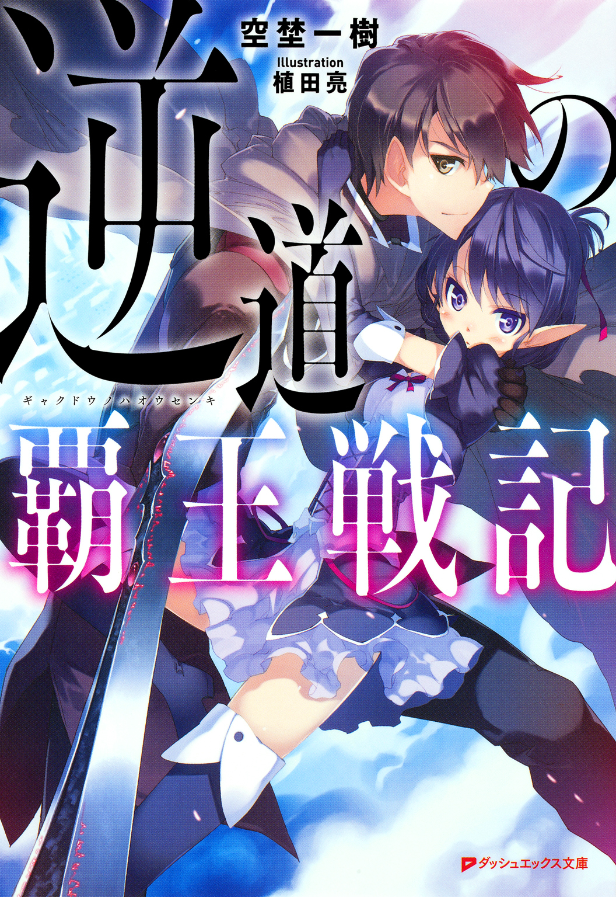
この本は縦書きでレイアウトされています。
また、ご覧になる機種により、表示の差が認められることがあります。
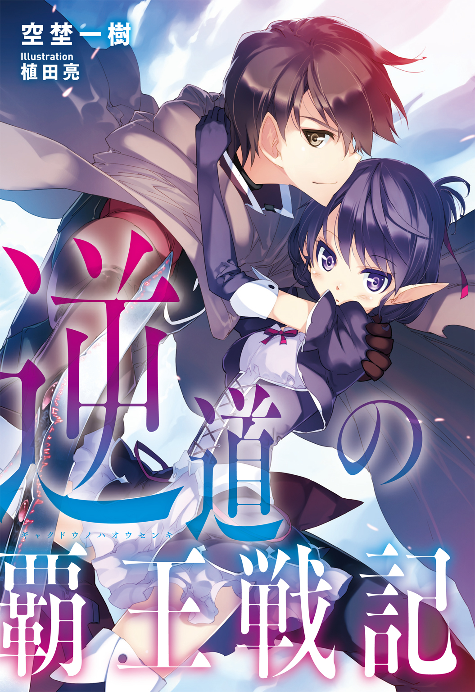
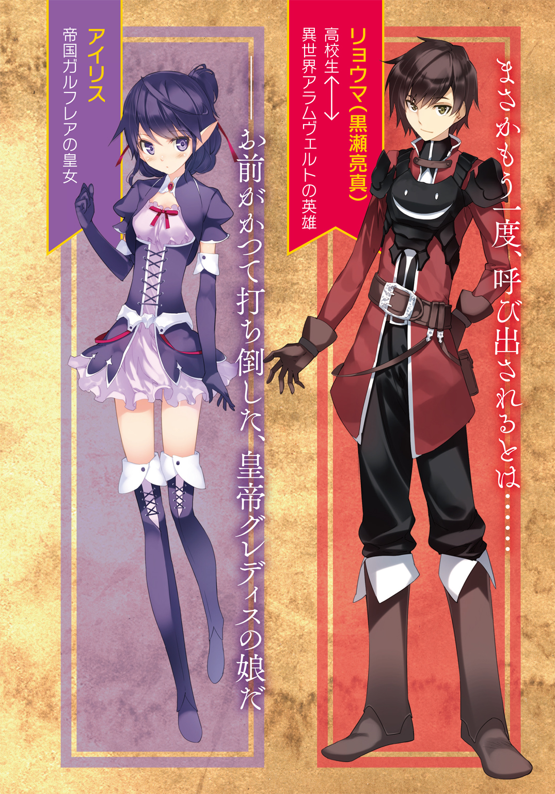
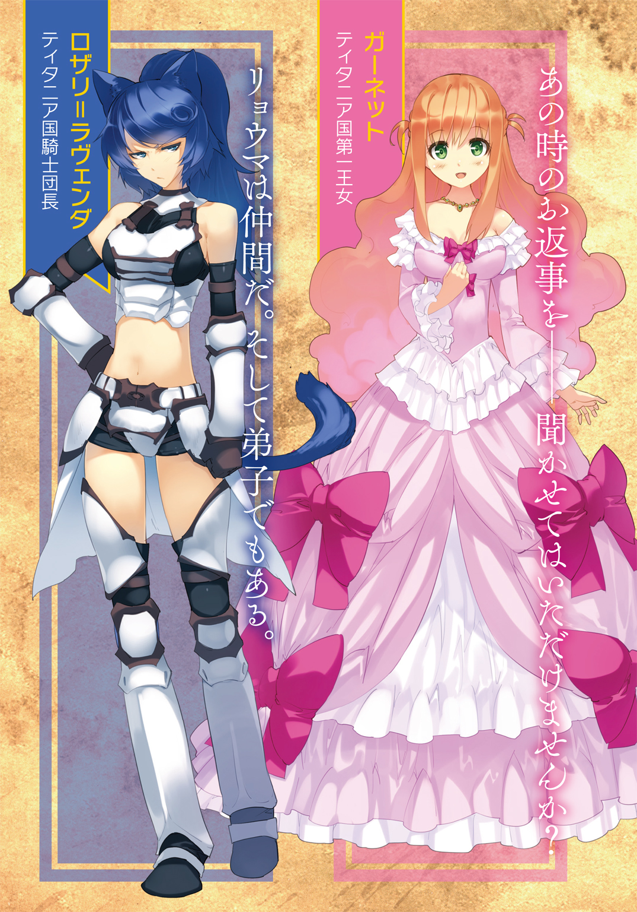
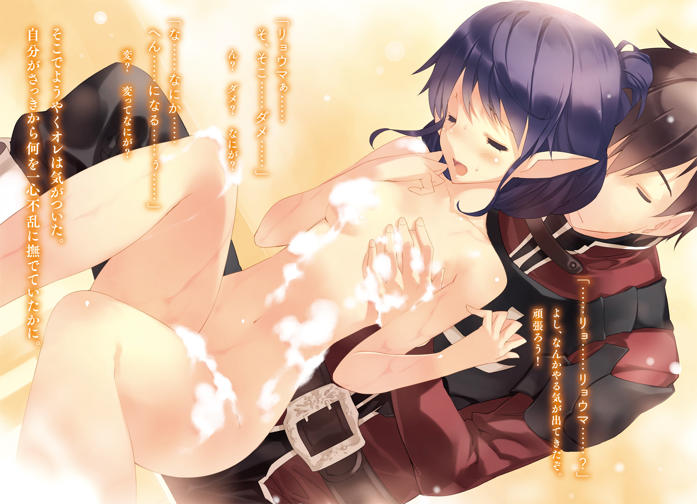
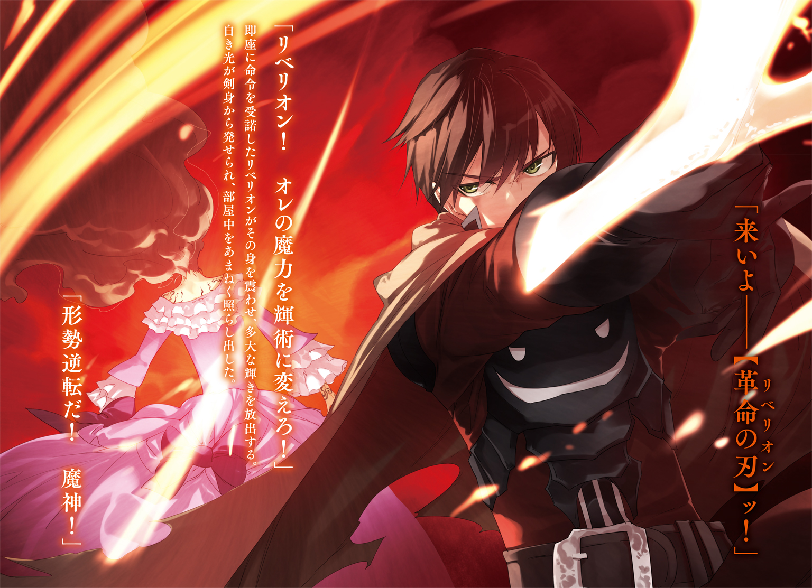
 ダッシュエックス文庫DIGITAL
ダッシュエックス文庫DIGITAL
逆道の覇王戦記
空埜一樹
第一章 終わりから始まる世界
――最後の時が、迫りつつあった。
「リョウマ様、敵は既に追い詰められています。どうか、止めを！」
傍らにいる、黄金の髪を持つ女の子が言ってくる。
「ああ、わかった！」
オレは手にもった一本の剣を掲げ、強く叫んだ。
「光よ――ッ！」
すると刀身が眩い輝きを示し、闇に浸食された世界に光を満たし始める。
『......おのれ......！』
それを疎ましく思うように、目の前の男は憎々しげな声を発した。
『おのれ......異界の男よ......！ 我は......我は、このようなところで滅びぬ！』
彼が両手を掲げると、中空に球体をした暗黒の塊が生まれる。
でも言葉とは裏腹に、度重なるダメージを受け続けたせいで、相手の体はもうとっくに限界を迎えているはずだった。
強大な力を持ち、オレ達と幾度となく戦いを繰り広げてきた因縁の宿敵。
周りの仲間達、そして、常にオレにとって一番の相棒であり続けた『彼女』の協力によって、とうとうここまで来た。
「行くぞ、皆......！」
これで何もかも全てが終わる。こいつに苦しめられてきた皆が救われるんだ。
「リョウマ様！」「リョウマ！」「リョウマ......」「やれ、リョウマ！」
仲間達の声がオレの背中を押してくれる。そうだ。行こう。
これが、最後の時だ！
「ハアアアアアアアアアッ！」
気合を入れるように声を張り上げ、オレは勢いのままに疾走した。
男が闇の力を、こちらに向かって撃ち放つ。
でもオレは少しもそれを恐れずに、ただ前進した。
失ったものを悲しんでいた人達。大切なものを奪われ憤りを覚えていた人達。
力を貸してくれた人達。明日への希望を託してくれた人達。
今まで出会ってきたあらゆる想いを刃に載せ、得物を構えると、その切っ先に全てを懸ける。
「喰らえ、皇帝――ッ！」
突き出した剣が。平和を願う世界の意志そのものが。
未来へと届く、閃光の力が――。
その瞬間、闇を裂き、敵を貫く！
『グォアアアアアアアアアアアアアアッ！』
凄まじい絶叫を上げる男の体から、暗黒の霧が噴出する。
『おのれ......おのれ......おのれええええええッ！』
呪詛の念を吐き出し続ける『それ』は、やがて姿が薄くなっていった。
『このままでは終わらぬ......終わらぬぞ......！』
オレに向かってそう言い残すと、
『忘れるな......人の欲望がある限り......我は滅びぬのだ......！ クク......ハハハハハハハハハハハ！』
哄笑と共に――完全に消え去った。
「......終わった」
何もかもが。オレの長い、長い旅が。
今ここに――幕を下ろした。
だけど未だに実感が湧かなくて、ただ茫然とするしかない。
「やりましたね......リョウマ様！」
傍らの女の子が笑顔を見せた。
他の仲間達も集まって、口々に賞賛の言葉を伝えてくる。
「......ああ......やった」
オレは呟いた。そしてゆっくりと、思い出していく。
平凡な、どこにでもいる中学生だったオレが、これまで辿ってきた激動の日々を。
「やった――」
脳裏を過る記憶の数々。それをまるで昨日のことのように思い出して。
ようやく、オレは、達成感を味わった。
そう。その日、その時、その瞬間。
――オレは、世界を救ったのだった。
意識が覚醒した時、瞼を閉じた闇の中、オレは呟いた。
「......またあの夢か」
懐かしい、という思いはない。事あるごとに見続けたものだったからだ。
でも、考えてみれば、あれは既に随分と前のことだ。
「もう三年――になるのか？」
忘れたいとは思わない。オレにとって大切なことだった。
だけどもういい加減、過去の中で生き続けるのはやめようと思う。
あの時、一緒にあいつと戦った時の仲間はもう、いない。
オレがあの世界に行くことは、二度とないのだから。
「......そろそろ母さんが起こしに来る頃だな」
だとすれば、着替えておくくらいのことはしなくては不味い。
叱られる前に、自分でできることは自分でしなければ。
やれやれと思いながら、目を開けた。
「――は？」
その瞬間、硬直する。意味がわからなかった。
目の前には、フリフリのレースみたいなものがついた豪華な天井がある。
......いや、これは、天井じゃない。確か天蓋っていうんだ。
映画なんかで、お金持ちが使っているベッドの上についているやつ。
更に、そこでオレはようやく気がついた。
自分が寝ているのも、高級ホテルのスイートルームに置かれているみたいな、ふかふかで大きなベッドだっていうことに。
「どこだ、ここ!?」
明らかにオレの部屋じゃない。慌ててベッドから降りる。
すると、やはりというべきか、室内も信じられないくらい豪華だった。
家具や調度品も見るからに高そうだし、絨毯は厚くて柔らかく、壁に飾られている絵画もよくわからないけど相当な値段がしそうである。
「もしかして――誘拐されたのか、オレは!?」
そんな危惧を覚えたが、すぐにそんなわけがないと思い直した。
自慢にもならないが、オレは極々平凡な男子高校生で、父親は中小企業の営業マン、母親は近くのスーパーでレジ係をしている主婦、という絵に描いたようなステレオタイプな家の生まれだ。
つまり、攫ったところで身代金なんてとれるわけがない。
でも、だったら、なんなんだこの状況は？
「......落ち着け、オレ。まずはここがどこなのかを把握するべきだ」
そう、それから後、事態を打開する方法を考えよう。
目が覚めたら、全然知らないところにいた。
幸いなことに、そんな経験は――初めてじゃない。
「よし。どこか外の様子が見える場所は......」
呟きながら視線を巡らせて、オレはある地点で目を止めた。
大きな硝子が嵌まった窓の先に、バルコニーがある。
あそこからなら、何かわかるかもしれない。
早速近づいて、窓を少し押した。......お、鍵がかかってないぞ！
ゆっくりと開いていく硝子窓の隙間に体を押し込み、オレは外へと出た。
びっくりするくらい細緻な造りをしたバルコニーを進み、柵に手をかける。
そして、景色を眺めようとして。
その瞬間、目の前に――竜が舞った。
それは背中に生えた両翼を雄々しく広げながら、悠々と蒼穹を切り裂くように飛んでいく。
「......おいおい」
呆然とした。いやしない奴の方がおかしい。
竜。オレがよく読む漫画やラノベ、それにゲームやアニメではおなじみになった、翼の生えた巨大な爬虫類。
日本にはいつからあんなものが住むようになったんだ？
「いや......待て、落ち着けと言ったろ？ 黒瀬亮真」
そう自分の名を唱え、己に言い聞かせてから、改めて眼下の様子を確かめた。
視界を占めるのは整然とした街並み。でも林立する建物は、そのどれもが現代日本を思わせるような造りをしていなかった。
どちらかといえば、旅番組などでよく見る西洋の地方都市的な趣である。
それも全体としてかなり古く、中世程度の歴史的背景を感じさせるような。
そうか。わかった。ここは外国の、何百年も前から存続してきた由緒ある街なんだな。
やれやれ、全く混乱させやがって。これでひと安心だ。
「......という現実逃避はこの辺りにしておこうか」
いくらなんでも無理があるのは自分でも承知している。
オレは昨日まで確かに日本にいたはずだ。高校が終わってすぐに家へ帰って、二階で図書館で借りた本を読み耽っていた。そうしたら晩御飯だよと母親に呼ばれて、下に降りたらおでんだったので、おいおいまたおでんかよこれで何日目だよ、具材を変えたらいいってものじゃないだろ、何を煮込もうとかつおぶしが主張してくるんだよ！ と不満を漏らしたら父親に、文句言うんじゃねえこのスネカジリが！ と鉄拳喰らって。
「あれ、そこから記憶がないぞ」
鉄拳のせいか？ いや多分違う。
頭の中に靄がかかっているかのようにはっきりとしない。
いやまあそれはともかく――そんな風に平凡な日常を送っていたオレが、気がついたらヨーロッパの地方都市にいました、みたいな超展開に見舞われるはずがない。
......というよりも。
重要なことがある。
オレの知る限り、ヨーロッパに――竜はいない。
「......ここ、どこだよ」
見覚えのない風景。存在するはずもない生物。
そして目が覚めた時にいた、とてつもなく豪華で広い、自室ではない部屋。
一体何がどうなっているというのか。
ただ......オレにはある種の予感がしていた。
どこかこの世界には馴染みがある。
一度、似たような景色を見たことがあるような気がするのだ。
忘れもしない。忘れることなどできるはずもない。
「ここは、ひょっとして......」
そう呟いた時。
「おはようございます、クロセリョウマ様」
背後からの声に振り返ると、そこにはメイドさんがいた。
もう一度言おう。メイド・さんが・いたんだ。
所々にフリルをあしらったシックな色合いのドレスに、頭を飾るカチューシャ――いや正確にはホワイトブリムというのだった――が可愛らしさを演出している。日本ではプリムなんて呼んだりもして、オレは男心をくすぐる響きのあるそちらの方が好きなのだが、いやそんなことはこの際どうでもいいことだ。
「お体の調子はいかがでしょうか。何か問題があればご遠慮なく仰ってください」
「いやそっちは別に問題ないんだけど......」
寧ろ他の方に問題があり過ぎる気がする。
ただオレは抱いた可能性が高まっていくのを感じていた。
目の前にいるメイドさんの髪と目は朝焼けの空みたいな鮮やかな紫で、目鼻立ちからして明らかに日本人じゃない。
それなのにオレは今、彼女の話す言葉がはっきりと理解できた。
自慢にもならないが、英語の成績は万年『二』を保持し、路上で外国人に話しかけられた途端に母国語まで忘れてあたふたとする、このオレがだ。
もちろん、メイドさんがグローバルな感覚の持ち主で、日本語を完璧にマスターしている可能性だってある。
だけど――先ほど見た街の景色といい、竜といい、日本語（？）を話す異国人のメイドさんといい、どうにも要素が揃い過ぎていた。
早急に、確かめなければならない。
「あの......少し質問いいですか？」
「何なりと」
深々とこちらに頭を下げてくるメイドさんに向かって、オレはおそるおそる尋ねる。
「ここって、もしかして......【アラムヴェルト】ですか？」
だが訊いておいて、答えを知りたいような、知りたくないような、そんな二律背反の思いが胸の中でぶつかり合っていた。
なぜまたここに来てしまったのか。一体何が起こったのか。
もしかして、大変なことが起こっているのではないか――。
そんな不安が過り、ここがヨーロッパの地方都市であると言われた方が、まだいくらかマシであるという心持ちですらあった。
......だが。
「はい、ここは、アラムヴェルトにございます」
そう、メイドさんは言った。
微笑みすら浮かべながら、はっきりと。
「......噓だろ」
やっぱりそうだったのか。じわじわと実感が湧いてくる。
アラムヴェルトは――街や国の名前じゃない。
この『世界』そのものを表す言葉だ。
オレは、そのことを知っている。
三年前、既に耳にしていたことだったからだ。
つまり......つまり、だ。
「これって......【異世界召喚】されたってことか......？」
今己が置かれている状況を把握するために、独り言を漏らす。
「しかも――」
だがそれは、あまりに。
「しかも、二回目の!?」
あまりに、自分にとって、意外過ぎる事実だった。
今より遡ること三年前。
中学二年になったばかりの頃、オレはある凄まじい体験をすることとなった。
全くもって唐突に、自分がそれまでいたところとは全く別の、見たこともない世界へとやってきてしまったのだ。
しかも偶然の事故ではなく、意図的な手段によって。
異世界召喚。
映画、漫画、小説、ゲーム――ありとあらゆる創作物ではそれこそ手垢のついたようなジャンルであった。
店頭に並んだそれらの作品を見た時、またそれか、とため息をつき、よくあるパターンだよね、と毒づくこともある。
しかし、実際に自分の身に起こってみると、とてもではないがそんなことを言っている余裕はなくなってしまった。
アラムヴェルト。オレが呼び出された世界が冠する名前である。
それは同時に、この世界において神と尊ばれる存在を意味するものでもあった。
アラムヴェルトには竜、小鬼、軟体動物、醜悪男と、オレの世界では伝説とされてきた生物達がうようよとその辺を跳梁跋扈している。
またそれどころではなく、『魔法』なんていう森羅万象を操る不可思議な術まである始末であった。
何から何まで勝手の違うことに戸惑うこちらに向かって、オレを呼び出したある少女はこう願う。
どうかわたくし達と共に、この世界を支配せんとする悪の皇帝を倒してはいただけないでしょうか。
オッケー、これは随分と金のかかったドッキリだな！
そう思わざるを得なかったオレを許してほしい。きっと誰だってそうなる。
でもいつまで待ってもネタばらしをする芸能人もカメラも姿を見せず、オレは次第に、あれ、これ、現実か？ と認識し始めた。ただ受け入れるまでには至らない。
だって、いや、そんな。いきなり異世界とか。悪の皇帝を倒してくださいと言われても。
こっちは昨日、どこの階段の下に行けば女子のスカートの中身が覗けるかとかそういう話題でですね。非常に盛り上がっていてですね。二組の斉藤さんは意外に下着が派手だった、いやだって普段はあんなに大人しいのに、これがギャップ萌えか！ とかいう、今から思えば宇宙一どうでもいい話で興奮していたのに。
そこにきて、あまりにも突然の申し出。
でも――精一杯、何の冗談だろうと逃避をしてみても、やはり現実は現実で。
女の子は呆然としているオレに説明し続けた。
数年前から各地に侵攻し始め、その圧倒的なまでの力で他勢力を呑み込み、驚くべき速さで肥大化していったある国があると。
それが【皇帝】を名乗るグレディスが治める――帝国ガルフレアだった。
グレディスはガルフレアを含む、自らの支配下に置いた全ての国に対して完全な独裁政権を敷き、その意のままに民を弄んだ。
莫大な税金を課して私腹を肥やし、気に入った女は攫ってきて妾とし、子どもは親元から引き離した上、幼い頃から自らの奴隷として手足のようにこき使う。
その暴政に逆らう者は当然現れたが、誰もがグレディスには敵わなかった。
皇帝は自身も強力な魔法を使う存在――この世界では魔導師と呼ばれる――だったのだ。
グレディスは反逆者をわざわざ皆の前まで連れていき、激しい拷問にかけた末、無残に処刑した。
眼前で展開された惨たらしい光景に誰もが恐れを抱き、以後、彼に抗おうとする者はいなくなった。
そうしてガルフレアの進撃は益々加速し、世界全土を手中に収めんとすらしていた。
しかし、このままグレディスの好きにさせてはなるものかと立ち上がった、四つの大国があった。
そのうちの一つが、オレをアラムヴェルトへと呼んだのである。
オレを召喚した少女の話によれば、どういうわけか異世界の人間がアラムヴェルトへと来ると、凄まじい魔導師の素質を持つらしい。
それこそ、皇帝グレディスに対抗できるほどの、である。
つまりオレは、この世界において悪を唯一打ち倒すことのできる存在なのだ。
全てを聞き終えたあと、オレは燃えた。燃え続けた。
やってやろうじゃないか。そう思った。
噓だ。最初は混乱した。次にかなりの勢いでビビった。
ただ......後に色々とやりとりがあり、紆余曲折を経てそういうことになったのだ。
そして打倒帝国を目指し、オレは四つの大国を率いて戦った。
激しい、途方もなく激しい戦いだった。
いくらこの世界限定で誰よりも強い魔導師となったとはいえ、オレは一介の中学生に過ぎなかった。何度も諦めようとしたが――その度にオレを呼び出した少女や、戦いの中でできた仲間達に励まされ、立ち上がったのだ。
結果、遂にグレディスはオレの手によって倒された。
世界は平和になり、オレは四つの大国共同で盛大なパーティを催されたあと、別れを惜しまれながら役目を終えて元いた世界へと還されることとなった。
この世界でずっと暮らしてはどうですか。
オレの傍に居続けた少女からはそう申し出を受けたが、断った。
やはりオレはこことは違う世界の人間だ。向こうには大事な家族や友達もいる。
本当はかなりその提案に心惹かれたのだけど、強引に言って帰ったのだ。
で、自分の世界へと帰ってきたオレは、それまでのことが夢であったかのようにどこにでもいる中学生に戻った。
もう二度とあの世界に行くことはないだろう。
そんな、一抹の寂しさを胸に抱きながら。
――そして時が経ち、高校二年になったのだが。
「まさかもう一度、呼び出されるとは......」
意外に早かったというべきか、なんというか。
ただ、こうしてまた召喚されてしまった以上、どうこう言っても仕方がない。
切り替えが早いのは、オレの唯一といっていいほどの長所だ。
もしかしたらこれは、三年前にやり残したことを果たせという神の計らいのようなものなのかもしれない。
なぜ再び異世界に来てしまったのかはひとまず置いておいて――それらをこなしていくのも良いと思った。
「やり残したことか......」
ぱっと頭に思い浮かぶのは、一人の女の子だ。
三年前、一緒に旅をした、オレにとって大切な人。
彼女と別れることが一番辛かった。だからこそ......もう一度、会ってみたい。
――リョウマ様は、わたくしのことを、どう思っておりますか？
元の世界へ帰る前、彼女はオレにそう尋ねてきた。
だがそれに対して、オレは何も答えることができなかった。
言ってしまえば、この世界に心残りができてしまうかもしれない。そう考えてしまったのだ。
何故なら彼女とは、もう、二度と会えないのだから。
だけどやはり自分の想いを伝えるべきだったと、オレは帰ってからずっと後悔していた。
だから――二回目の異世界召喚という、稀なチャンスに恵まれたのなら、彼女に会ってちゃんと言いたい。
中途半端なままでいるより、はっきり気持ちを伝えた方がずっといいはずだから。
それに、他にも、久方ぶりに顔を見てみたい人、交わした約束を守らなければならない人はたくさんいた。
（でも......三年前にオレを召喚した国とは違うみたいだな）
周囲の様子を見回しながら、そう判断した。
オレは現在、厚手の青い絨毯が敷かれた長い廊下を歩いているのだが。
左右に嵌め込まれた窓の装飾や、堅牢な壁にある細工模様など、どれも記憶にある風景とは違っていた。
ただ、どこか見覚えはある。
皇帝を倒しに行く際、世界中の色々なところを巡ったから、そのどこかなのかもしれないが、上手く思い出すことができなかった。
「あの......ここってどこなんですか？」
仕方なく、目の前を歩いているメイドさんにそう訊いてみる。
彼女は自分についてくるよう言って、オレが目を覚ました部屋から出て以来、ずっと無言のまま先導し続けていた。
「それにオレを呼び出したのは誰なのかとか、理由とか......教えてほしいんですが」
「申し訳ありません。わたくしに権限はございません」
丁寧ではあるものの、有無を言わせぬ口調で断られる。
「もう間もなく到着致しますので、今しばらくお待ちくださいませ」
「......はあ、そうですか」
そう返されてしまっては、これ以上なにも言えなくなってしまった。
仕方なく、オレはただ付き従う。
やがてメイドさんは廊下の突き当たり、巨大な扉の前で立ち止まった。
右に巨大な満月、左に吼える竜が彫られたそれの左右には、槍と鎧で武装した兵士らしき人間がそれぞれ立ち、その前にローブを身に纏った女性が待っていた。
その格好はいかにもゲームのファンタジー系ＲＰＧなどに出てくるＮＰＣを彷彿とさせて、三年前に初めて見た時は驚いたものだった。
尤も今となってはもう、懐かしさしか覚えはしないけど。
「クロセリョウマ様をお連れ致しました」
事前に連絡がいっていたのだろう。メイドさんの言葉にローブの女性が頷き、扉へと振り返ると、静かに唱えた。
「【扉よ開きたまえ。我が名は汝が主なり】」
その独特の発音に、オレはハッとなる。
それは【魔導言語】と呼ばれるもの。
少しでもオタクが入っている人達にわかりやすく言うとすれば、いわゆる魔法を使う際に唱える呪文である。それ以外であれば、アプリケーションを起動させるために入力するパスワードとでも言おうか。
そう、この世界には森羅万象の現象を操る不可思議な術が本当に存在している。
正確には魔導幻法というらしいが、こっちの世界では縮めて『魔法』と呼ばれている。
魔導言語には様々な種類の単語があって、組み合わせで色んな効果を発揮した。
魔法を使う才能を持つ魔導師達は、日々、新しい力を生み出す研究に勤しんでいるらしい。
ローブ姿の女性は恐らく、この城に勤める魔導師なのだろう。兵士達が警護役だとすれば、扉の開閉役といったところだろうか。
たとえ不審者に兵士達が敗れたとしても、彼女がその間に逃亡するなり、対抗手段を取れば、中に入ることはできない、という二重の備えになっているのだと思う。
ちなみに――魔導言語を含め、どういうわけかわからないがオレは、アラムヴェルトの人達が話す言葉の意味がわかる。
オレを以前に召喚した人曰く、呼び出された時点で世界が異物を取り込み自らのものとして新たに定着させるので、感覚が最適化されるとか、なんとか。難しい話でよくわからなかった。
まあ、なんだ。アラムヴェルトそのものが、ここで暮らしやすいように色々都合をつけてくれたと。そういうことだと思っている。
やがて鈍い音を立てながら、見上げるほどに巨大な扉が左右にゆっくりと開いていく。
メイドさんに続いて中に入ったオレは、その余りに広大な空間に目を見張った。
学校にある体育館くらい。いや、それよりもっと広いかもしれない。
だけどびっくりするくらい何もなかった。廊下から続く絨毯が敷かれているだけで、あとは調度品すら置いていない。
あるのはたった二つ。
深奥の、何段も高くなった場所にある、豪奢な作りをした椅子と。
その背後の壁にかけられた、漆黒の旗である。
「これは......どういうことだ？」
満月の傍に、竜が守るよう佇む様を象った紋章が描かれた国旗を見て、オレは息を呑んだ。二回目の異世界召喚から続いての驚愕とでも言おうか。
オレの記憶が確かであれば、それが掲げられた国に、オレが呼ばれるはずはないのだ。
だって、よりにもよって、それは――。
「よくぞ参った。案内ご苦労。下がってよいぞ」
その時、年若い声が前方から聞こえ、呆然としていたオレは我に返った。
挨拶をしたあと、メイドさんが部屋を出ていく。
扉の閉まる重々しい音が静寂の室内に響き渡る中、オレは視線の先にいる人物。
巨大な椅子に包まれるように座っている、一人の女の子を見た。
同時に――思わず息を呑む。当たり前だ。
（む......無茶苦茶可愛い）
まるでよくできた人形のようだった。
女の子は紫がかった黒い髪を首の辺りで纏めており、同色の細緻な細工を施されたドレスを身に纏っている。
目はやや吊り気味ではあるものの、そんなことが気にならぬほどに整った顔立ちをしており、肌も白雪のように穢れなく、上質の陶器を思わせるように滑らかだった。
背が小さく体つきも幼いが、それが逆に彼女に寓話の妖精を思わせるような神秘性を与えている。
加えて特徴的なのは、その両耳。
尖っているのだ。
言うなれば、最早ファンタジー系の創作物では超がつくほどお馴染みとなった――エルフのように。
「クロセリョウマだな。......よく目を覚ましてくれた。三日以上も眠り続けていたので、少々心配したぞ」
女の子は落ち着き払った声でそう言ってから、音もなく立ち上がった。
「私の名はアイリス。お前を待っていた」
階段を降り、こちらへと歩み寄ってくる。
――が、その途中、彼女はドレスの裾を踏んで思いきり前に倒れた。
「............」
無言のまま微動だにしない、アイリスと名乗った女の子。
「......平気か？」
オレは急いで近づくと、傍に跪いて手を差し出した。しばらくしてからその手を握ると、彼女はゆっくりと起き上がる。
そして、いやに落ちつき払った顔をして言ってのけた。
「平気とはなんのことだ。別に何も起こってはいないぞ」
「いやいやいや。それはさすがに無理があるだろ。すごい派手に転んでたぞ」
思わず突っ込むと、アイリスの顔に朱が差した。
「こ、転んでなどいない。新しい歩行方法を思いついたので、試してみたのだ」
「......はあ。で、その効果のほどは？」
「距離の短縮にはなるが、痛みを伴うのであまり実行しない方がよさそうだ」
そうか。それはそうだろうな。
......毅然としているように見えたけど、結構抜けてるところもあるみたいだな。
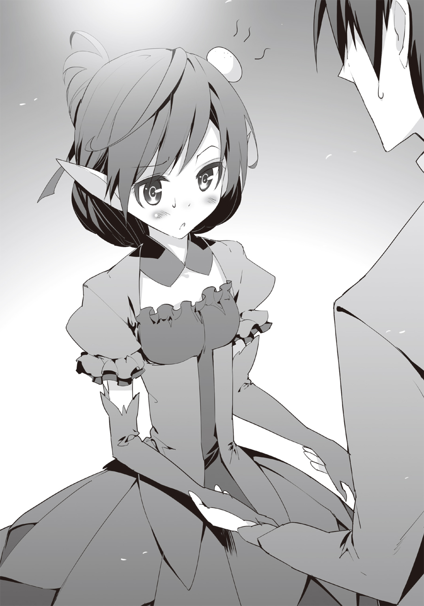
まあ、そちらの方が好感は持てるけど――と思いながら、アイリスの顔を見ると、まだ頰が紅色に染まっていた。
「......本当だぞ」
しばらくしてから彼女はこちらを見つめたまま、ぽつりと呟く。
「なにが？」
「さっきのは転んだわけではないと言ったのだ。理解しているだろうな？」
「え、まだそのやり取り続いてるのか？ もう終わっただろ？」
「お、お前が納得していないかもしれないと思ったからだ。本当にわかっているか!?」
こちらを睨みつけてくるアイリス。いや、正直もう、どっちでもいいわけなんだが。
「......わかってるって。転んだわけじゃないんだよな。オーケー」
「本当に心の底から納得しているのだろうな。もし噓で言っているのだとしたら、私は何度でも説明する気でいるぞ？」
「い、意外にしつこいな!? しました、しました！ もう、どうしようもなく心の底から納得しました！」
「......。そうか。ならよい」
満足そうな顔で、少女は微笑んだ。
なんだ。弱みを見せたくない性分なのか？
不思議に思っているオレに対し、アイリスは――次いで、予想外の行動に出た。
何の躊躇いもなく、こちらに密着してきたのだ。
「お、おい!?」
予想外の行動に慌てたが、アイリスは構わず、そのままオレの体のあちこちを触り続けた。
「ふむ。外傷はないようだな。気分が悪かったり、頭が痛かったりはしないか？」
どうやらオレを心配してくれているようだが、ちょっと、これは危ない。
可愛らしい女の子にそう遠慮なく様々な場所をまさぐられると、段々変な気分になってくる。
「だ、大丈夫だって！ それより、年頃の女の子がそういうことしたらダメだろ」
「そういうこと、とは？」
急いで離れたオレに向かって、きょとんとするアイリス。予感はしていたけど、やっぱり天然の行動だったか。
「その......男に近づいてあちこちを触るとか、そういうのだよ。どうなっても知らないぞ」
「どうなるというのだ」
「......どうにかなるんだよ」
「具体的に教えてほしい」
「それはだから、男のこう、精神的なシンボルが雄々しく――ってなんの話だよ！ もういい！ とにかく、そういうのは駄目だ！」
危ない。もう少しで余りにも堂々としたセクハラになるところだった。
強引に話を終わらせたオレに首を傾げながらも、アイリスは頷く。そして、
「うむ、了承した。よくわからないが、今後は控えることにしよう。ともあれ――」
そのままゆっくりと、口元に笑みを形作った。
「ようこそ、クロセリョウマ。私はお前の来訪を歓迎する」
可愛らしさ倍増しの笑顔に、思わずテンションが限界値を振り切りそうになったが、オレはそんな自分自身にブレーキをかけた。
浮かれるな、オレ。クールになれよ。この女の子がどれだけ可愛かろうと、アイドルなんて目じゃなかろうと、可愛かろうと、天使というものが存在するなら正にこの子のことだろうと、可愛かろうと、この子と同じ空気を吸えているだけで生きていて良かったと思えるような心持ちであろうと――って全然クールになれてない。
とにかく。口振りから察するにアイリスがオレをこのわけのわからないところに連れてきたということなのだ。行動は慎重にせねばなるまい。
「お前......誰なんだ？ どうしてオレの名前を知っているんだ？」
まずは、探りを入れてみる。
すると彼女はごく自然に応えてくれた。
「改めて名乗ろう。私はアイリス」
さっきも思ったけど、外見に相応しい美しい名前だ。
「アイリス＝ナクナ＝フェルモントだ」
次いで名字までしっかりと教えてくれた。なるほど。ナクナ＝フェルモントさんね。覚えておこう。ナクナ......フェルモント？
「ちょっと待て。......フェルモントだって？」
その響きには聞き覚えがある。いくら時が経っているとは言えど、忘れるわけがなかった。
「そう。私は、フェルモントの名を継ぐ者だ」
深々と頷くアイリスに、絶句する。
さっきの国旗といい、アイリスといい、何らかの理由があってオレを騙しているとしか思えなかった。
だって、ありえるわけがないのだ。
アイリスの言葉を信じるとすれば、ここは......ここは。
「帝国、ガルフレア――」
三年前、オレや仲間達が戦っていた、悪しき大国。
「その通りだ。ここは帝都。そして、クロセリョウマ、私は――」
アイリスが、真剣な眼差しをこちらに向けながら、告げてきた。
「――お前がかつて打ち倒した、皇帝グレディスの娘だ」
「......え」
時が止まったかと思った。それくらいの衝撃だった。
「ええええええええええええ!?」
遅れて仰け反り、混乱する。もうさっきからわけのわからないことが起こりっぱなしで、自分の処理能力が限界値を振り切っていた。
「な、なんで、オレが帝国に？ しかも皇帝の娘？ どういうことだ!?」
そのため矢継ぎ早に問いを投げつけて、一刻も早い解答を望む。
「気持ちはわかるが、落ち着け、クロセリョウマ」
そんなオレを宥めるように、アイリスが肩を叩いてきた。
背を伸ばしながらの行動であるため、幼い子が無理をして大人ぶっているようで、状況を忘れてときめく。
「......お、おう」
我ながらどうかと思うが、そのおかげもあって、何とか落ち着きを取り戻せた。
でも、依然としてあらゆる部分が不明のままだ。
何故、彼女がオレを呼んだのか。
考えてみたところ一番はじめに思い当たるのは、復讐、だった。
いなくなってしまった父親の仇を再度呼び出し、殺すことで自らの溜飲を下げる。
実にわかりやすい行動である。筋道が通っていた。
いや通っていては困るのだが。さすがにまだ死にたくはない。
しかしそれ以外となると、皆目見当がつかない。
......オレは、アイリスに気づかれないよう、自らの手を握った。
目を閉じ、その『流れ』を感じてみる。
流れとは即ち、魔法を使うために必要なエネルギーの認識だった。
魔力、と呼ばれるそれはこの世界の至るところに漂っている、目に見えない粒子状のものであるらしい。魔導師はそれを体内に取り込み、魔法という別種の現象へと転換させて、再度外部へと放出する能力を持つ者の総称だ。
この世界に呼ばれたあと、オレは魔法の使い方を習い、ひと通りの術は使いこなせるようになっている。
「......大丈夫そうだな」
体の中を巡る魔力の脈動を感じた。この世界に呼び出された時点で、オレはまた魔法を使えるようになっている。
もしアイリスがこちらに何らかの攻撃を仕掛けようとしてきても、反撃することができそうだった。
いくら可愛いからといって、命を取りに来られたら、こちらとて全力で立ち向かう他ない。
「でも可愛いのでできれば傷つけたくないから、そういうのはなしにしてほしい......」
「なにか言ったか？」
アイリスから怪訝な顔を向けられて、オレは首を横に振った。
ひとまず、万が一のために必要となる手段はあるわけだし、一つ一つ確認していくことにする。
「皇帝の娘って......じゃあ、ここは帝都にある宮殿なのか？」
「そうだ。蒼光宮という」
となるとこの場所は、謁見の間か。どうりで見覚えがあるはずだ。
三年前、オレは確かにここでグレディスと戦った。
よくよく見ればその際の爪痕が、そこかしこに残っている。
「......そういえば仲間と一緒に宮殿に乗り込んだ時、可愛い子がいたな」
混戦の中だった上、皇帝を目指してひたすら駆け抜けていたから、それほど詳しく覚えてはいないけど。
遠くの方で誰かに連れられて去っていく姿を見たような気がする。
「か、可愛いかはともかく」
こほん、と咳払いして頰を赤らめるアイリス。王族らしく振る舞ってはいるが、中身は年頃の女の子らしいところがあるみたいだ。
「クロセリョウマが乗り込んできた際、切迫した事態を危惧した配下の者達が、私を密かに帝都の外へと脱出させた。お前はその途中を偶然、目にしたのだろう。私は父上の傍にいると主張したが、半ば強引に、騒動が収まるまで軟禁されていたのだ」
なるほど。そういう事情だったのか。
「まあ、それは納得したとして......重要なことを訊きたいんだが」
オレは我慢しきれなくて言った。
「なんでオレをまたこの世界に呼んだんだ。しかも、グレディスの娘であるお前が」
「......うむ」
アイリスは頷きつつもすぐには答えを返さず、代わりに高い天井を仰いだ。
「クロセリョウマ。この宮殿を、静かだとは思わないか？」
「え？ あ、ああ、そうだな。言われてみれば」
ここへ来るまでにも、兵士や騎士らしき人達に出会ったが、極端に数が少なかった。
三年前は、もっとたくさんいた気がするけど。
「まるで、皆が揃ってどこかへ行ってしまったみたいだ」
「みたい、ではない。今のところここで働いている者はほとんどいない」
「なんでまた」
「......父上が倒されたあと、全員、帝国から逃げたからだ」
うっ。......そうか。世知辛いものだ。
いや、でも、仕方がないのかもしれない。
実質的に、帝国はグレディスの持つ力によって成り立っていたようなものだ。
その屋台骨が折れてしまったのであれば、あとは自然に崩れ去るのを待つばかり。
いずれ倒れることがわかっている建物の中に、いつまでも居残っている奴はいない。
まあ......オレが他人事のように言えることでもないのだが。
屋台骨を折った張本人だしな。
「そういえばこの謁見の間にも昔はもっと色々なものが飾ってあったよな。壺とか鎧とか」
「父上亡きあと、兵士達の反乱が起こったそうだ。彼らは結託し、近臣達を拘束したあと、城の中にある高価なものを根こそぎ持って逃げていってしまったらしい」
玉座を振り返り、アイリスが言った。その声は、どこか寂寞したような思いを孕んでいるようにも思える。
「オレがさっきいたところには色々あったけど」
「わずかに残った部下が、かろうじて略奪から守ることができたものを保管するために、あそこへ運び入れたためだ」
要するに、この城にはあの部屋以外ろくなものがない、と。そういうことか。
「そんなことがあったのか......」
兵どもが夢の跡、とはよく言ったものだ。あれほど隆盛を誇った国が、たった三年でこうまで変わってしまうとは。
「仕方のないことだ。父上なき今、この国に未来はない。......彼らの気持ちも理解できる」
俯き、短く息をつくアイリス。どんな言葉をかければいいのか、オレには判断がつかなかった。生半可な慰めは逆効果だろう。何故なら帝国をこんな風にしてしまったのは、オレ自身なのだから。
「――クロセリョウマ。お前をアラムヴェルトへ呼び出したのは、何も復讐をするためではない」
唐突に、アイリスは話し始めた。
「というよりも、私はお前にわずかなりとも憎しみを抱いてなどはいない」
「いや、でも......」
理由があったとはいえど、オレが彼女の父親を倒してしまったのは事実だ。そのことに対して何の憤りも感じていないとはさすがに思えなかった。
しかし彼女はこちらを向くと、自然で魅力的な微笑みを浮かべる。
「噓ではない。もしお前が父上の命までも絶っていたのであれば、多少の怒りは覚えたかもしれないが......。お前は最後、皆の反対を押し切って父上を生かそうとしてくれたと聞いている」
「あ、ああ、確かにそうだけど......別にそんな、大したことじゃ......」
何と言うか、単純に人の命を奪うことに気後れがあっただけで。
あとは、当たり前のように人を殺すべきだと主張する他の面々がやや恐くなったということもあった。
彼らに従えば、オレ自身が皇帝に近づいてしまう気がしたのだ。
だから別に、どんな悪だろうと命は命だとか、そんな高潔な考えを持っていたわけじゃない。
「それに――結局、グレディスを助けることはできなかったしな」
「......仕方のないことだ。父上の行ったことを考えれば、あれもまた創造主アラムヴェルトの与えた罰であったのだろう」
アイリスはオレを気遣うような言葉を口にしてから、
「それにお前自身がどういう考えでとった行動であろうと、私にとっては途方もない慈悲に思えた。あれほどの非道を行った父上を生かそうとしたお前の心が、私の中に芽生えかけていた醜い感情を取り払ってくれたのだ」
「......そうか」
そこまで言われると、さっきアイリスを疑っていたことが、申し訳なくなってくる。なんだか居心地が悪くなって、オレは頭を搔いた。
「で......えっと。復讐とかじゃないなら、なんでオレをもう一度召喚したんだ？」
「お前に頼みがある」
アイリスは、アメジストにも似た深い色の瞳に、オレの姿を映した。
「かつて我が父上を倒し、帝国の支配よりこの世界を解き放った英雄、クロセリョウマ」
かつてグレディスの座していた玉座を背に、堂々とした態度で。
「お前に――今度は、このガルフレアを救ってほしいのだ」
「......なんだって？」
意外過ぎる申し出にオレは眉をひそめた。オレが、帝国を救う？
「皇帝亡き今、この国に統治者は存在しない。私が帝位を継承することも考えたが、それでは帝国の現状を変えるにはいささか足りぬのだ」
そう言って、数歩、こちらに歩み寄り。
「だがお前なら。父上に匹敵するほどの力を持つお前になら――それができる」
アイリスは、ゆっくりとオレを見上げた。
揺るぎない意志を込めた眼差しは、真っ直ぐにこちらを射抜く。
「頼む、クロセリョウマ。――私の代わりに、この国の新たな皇帝となってくれ！」
朗々と、広大で空虚な部屋に響いていくその声に。
「............はい？」
オレは、ちょっとばかり間の抜けた言葉を返すしかなかった。
大通りには様々な人達が行き交っていた。
荷物を背負った商人風の人や、腰に剣や斧を提げた戦士風の人。もちろん、軽装に身を包んだ帝都民らしき人達もいる。
左右には屋台のような簡易的な建物がずらりと並んでいて、干し肉や果物、魚などが並べられていた。
どことなく、元の世界の中世時代と似ているようで、どこかが決定的に違う。
そんな風景を眺めていると、改めてアラムヴェルトへもう一度やってきたのだという実感が湧いた。
ただ実を言えば帝都をゆっくりと歩くのは、これが初めてだ。
三年前は既に戦火に包まれていた中を脇目も振らず、王宮に向かって走っていったため、ゆっくりと風景を楽しむ余裕なんかなかった。
だから、懐かしいようで新鮮味があるという不思議な感覚に包まれていたわけだが。
（......なんか、寂しいな）
ふと、そう思った。
人もいる。店も出ている。王宮へと伸びる通りとしては十分だ。
それなのに、妙に活気がなかった。
人々の顔もなんとなく冴えなく見え、商品を売る者達の態度も投げやりに思える。
まるで何かを諦め、自棄的になっているような、そんな印象だった。
「なあ、アイリス。なにかちょっと、街の様子が変じゃないか......？」
そう問いかけようと視線を前に戻したところで、オレは目をしばたたかせる。
前を歩いているはずのアイリスの姿が見当たらなかった。
慌ててあちこちを探すと、間もなくして彼女の後ろ姿を捉えた。
彼女は今、地味な灰色のローブを頭からすっぽりと被っていた。民に自分の正体を知られないようにするためだという。
ちなみにオレの方は、アイリスが予め用意していたこちらの世界の服に着替えていた。
アラムヴェルトでは、オレがこちらへ来る前に身に纏っていた普段着ではさすがに目立ち過ぎるためだ。
それはともかく――アイリスはある露天商の前に屈みこみ、何かを熱心に見つめている。
「......どうしたんだ？」
近づいて声をかけると、アイリスはこちらを振り返って足元を指差した。
「リョウマ、すごいぞ。見たこともない食べ物だ」
彼女の前を覗き込むと、そこには赤い絨毯の上に幾つもの木箱が置かれている。
そのうちの一つは見本として蓋が開けられて中身が明らかになっており、中には七つの色が混ざった奇妙な果実が収められていた。
「店主よ、これは一体どのようなものなのだ」
今にも食いつかんばかりに好奇心を剝き出しにして、アイリスが身を乗り出す。
すると、彼女の前に座っていたヒゲの生えた男は、にやりと笑みを浮かべた。
「よくぞ訊いてくれた。こいつは遙か東方にある国の樹にのみ生える果物でね。一口齧ると、果肉はとろりトロけて舌の上で踊り、蜂蜜のように濃厚な甘みが口全体に広がる。それはまるで、この世のものとは思えないほどの美味さなのさ」
「な、なんと......そのような素晴らしいものがあるとは......」
男の説明に夢中になるアイリスは、堪えきれないというように喉を鳴らす。
「い、いくらだ。いくらで食えるのだ!?」
「そうだな......俺も苦労しながら海を越えて仕入れてきたものだ。そう安い値段では売れないが、お嬢ちゃんと出会ったのも縁だ。特別に銀貨一枚でどうだい？」
人差し指を立て、そう要求してくる相手に、アイリスは「おお！」と目を輝かせた。
「そ、そうか、それでいいのか。よし、わかった！」
彼女は頷いたあと、懐に手を入れると、
「もし本当に貴重かつ美味なもので、流通経路がはっきりしているなら、他国との交易の材料に使うことができるからな......！ その前に味見をするため、買おうではないか。......決して私が食べたいとか、そういうことだけではないのだぞ。決してな！」
なにやら言い訳のようなことを小さな声で口にして、財布を取りだそうとする。
そこまで見てオレは、どうやら彼女が本気らしいと悟った。
そのため、
「待った、アイリス。そんなもん、銅貨一枚の価値もないぞ」
アイリスの背後から手を伸ばし、見本の箱から果物を摑みとる。
「おい、なにをするんだ！」
怒った男が取り返そうとするが、それをするりとかわし、オレはしげしげと掌の中にあるものを眺めた。
「......やっぱりか。よく見ろ、アイリス。これはただの林檎に色を塗っただけだ」
「な......なんだと!?」
驚いたアイリスが大きな目を見張った。
「粘土か何かで加工してあるようだが、作り方が雑だからよく見ればわかる」
手渡した果実を、アイリスは注意深く観察し、低く唸る。
「な......なんと......本当だ」
「露店じゃよくある話だ。以前にも仲間の一人が騙されたことがあったよ」
どこの国でも、こずるい真似をして儲けようとする奴はいるってことか。
「おっさん、いくらなんでもただの林檎で銀貨一枚は高すぎるんじゃないか？」
三年前に旅をしたことで、こっちの世界の通貨価値に関してはオレも知識があった。
アラムヴェルトでは世界共通で金、銀、銅の三種類のコインが通貨として流通している。
銀貨一枚というと、日本円に直せば数万円程度にもなった。
「お、お前、私を騙したのか！」
責めるように言うアイリスだったが、男は謝罪するどころか、そっくり返って鼻を鳴らす始末だった。
「......フン、こんなモンで騙される方が悪いんだよ」
「なんだ、その言い方は！ 私の期待を返せ！」
「うるせえな。今の帝都じゃ、こうでもしないと儲けられないんだよ！」
男は怒鳴り散らすと、商品をかき集め、絨毯を丸めて足音荒くその場を立ち去っていく。
「な、なんという男だ......うう。せっかく貴重なものが手に入ると思ったのに」
ひどく落ち込んだ様子のアイリスに、オレは苦笑した。
「あの手の奴はどこにでもいる。気をつけた方がいいぞ」
「む。では、あれか。以前に買った『高山でのみ育つ青色人参』や『食べれば幸せになれる巨大魚』や『霧の森の奥に生える幻の茶葉』も全て噓だったのか!?」
「もう騙されたあとだったのか!?」
「い、いや、でも、違うぞ、リョウマ。仮にそれがそうだとしても、あれだ。少し前に購入した、『伝説の実がなる種』は噓ではないだろう！ 実際にあれは水をやると大きくなって実をつけたしな！ 実に美味しかったぞ！ まるで赤茄子のような味だった！」
「......。じゃあ、それ、赤茄子だったんじゃないか？」
「ほわっ!?」
言われて初めて事実に気づいた、というように、アイリスは見てわかるほど驚いた顔をした。
「な、なんという巧妙な罠だ......」
「この上なくわかり易い仕掛けだと思うが」
というよりも向こうもよくそれで騙そうと思ったな。
......どうにも、この子はあれだ。物凄く純粋な人間でもあるようだ。
元の世界でもそうそういない。いわんや、こちらの世界でも珍しい存在なのではないだろうか。
皇帝の娘だから――なのか？
「いや、そうだとしても世間知らず過ぎるような......」
いや、まあ、それはいい。
アイリスがその小さく瘦せた姿とは裏腹に、随分な食いしん坊だということもわかったけど、とりあえず置いておこう。
それよりも、今の男の台詞が気にかかった。
今の帝都ではこうでもしないと儲けられない。
人としての道を外れなければ金を得られないほど、帝国は切羽詰まっているのだろうか。
「なあ、アイリス。オレに見せたいものがあるって、ここまで連れてきてくれたけど......それがこれなのか？」
言って、オレは周囲に視線をやった。
――この国の新たな皇帝となってほしい。
そう頼んできたあと、ぽかんとするオレに向かってアイリスは言った。
まずはガルフレアの今を見せる。そこからまた話の続きを聞いてほしい、と。
それは構わないのだけど、何もアイリス自身が城下の案内を引き受けなくてもよかったと思う。仮にも一国の姫であるというのなら、その役目に相応しい従者なりに命じればよかったのに。
それに街に行くにも正門からではなく裏口のようなところから、妙にこっそりとした感じで出てきたし。何か事情でもあるのだろうか？
考え込んでいると、アイリスははたと我に返ったような表情をして、少し頰を赤らめた。
「おっと......つい、お腹が減っていたせいで......もとい、興味深いものがあったために、寄り道をしてしまった。お前に見せたいのはここではない。ついてきてほしい」
「お腹減ってるのか？」
「へ、減ってない！ 減ってないぞ！」
言い返しながら、踵を返し、アイリスは再びオレを先導し始める。
オレは首を傾げながらも、小さな背を追って、歩き出した。
しばらく進むと、アイリスはある路地裏を曲がる。
それに続き、オレも同じ場所に足を踏み入れたが――。
「うっ......」
思わず、口元を押さえる。
すえたような臭いが、そこかしこから漂っていた。
石畳の道のあちこちにはゴミが散乱し、漂う空気は酷く淀んでいる。
まるで汚泥の底にいるかのような感じだ。
先ほど見た大通りは、かつてと変わらぬ状態を保っているように思えた。
だけどここは、まるで別世界のようだ。
住人のほとんどは建物の壁にもたれかかり、項垂れたまま微動だにしなかった。
そうじゃない人達ですら、力のない足取りで引きずるように歩を進め、胡乱な眼差しを虚空へと向けている。
店先には商品がほとんど残っておらず、あっても腐りかけた果物とか、どこかで拾ってきたような服とか、錆びて使い物にならなくなった武器など、到底まともに売れるような代物ではなかった。
「一体......何があったんだ」
呟いたオレにアイリスが足を止め、ぼそりと小さな声で囁いた。
「あの大通りは、かろうじて存在している、帝国が築いた栄華の残滓に過ぎない。一つ道を外れればこんなものだ」
下唇を嚙み、切なそうな表情で、彼女は続ける。
「お前達によって父上が倒されたあと......帝国に属していた全ての国が独立を表明し、次々と離反していった。力を失い、それを止める術を持たぬ我々は承諾する他なく、瞬く間にガルフレアは元の小国へと戻ったのだ」
「......それだけでこうなってしまうのか？」
「いや。そこから更に、打倒帝国を掲げていた四つの大国によって、ガルフレアはそれぞれの支配下に置かれた。搾取する側であったこちらの立場は逆転し、帝国は財産をほとんど没収された上、更に戦争によって生じた被害に対する損害賠償として、莫大な金を支払うこととなったのだ」
でも、そんなものがすぐに払えるわけはない。
ないところからあるものを生み出すべく、ガルフレアは国民に対して度を超える税金を課す他なかった。
当然、物価は高騰し、商品が売れなくなるために潰れる店が続出し、貧困に喘ぐ者が溢れる。また、食料自給率の低い帝国は食料を主に他国からの輸入によって賄っていたが、財政がほぼ破綻しているためにそれすらも不可能となった。
仕事にも就けない。それなのに物の値段は高い。おまけに満足な食事すらできない。
結果的に、国全体が荒み、全ては落ちぶれてしまった。
......以上が、アイリスの話してくれた帝国における現状である。
「そんなことになってたなんて......全然知らなかった」
どうりで、大通りにも活気がないはずである。
「全てが行われたのは、お前が元の世界に帰ったそのしばらくあとだ。無理もない」
「だけど、いくらなんでも酷過ぎるんじゃないのか。どうしてそこまでする必要がある？」
「お前に協力した四つの大国――今ではその成果を讃えられ、【四大聖国】と呼ばれているが、彼らの目的は恐らく、帝国の緩やかなる滅亡だ」
滅亡。その言葉が持つとてつもなく嫌な響きに、オレはぞっとした。
「真綿で首を絞めるようにゆっくりと、あらゆる全てを奪ったあとに、ガルフレアをこの世から完全に抹消するつもりなのだ。実際、私の部下達をはじめとして他国に亡命する者もあとを絶たず、帝国からは徐々に人がいなくなっている」
このまま続けば、国がその形を保つことすらできなくなってしまう、ということか。
「全ては父上のような人間を二度と生み出さないため。......過ちを犯したが故の罰だろう」
「それにしたって、なんていうか、これは......」
凄惨という、その一言に尽きる。
全ては自業自得。好き放題にしていたツケが回ってきたのだ。
そう言われてしまえば、それまでだろう。
実際、皇帝――グレディスのやりようは許されざるものだった。
侵略を受けた国では死が溢れ、数えきれないくらいの絶望と悲しみが氾濫したのだから。
......だけど。
だけどなんだろう。この腑に落ちない気持ちは。
「クロセリョウマ。お前にこんなことを話しても、噓をつけと罵られるかもしれない。だが聞いてほしい」
不意にこちらを振り返ると、アイリスは言った。
「帝国には確かに贖いきれぬほどの罪がある。私はどんな責め苦を言い渡されようとも一向に構いはしない。それがフェルモントの――皇帝の血を引く者の務めだ。しかし、これだけはわかってほしいのだ」
胸に手を当て、懸命な思いを紡ぎ出すように。
「全ての臣下や国民が、心の底から皇帝の行いに賛同していたわけではない。父上は余りに大きな力を持ち過ぎたのだ。それ故に彼らは恐怖によって己を縛りつけられ、皇帝に従わざるを得なかった」
「......嫌々やっていたってことか？」
「その通りだ。そして私もまた幼く――父上の凶行を止めることは敵わなかった」
口惜しさを表すようにアイリスは唇を強く嚙む。
彼女が幾つなのかはわからないが、少なくともオレより年上には思えないので、三年前の当時は今よりもっと幼かったことだろう。
確かに、大人の......それも父親の間違いを正すにはいささか無理がある。
「だが父上亡きあと、帝国ガルフレアは皇帝の呪縛から解き放たれたのだ。国を建て直し、再興させるには今この時を逃して他にはない」
「それと、オレが皇帝になるのと何の関係が？」
「私は、帝国を以前のような恐ろしいものではなく、国民主体の、平和で穏やかな国へと作り替えたいと思っている。だがそのためには、他国からの協力が不可欠だ」
それは、そうだろう。
今までの話を聞いていると、とてもではないが、帝国の自力だけで立ち直ることができるとは思えなかった。
「しかし、他国にいくら言葉で帝国が生まれ変わると説明しても、受け入れてはくれまい」
「......まあな」
あれだけのことをしておいて、窮地に追い込まれてから、反省して良い国になるから助けてください、なんて言っても向こうからすれば虫のよい話だと思われるだけだろう。
「だからお前の協力が必要なのだ、クロセリョウマ」
アイリスがオレの腕を摑んでくる。
「四大聖国を率いて皇帝グレディスと戦い、見事に勝利を手にした英雄。お前がこの国の新たな皇帝となったのなら、帝国の主張が偽りでないことはわかってもらえるはずだ」
――そういうことか。
理屈の上では、納得のいく話ではあった。
「頼む......クロセリョウマ。帝国がある程度再興するまでで構わない。私に協力してもらえないか!?」
「......参ったな」
どうすればいいのか。全く予想外の要求だ。
正直なところ、いきなりそんなことを言われても、という感じである。
重ねて言うがオレはどこにでもいるようなただの高校生だ。
三年前は皇帝を倒すという大きな目的に対してがむしゃらに邁進した結果、どうにかなったが。
それが一国の王、ときたものだ。
ある意味、役目としては前まで以上に大変なものであると言えた。
「......駄目か？」
アイリスが更に尋ねてくる。断るような雰囲気を出してしまったせいか、そのちょっと太めの眉は垂れさがり、瞳の奥に悲愴感が垣間見えた。
「勝手に呼び出しておいて、何を言う、と思うかもしれない。私自身も相当に悩んだのだ。だがやはり、帝国を救うにはお前の手を借りるしかない。頼む、クロセリョウマ。お前の目から見て、ここは最悪の国かもしれない。だが......それでも、私の生まれた場所なのだ」
「うっ......」
そういうことを言われると、ちょっと、弱い。
「私は自分が育ったガルフレアを守りたい。このまま世界からなくなってしまうのを、黙って見過ごすのは嫌なのだ。だから――だから」
あ、不味い。この子、泣きそうだ。いや、間違いなく泣く。不味いぞ。女の子を泣かせるのは不味いぞ。帝国がどうこうというより、ちょっと、そっちの方が今は危険だ。
「あー、いや、あのな。その、アイリスの気持ちはすごくよくわかる。オレもできれば助けてあげたいよ」
「そ、そうか。受けてくれるか？」
「いや、待って。待って！ だからってその、オレが王様になるとかそういうのは、ちょっと。そこまで大それたことができるとは思えないし」
「心配するな。政務的なことは全てこちらが請け負う。お前はただ、この国の象徴となってくれればいいのだ」
「そういう問題でもなくてだな......」
単に責任が大き過ぎるというかなんというか。前みたいに、それこそゲームで勇者が魔王を倒しに行くようなのとはわけが違う。
「それに......もしオレがこの国の皇帝になったら、他の国に行ってガルフレアがもう悪いことをしないって説明しなきゃいけないんだろ？」
「あ、ああ、そうなる」
「それって――つまり、オレ、昔の仲間を裏切ることにならないか？」
かつて共に手を取り合って戦った奴が、いきなり敵国の皇帝になって現れるのだ。
なんでそっち側についてるんだてめえ、みたいな喧嘩腰になるに違いない。
「......。......それは......そうだが」
「だろ？ そうだよな？ オレ、それ、相当にピンチじゃないか？」
もし、呼び出されていたのがガルフレア以外の国だったら、オレは素直に助けることを了承していたかもしれない。
三年前――元の世界では平凡な中学生に過ぎなかったオレを、この世界の誰もが頼りにしてきた。
召喚された当初こそ、それに戸惑っていたけど。
段々とその気持ちは、自分の中での、誇りに変わっていったんだ。
だから、たとえそこで頼まれたのが大変なことだとしても――。
昔の仲間達に協力をしてもらいながら、また一緒にこの世界のために何かできるというのは、悪くないことのように思えた。
でも......折角仲良くなった皆を敵に回してまで帝国の味方になるっていうのは、なんだろう。
正直なところ、どうしてそこまでしなきゃいけないのかっていう思いがあった。
別に三年前も、自分にとって益になるから皇帝を倒しに行ったわけじゃないんだが。
それでも、何の得もないのに、自分の身を危険に曝してまで協力できるかって言われれば、オレだってそこまで底抜けの善人じゃなかった。
「そうか......そうだな。やはり、そうか......」
アイリスは腕を組み、可愛らしい顔をしかめて唸り始めた。どうやら先ほどの指摘については、思い至っていなかったらしい。彼女が相手のことを考えないような無神経とは思えないので、多分、それほど焦ってやったことだったんだろう。
「さすがにオレ、そういうのはちょっとな......」
向こうには、仲良くなった女の子もいることだし。
あの子の顔が怒りで真っ赤になるところはあまり見たくないし、オレが皇帝になってしまうと、彼女に言いたかったことも言えなくなってしまうかもしれない。
「だ、だが、もう方法がこれしかないのだ。......なんとかならないだろうか？」
縋るように懇願してくるアイリス。オレとしてはどうにも答えようがなかった。
何か他に手があるかもしれない。一緒にそれを思案してみるしかないだろう。
考えた末、ようやく出たのはそんなあやふやな提案で。
だがそれ以外、オレの回転の悪い頭では思いつきそうにもなかった。
故に、仕方なく口にしようとした――その時。
「てめえ！ 寄越せっつってんだろうが！」
通りの向こうで大きな声が聞こえて、オレはそちらの方に目をやった。
大柄な男が一人、小さな男の子から何かを奪おうとしている。
男の子が持っているのは鞄で、外れかけた蓋からは、小さめのパンが二つ見えていた。
「や、やめてよ......！」
弱々しい声で抵抗を試みるも、二人の力の差は明らかだ。あっという間に、男の子はパンの入った鞄を奪われてしまった。
「ガキのくせにいいモン持っていやがる。お前が喰うには勿体ないから、おれが貰ってくぜ」
「ま、待って！」
鼻を鳴らして立ち去ろうとする男の足に、男の子はしがみついた。
「それ、お母さんにあげようと思って、貯めてたお金でやっと買ったの！ お母さん、病気だけど薬が買えないから、せめてそれくらいって......」
「うるせえ！」
鬱陶しそうに拘束を撥ね除けると、男は地面に転がった男の子の胸ぐらを摑み上げる。
「てめえの母親がどうなろうがどうでもいいんだよ。今のこの国じゃ弱い奴から死んでいくんだ。恨むんなら、好き放題した挙句におっ死んじまった皇帝にしろよ」
乱暴に投げられた男の子は、硬い石畳に体をぶつけ、苦しげな声を出した。
男はそれを見てせせら笑うと、鞄から取り出したパンを咥え、歩き始める。
「......気分の悪い光景だな」
オレはため息をつくと、男の子を介抱しようと近づいた。アイリスが同行している以上、目立つことをするわけにはいかないが、この程度なら大丈夫だろう。
と、思っていた矢先。
「待て、そこの男！」
目立ってはいけないはずの当の本人が、とてつもない声量で男を呼び止めた。
「お、おい、アイリス！」
なにやってんだ、と言いかけたが、時既に遅し。
「ああ？ なんだ？」
男が振り返り、アイリスの小さな体を見下ろした。
対峙する様はさながら大山を相手どる子狐のようだったが、彼女は少しも動じることなく、真っ直ぐにその指で男を差す。
「こともあろうに子どもの食べ物を強奪するとは恥を知れ！ しかも彼のパンは母親への気遣いから購入したものというではないか。人の心を持つというのなら、今すぐにそれを返してやれ！」
物凄い正論だった。ぐうの音も出ないとはこのことだ。
ただ、世の中、正論がそのまま通用するほどまっとうなつくりはしていない。
「うるせえ！ いきなりしゃしゃり出てきてふざけたこと抜かしてんじゃねえ！ 今すぐおれの前から消えねえと、その面ぶっ飛ばすぞ！」
案の定、男は柄の悪い人間のお手本みたいな言い回しで返してきた。
でもアイリスはまるで怯まない。
「いいや！ この子にパンを返し、先ほどまでの行為を謝罪するまでは一歩も引かん！ どこまででもついていって、同じ要求を続ける！」
「て、てめえ......！」
男の怒りが最高潮に達しようとしていた。オレは男の子の様子を確かめながら冷や汗をかく。幸い彼に怪我はなく、今すぐ治療しなければならないというわけではなさそうだった。これならこの子のことはひとまず置いておいても大丈夫だろう。
「お、おい、アイリス、ちょっと待てって......」
男の子から離れてアイリスを止めようとした。しかし彼女は尚も毅然と男に立ち向かう。
「さあ、申し訳なかったと、少年に言うがいい。そしてパンを彼に返すのだ！」
「――うるせえ！ 黙れっつってんだろうが！」
遂にキレた。男がその手を伸ばし、アイリスの羽織っていたローブの襟首を握る。
「さっきから聞いてたら偉そうに！ てめえ、何様だ！」
そして己の元に引き寄せようとしたその時――最悪なことが起こった。
アイリスの顔を隠していたローブのフードが、後ろへと落ちてしまったのだ。
露になるその美貌に、男は息を呑んだ。
「て、てめえ......!? ま、まさか、皇女か......!?」
見る見るうちに顔色を変えると、声を震わせた。
不逞の輩とはいえ、さすがに帝国の姫である彼女の顔は知っていたらしい。
その言葉に、騒ぎを遠巻きにしていた周囲の住民達がどよめいた。
「......いかにも。私はグレディス皇帝の血を引く唯一の人間。アイリス＝ナクナ＝フェルモントだ」
「いや、名乗るなよ!?」
人違いだと主張するなり、とぼけるなり、多少の無理があろうと誤魔化しようはいくらでもあったはずだ。
この場で自分がアイリスであることを認めてしまうことに、何のメリットがあるのか。
「我が国民に対して噓をつくことはできない。それに間違いを正そうとする者が己を偽っては説得力がなくなる」
いやそれはそうかもしれないけど。もう少し状況を鑑みてほしい。
「......ふざけんなよ」
やがて男は低い声を出した。その目に憎悪の感情が迸る。
「てめえの親父のせいでこの国はこうなってんだぜ。それが何偉そうにおれが悪いみたいに言ってくれてんだよ。全部、皇帝のせいだろうが！」
「ああ。その通りだ。この国の現状の責任は、皇帝、ひいては私の側にある」
「だったら！」
「しかしそれとお前が少年のパンを奪おうとしたことに直接の関係はあるまい。私の父上が行ったことを罪だというのなら、お前のそれも立派な罪だ」
アイリスの指摘に男は口を噤んだ。
またも正論だ。ただ、それは相手の神経を逆なでする行為に他ならない。
「なめんじゃねえ......」
やはりというべきか男は更に剣呑な空気を纏った。剝き出しにした奥歯を、音が鳴るほどに強く嚙み締める。
「なめんじゃねえぞ。てめえの親父が負けたせいでおれは仕事を失った。妻や子どもも腹を空かして死んじまったんだ！ お前の！ お前の！ 全部、お前のせいだ！」
「......そうか」
アイリスの返した言葉は短かった。彼女は目を閉じ、次いで静かにこう続ける。
「すまない。本当に......すまない。父上に代わって謝罪申し上げる」
誠意のこもった言葉だった。罪悪感の欠片もない政治家が形だけ頭を下げるのとは違う。
アイリスは正真正銘、心の底から、たった一人の国民に詫びていた。
「......くそ」
男は拳を握る。行き所のない感情を全てそこに集約させるように。
あるいはアイリスが居丈高に自らの正当性を主張していたら、彼もまた素直に怒りを表現できたのかもしれない。
だけど彼女は一切の取り繕いをしなかった。そんなことをする必要すら感じないというように。あくまでも堂々と。どこまでも真っ直ぐに。
己の罪を、認めたのだ。
「ちくしょう......」
男はアイリスを睨みつけ、そして――。
「ちくしょおおおおおおおおおおおおっ！」
耐えられなくなったように、拳を振り上げ、アイリスへと向けた。
それでも彼女は一切の抵抗を見せず、ただそこに佇み続ける。
まるでそれが、自分の果たすべき義務であるというように。
国民全ての憎しみを受け止めることが、今の自分にできる精一杯のことであるというように。
......だから。
だから――オレは。
「ったく、もう！」
その瞬間、走っていた。
「【我が身を守れよ、永久なる盾】！」
アイリスと男の間に駆け込むと、魔導言語を呟き、掌を翳す。
するとオレの前に、半透明の一枚硝子にも似た壁ができあがった。
それは、男の拳を真っ向から受け止める。
「っ、いってえ！」
顔を顰め、男は自らの手を抱え込んでその場に膝をついた。恐らく彼は今、コンクリートの壁を思いきり殴りつけたような衝撃を味わったことだろう。
物理攻撃を遮断する盾を生み出す魔法だ。
「......お前......」
「どんな無茶するんだよ！ もし一生残る傷でもできたらどうする！」
叱るオレにアイリスは反論してきた。
「そ、そんなものは覚悟の上だ。国民は私に対して如何様にでも責める権利がある！」
「そうやって全部背負い込んで、なんでもやるつもりかよ！」
「そうだ！ それがこの国の主を継いだ者の務めだ！」
「ああもう、クソ真面目か！」
やりとりをしている間に、男は立ち上がった。鼻息荒く、こちらを睨みつけてくる。
「てめえもこの女の仲間かああああ！」
言って、素早く飛びかかってきた。
「うるせえ！ 自分の人生を誰かに押しつけて憂さ晴らししてんじゃねえよ！」
オレは再び掌を男へと向けると魔導言語を唱えた。
「【汝よ翠を運ぶ刃の犠牲となれ】！」
突如として衝撃波が生じ、弾丸のように凝縮されたそれが男へと容赦なく襲い掛かる。彼は抵抗することすらできずに、その場から吹き飛んだ。
「うっ......ぐ......いてぇ......！」
背中から地面に落ちて、男は呻きを漏らす。
「お前にどれだけ不幸があったかは知らねえよ。だけどそれをアイリスにぶつけて満足なのかよ。本当に何もかもスッキリするのかよ」
「......黙れ......おれは......」
地面に仰向けになったままで、男は絞り出すような声を上げる。
「おれは......そうでもしねえと......！」
これ以上は何も言わない方がいいだろう。何もかも男が悪いと決めつけられるようなことじゃない。
「クロセリョウマ......」
名前を呼ばれて振り返る。アイリスが何かを思うようにじっとこちらを見つめていた。
「......アイリス。お前、もし俺が皇帝になることを断ったら、どうするつもりだったんだ？」
「それは......」
しばらく考えるように目を逸らし、彼女は再びオレへと視線を戻す。
「......その。供の者を連れて、私だけでも他国を回るつもりだった」
「なんだ、そういう人達がちゃんといるのか。それなら、わざわざお前がオレを帝都の案内しなくてもよかっただろう」
「お前は帝国にとって大切な人間だ。人任せにせず、私が直接連れていくべきだと思ったのだ」
「だからって、護衛もつけずに......」
「部下に話せば止められるだろうからな。黙って出ていく他なかった。それに、今の帝国には圧倒的に人手が足りない。残った近臣達は皆、ガルフレアを支えていくために寝る間もなく対策案を考え、国中を奔走しているのだ。......彼らに、必要以上の無理はさせたくない」
俯くと、アイリスは何かを堪えるよう、その小さな手を固く握りしめた。
どうやら帝国の状況は、オレが思うより遙かに深刻なようだ。
「......本当に、この国を助けてくれるところはないのか？」
「存在しない。帝国は全世界一致の上で殺されるのだ」
......つまりは、絶望的っていうことか。
部下達がいくらか残っているとはいえど、帝国の実質的な統治者はアイリスだ。
彼女はその小さな背に、帝国ガルフレアの未来という、巨大過ぎる運命を負っているのである。
それなのに――一切誰も、手を貸そうとはしていない。
全てはかつての皇帝、グレディスのせいで。
「......大丈夫か、少年？ 怪我はないか」
やがてアイリスはオレから離れ、男の子の前にしゃがみこんだ。
「恐かったな。もう大丈夫だぞ」
彼女はその手を伸ばし、微笑みながら、彼の頭を撫でようとする。
でも――それは、鋭い音によって拒まれた。
「触るな！」
アイリスの手を撥ね除けた男の子は、その顔を歪め、彼女を強く睨みつける。
「お前のせいでぼくのお父さんは、仕事がなくて大変なんだ。お母さんが病気になったのも、うちにお金がないのも、皆、お前のせいだ！ お父さんが言ってたんだ！」
「......あ......」
呆然としたまま、アイリスは男の子に拒絶された手を見下ろした。
その時――不意に何かの気配を感じ、オレは辺りを見回す。
男との騒ぎを見ていた者達が皆、隣の者と囁き合いながら、こちらに射抜くような眼差しを向けていた。
怨嗟。憎悪。憤怒。悲愴。
彼らが纏っているのはいずれも全て、帝国の荒廃が生んだ禍々しい感情だ。
これからアイリスはこれら全てと向き合いながら、孤独の道を歩んでいかなければならない。
皇女として生まれたという、ただそれだけの理由で。
彼女自身には、何の罪もないというのに。
......もしかすれば、初めて出会った時、彼女が転んだことを隠そうとしたのも。
帝国を率いていく身であるが故、他人に弱みを見せるわけにはいかない、というプレッシャーがあったからかもしれなかった。
「......すまない」
呟きながら、アイリスはその身を小刻みに震わせる。
「本当に......すまない」
苦しみに喘ぐように。体に刻み込まれる痛みを感じているかのように。
そんなアイリスの姿と、この街に蔓延する濁った感情を目の当たりにして。
オレは、その時、ふと思った。
今のこの状況は――本当に全て、グレディスの犯した罪の結果なのだろうか？
確かにそういった部分が大きいのも確かだろう。
だけど、果たして、ここまで帝国を追い込む必要があったのか。
皇帝自身の贖罪ならともかく、彼に従わざるを得なかった人々に対してまで、それを当て嵌めることは果たして正しいことなのだろうか。
それに、オレ自身も。
この現状に関して――オレは本当に、無関係なのだろうか。
こんなことになるなんて知らなかった、そう言い訳するのは簡単だけど。
それでも――オレが皇帝を倒しさえしなければ、この国はこんな風にはならなかった。
倒さなければよかった、なんてことは思わない。
それによって助かった者や、齎されたものもあったはず。
ただ、なにかするべきじゃないのだろうか。そんな風に感じた。
――私の父上が行ったことを罪だというのなら、お前のそれも立派な罪だ。
アイリスはそう言った。その通りだ。
グレディスの罪が帝国の今であるならば。
オレは――オレの罪を贖わなければならないのかもしれなかった。
「......アイリス」
呼びかけに彼女は顔を上げた。その儚げな表情にオレは息をつく。
わずかな迷いが自分の中に生まれた。
だけど、オレはそれを、強引にでも振り切ることにする。
だって、そうだろ。
罪を自覚した以上――全てをアイリスに押しつけて、自分だけこの世界を呑気に謳歌するなんて、できそうにもない。
「協力......するよ」
オレがそう告げた瞬間。アイリスは目を見開いた。
「クロセリョウマ......今、なんて......」
「リョウマでいい。これからは仲間だ。他人行儀な呼び方はやめよう」
手を差し出し、オレは、はっきりと宣言する。
「オレは、この国の皇帝になる。......一緒に、ガルフレアを救おう」
それは途方もなく長くなるであろう、旅の始まりで。
オレにとって、二度目となる異世界生活の、幕開けだった。
「アイリス様ッ！ また黙って城下に出られましたな!?」
宮殿に帰ってきたオレ達に浴びせられたのは、鼓膜が破れるかと思うほどの怒声だった。
出ていった時と同じく裏口から城内に入ったのだが、そこに二人の男が仁王立ちとなって待ち受けていたのだ。
「我々が会議をしている最中を狙うとは、卑怯千万でございますぞ！」
さっきからガミガミとうるさくがなり立てているのは、ゆったりとしたローブを羽織ったじいさんだ。見事な白髪と同じ色のふさふさしたヒゲが腹の辺りまで伸びていて、さながらサンタクロースのようである。顔はあんな穏やかなものではなく、般若のごとく目が吊りあがった恐ろしいものではあったが。
「何度も言っているように、今のあなたが城下に出るということがどれほど危険なことか、ご理解しておいでですか!?」
「わかっている。そう大きな声を出すな」
アイリスは自身の耳を両手で塞ぎながら嫌そうな表情を作った。
「しかし帝国の今を知るためには、直に国民の声を聞く必要があるだろう。それに私は魔法が使える。何かあれば対応できるのだ」
「そういう問題ではございません！ さようなことは、我らにお任せくださいと言っているのです！ 御身がどれほどガルフレアにとって重要な存在か、本当にご理解しておいでですか!?」
「う、うむ。承知しているつもりだ。だから落ち着け、ルッテンガ」
じいさんの迫力に気圧されたかのように、アイリスが身を引いた。
ルッテンガと呼ばれたじいさんは腕を組み、憤懣やる方ないといった姿勢をとる。
「......宰相のルッテンガだ。先々代の王、つまりまだガルフレアが小国に過ぎなかった頃から働いてくれている。私も幼い頃から何かと世話になっていて、未だに逆らえん」
アイリスが耳元で囁きながら説明してくれる。宰相といえば、確か王様の命令で国の政治を手伝う役目をもった人だったはずだ。要するに偉い人ということか。
「ルッテンガ殿の言葉も尤もですよ、アイリス様。一国の皇女である貴女様が、そう頻繁に宮殿からいなくなられては困ります」
ルッテンガとは正反対の落ち着いた声音で諭してきたのは、隣にいる精悍そうな顔つきをした壮年の男だった。黒いマントを身に着け、胸と膝を頑丈な鎧で守っていて、腰元には一本の剣を携えている。
「......そうだな。すまない、リヒター。以後気をつけることにする」
反省を示すように顔を伏せたアイリスに、男、リヒターは微笑みを浮かべた。
「アイリス様が、我らのことを思ってお一人で外に出られていることはわかっています。ただ......もしそれで何かあった時の方が、私達にとっては、己の体を酷使することより辛いのです。何卒、その気持ちをご理解いただけますよう」
「うむ。承知した。以後、軽率な行動は慎むことを約束する」
深々と頷くアイリスに、ルッテンガもようやく怒りの矛を収めてくれたようだ。
熟れた林檎のように血の上っていた顔も、次第に元に戻っていく。
「全く......困ったものですな。もう少しお帰りが遅ければ、リヒターに頼んで騎士を派遣してもらうところでしたぞ」
「そこまで大袈裟にしなくてもよいだろう。彼らも人手不足を補うために、休みなく働いてくれているのだ。余計な手間をかけさせたくはない」
「でしたら勝手に宮殿を出ていかないでいただきたいッ！」
一旦静かになった火山がまた爆発した。アイリス、今のはどう考えても失言だ。
「まあまあ、ルッテンガ殿。我らのことを思うが故のお言葉ですから」
リヒターの宥めもあってか、ルッテンガはまだぶつぶつ文句を言いながらも、それ以上の説教をすることはなかった。
「......リヒターはこの国で父上の頃から騎士団長をやっている」
「ああ、そっちは知ってる。......というか、やり合ったからな」
三年前、皇帝のもとへ向かう途中、オレと仲間の前に部下の騎士達を連れて立ち塞がったのがリヒターだった。
魔法を使うことはできないが、凄まじい剣の腕と類稀なる身体能力をもっていて、かなり苦戦させられたものだ。
「そうか......そうだったな。ルッテンガはあの時、私を安全な場所に逃がすよう父上から命令されて動いていたからな。お前とは会わなかったのだろう」
そうか。どうりで、記憶に覚えがないはずだ。
ルッテンガとリヒター。いわば彼らが帝国の知と力、それぞれの頂点を担う人達であるといったところか。
「ところでアイリス様、先ほどから気になっていたのですが、そちらにいるのは......」
ルッテンガの視線がオレの方を向く。
「うむ。お前に叱られたせいで機会を逃してしまったが、改めて紹介しよう」
アイリスはオレの背を軽く叩いた。
「クロセリョウマ。――この世界の英雄と呼ばれる男だ」
「おお、目覚められたのですな。いや、良かった」
満面の笑みでそう言って、リヒターが手を差し出してくる。オレはそれを握り返した。
変な話だが、親愛を示すために互いの手を握り合うという行為は、世界が変わっても共通するものであるらしい。
「どうも。......お久しぶりです」
「ああ。あの時より随分と成長したようだな。アイリス様が呼び出された時、一瞬君だとわからなかったよ」
かつて戦った相手であるにもかかわらず、リヒターのオレに対する態度は穏やかで、敵意の欠片も見当たらなかった。そういうわだかまりは捨ててしまったのか、あるいは、隠しているだけなのか、その判断はつかない。
「......クロセリョウマ。グレディス様を倒した男め」
その代わりを担うとでもいうように、こちらを思いっきりぎろりと睨みつけてくるルッテンガ。恐い。
「やめないか、ルッテンガ。父上は自身の行いに対して当然の報いを受けただけだ」
アイリスがオレを庇うように前に立った。
「確かにそうです。しかし人の気持ちとは斯様な理屈で片がつくほど簡単なものではございませんでしてな。わしはこの少年を、アイリス様ほどに寛容な心で出迎えられません」
「そのことは何度も話し合っただろう！ 帝国を救うにはリョウマの協力が不可欠だ！」
「何も仇の力を借りずとも、我々の手で帝国は復興させてみせます！」
「そうやってお前もリヒターも連日、度を越えた働きをしている。そのことに関しては感謝してもしきれないが、さすがに限界が来ているはずだ！」
「なにを仰いますか。わしはまだまだやれます。歳を取っても、体が動く限りは帝国のために全力を尽くす所存でございますぞ！」
「そうやって無理を通そうとするから、私はお前達のことが心配で......！」
喧々諤々と言い合う二人の熱は少しずつヒートアップしていく。
そろそろ止めた方がいいんじゃないのか、これ。
「お二人とも、どうか気を静めてください。互いに感情のままぶつかり合っていては、いつまでも経っても議論は終わりません」
リヒターが丁度いいタイミングでアイリスとルッテンガの間に入った。ナイス。
「ルッテンガ殿の言い分もわかりますが、私はアイリス様の意見に賛成です」
「なんだと！ おぬし、グレディス様を打ち倒した者を皇帝に据えるというのか!?」
「そのことに関しては先に結論が出ているはずです。どれだけ納得がいかずとも、やはり帝国の現状を打開するためには、クロセ殿の力が必要です」
食って掛かるルッテンガを押さえつつ、リヒターが言った。
「実際、私もルッテンガ殿もどうにか帝国を立て直そうと様々な手を試みましたが、どれも上手くいっているとは言い難い。現実問題として、この国はもう、他国の力を借りるほかに生き残る術はないのです」
「それはそうだが......！」
「私も最初はアイリス様の話を聞いて驚きました。クロセ殿に対しての憎しみや怒りがまるでなかったと言えば噓になります。ただ......この少年は私や、グレディス様の命までもを奪おうとはしなかった。今までの帝国の行いを鑑みれば、そうされても当然であるというのに」
リヒターがオレに優しげな眼差しを向けてくる。
「クロセ殿がグレディス様を倒したのは、個人的な感情からではなく、彼にも背負うものがあったという、ただそれだけに過ぎません。それに戦争においてどちらが悪いと言えば、キリがなくなりましょう。今必要なのは、彼を責めることではなく――その力を貸していただくよう、願うことです」
「......ぐむむむむ」
納得がいかないとばかりに唸るルッテンガ。それでもリヒターに反論する術が見つからないのか、次いで鼻を鳴らして顔を背けた。
「それでアイリス様、クロセ殿は頼みを引き受けてくださったのですか？」
「うむ。快く受けてくれた」
嬉しそうに胸を叩くアイリス。リヒターは、オレに向かって頭を下げた。
「......すまない。こんなことを望める立場ではないことは重々承知しているのだが」
「いえ、やめてください。それに、リヒターさんもさっき言ったでしょう。戦争でどちらが悪いと言えばキリがなくなる。オレは、オレのやったことの責任をとろうと思っただけです」
そう言ったオレを、リヒターは驚いたような顔で見てくる。
「君は......まだ若いというのに、随分と成熟した考えをもってるんだな」
「まあ、三年前は色々ありましたから。精神的にかなり歳くっちゃったんですよ」
とてもじゃないが、中学生が体験するようなことじゃなかったからな。あれは。
「そんなわけで、オレも帝国に協力します。皇帝になってくれ、なんて言われて驚きましたけど......一時的なものだと考えていいですよね」
「当たり前だ！ おぬしのような男にこのガルフレアをいつまでも任せられるか！」
ルッテンガ、唐突の叫び。やられる度にびっくりするからやめてくれないかな。
「やめないか、ルッテンガ。お前も大概にしつこいぞ！」
「いいえ！ 誰がなんと言おうと、わしはアイリス様のお考えを受け入れませんぞ！」
「ならばお前は、帝国がどうなってもいいというのか!?」
「そうは言っておりません！ しかし、いくら暴君との謗りを受けようとも、グレディス様は我が国の大切な君主だったのです！ それに、そもそもグレディス様のお心が『あんなもの』に乗っ取られさえしなければ......！」
「ルッテンガッ！」
いつまでも続くような言葉を遮ったのは、ルッテンガよりも大きなアイリスの声だった。
「それも含めて父上の愚行なのだ。......加えてもう過去のこと。それ以上続けることは許さんぞ」
転じて低く脅しつけるようになった響きに、ルッテンガは黙り込む。そして、
「......失礼しました」
しばらくしてから、人が変わったように大人しくなると、そのまま項垂れた。
「わかればよい。騒がしくしてすまなかったな、リョウマ」
「いや、オレはいいんだけど......」
今のは凄まじい迫力だったな。アイリスの小さな体が、途方もなく巨大に思えた。
「して、クロセ殿の了解が得られたということは、これより他国に赴くおつもりなのですか？」
リヒターの問いかけにアイリスは頷く。
「そのつもりだ。そのために色々と準備をせねばならん」
「......お待ちください、アイリス様。まさかご自身で国を出られるおつもりか？」
ルッテンガ復活。鷹のように鋭くアイリスを睨みつける。
「そうだ。なにか問題があるか？」
「ない方がおかしいですぞっ！ 先ほど軽率な行動は慎むと約束したばかりでしょう！ いずれ皇帝になられるお方が、自国を留守にするなど！」
「皇帝になるのは、リョウマだぞ」
「わしは認めておりませぬ！ いや、皇女であったとしても！ それは許されませんぞ！」
梃子でも動かないその態度に、アイリスはため息をついた。
「しかしな、ルッテンガ。私とリョウマがやろうとしているのは、他国に協力を依頼することなのだ。いわば限りなく下手に出る行為。であれば、一国の主が直接出向いてこそ意味を持つのではないか？」
「そ、それはそうですが......」
ルッテンガをもってしても、今回の反論に言い返す余地はなかったようだ。確かに国の切羽詰まった状況を示すには、それが一番の方法だろう。
「な、ならば！ ならばせめて、リヒターと騎士団をお連れください！」
「帝国には人手が足りない。彼らを連れていったら、一体誰がガルフレアを守るというのだ。護衛は要らん。リョウマと二人で行く」
「なっ――なんですとっ！ それはいけませんぞっ！ とんでもないことです！ アイリス様ッ！」
どうでもいいけど、いちいち怒鳴り声を上げないと会話できないのか。このじいさん。
非常に耳が痛い。
「アイリス様。......私もさすがにそれは、少々危険かと思われます。帝国は未だ世界にとって忌むべき存在。皇女が無防備に姿を曝していれば、一体どうなることか」
アイリスの考えに、さすがのリヒターも心配そうな顔で申し立ててきた。
「無論、然るべき場所以外では私の正体が明らかにならないようにする。そのためにはやはり、大勢でぞろぞろ歩いていては支障が出る」
「確かにそうですが――」
「それに、だ。私は一人ではない。傍にリョウマがいてくれる」
信頼しきった目で、こちらを見上げてくるアイリス。
「リョウマはかつて父上と対等に渡り合ったほどの力の持ち主だ。彼は数百の護衛にも匹敵するぞ」
「なにを仰います！ この男がアイリス様を守る保証などどこにもありませんぞ！」
本人を目の前によくそういうことが平気で言えるな。ルッテンガ。
「ルッテンガ、リョウマは私をちゃんと守ってくれる。そしてリョウマのことは私が守る。だから大丈夫だ」
「しかしですな......！」
諦めないルッテンガ。いやまあそれはそうか。向こうからすればオレは敵の筆頭だった男なのだ。二人きりにして、大事な皇女に何をされるかわかったものではない。
「いや、あの、まあ、信用できないのも無理はありませんが」
仕方なくオレは口を開いた。
「ただ、アイリスの気持ちはわかるし、そういうことなら、オレのできる全力で彼女のことはしっかりと守りますよ。とはいえ、それを証明できるかと言われれば困りますが」
「ほざけ！ お前などにアイリス様を任せられるか！」
「ルッテンガ！ お前はもう、本当に......！」
どうしたものかと言わんばかりにアイリスは額に手を当て天井を仰いだ。
「......確かにアイリス様の言う通り、現状、たとえわずかでも人員を割くことは、帝国の防衛能力を下げることに繫がります。であれば国を出る人数は少ない方がいい」
ルッテンガより先に、リヒターが理解を示した。
「クロセ殿であれば、生半可な騎士より――いや、私らよりよほど、頼りになることでしょう。実際に剣を交えた私にはそれがよくわかっています」
「リヒター、お前まで何を！」
「ルッテンガ殿。私とて賛成したくはありません。ただ......帝国にはもうそれほどの余裕すらないのです」
切々とした口調で語りながら、リヒターは首を横に振った。
「ここはクロセ殿にアイリス様を任せてみませんか。......恐らくはそれが、今取れる最良の選択のはずです」
「し、しかし、しかし......」
狼狽える様子を見せたあと、ルッテンガはその場で肩を落とす。
「......なんと情けないことだ。一時は世界を席巻せんとした帝国ガルフレアも、そこまで落ちぶれてしまったか」
「口惜しいが、仕方のないことです。ここはクロセ殿のお力に縋りましょう」
そう言って、リヒターがこちらを見据えてきた。
「クロセ殿。――アイリス様を、何卒、危険からお守りください」
「はい。......なんとかやってみます」
もう少し格好よく応えられればよかったのだが、これがオレの精一杯だった。
それでも頼りがいのあるところを少しでも出せるよう、胸を張ってみる。
「うむ。私もお前のために尽力するぞ。その第一歩だ。リヒター、あれを持ってきてくれ」
アイリスの指示に、リヒターは「はっ！」と短く返してから、場を立ち去った。
「あれってなんだ？」
「いいものだ。お前の助けになる」
アイリスのはっきりしない答えに首を傾げていると、しばらくしてからリヒターが戻ってきた。
彼の部下らしき、鎧を身につけた人達が、台のようなものを二人がかりで抱えている。
彼らはそれを床に置くと、こちらに頭を下げて、引き下がっていった。
「なんだ、これ」
台の上には何か載っているのだが、黒い布が被せられていてはっきりとはわからない。
「リヒター、やってくれ」
「承知しました」
アイリスの言葉に従い、リヒターが布に手をかけると――それを、思いきり取り払う。
するとそこに現れたのは、上半身に装着する漆黒の鎧であった。
ただリヒターやさっき現れた彼の部下が身に着けていたものと違い、かなり妙なデザインをしている。
胸の部分に楕円形の紋様が左右に等間隔で彫られ、更にその下には三日月を思わせるような形のものが刻み込まれている。
まるで、何かの顔を表しているみたいだ。率直にそう思った。
「どこかで見たことあるな、これ......」
記憶の隅に埋没していたものを、オレは引っ張り出そうとする。でもそれより前に、
「月輪の鎧――。これは、かつて父上が使っていた鎧だ」
アイリスが、教えてくれた。
「あ、そうだ。思い出した。すげえ力をもってて、どんな攻撃も跳ね返すんだよな」
詳しく言えば鎧自体に防御力があるのではなく、鎧にかけられた魔法の効果によって、身に着けた者の前に強力な障壁を展開するのだ。
物理攻撃はもちろん、どんな魔法でも容易に跳ね飛ばすので、かなりの苦労を強いられたことを覚えている。
その名前は、ガルフレアを象徴する満月から来ているんだっけか。
「うむ。父上が自身の術によって生み出したものだ。私には重過ぎて身に着けられないが、リョウマになら丁度いいだろう」
「......いいのか？ これ、お父さんの遺品だろ？」
オレなんかにあげてしまって問題ないのだろうか。
「構いはしない。お前にこそ貰ってほしいのだ。......帝国が復興するまでとはいえ、リョウマはこの国の新たな皇帝となるのだからな」
「......そうか」
「お前こそ、嫌ではないか？ かつての敵が使っていた防具を身に着けるのは」
気遣うように言ってくれるアイリス。まあ、その辺り、オレは気にしない。
実際、グレディスは相当に最低な奴だったが――先ほどルッテンガが言いかけた通り、それにはある事情が関係していたことだしな。
「あんなに強い鎧を使わせてくれるっていうなら、文句はないさ。ありがとう」
そう言ったオレに、アイリスは頰を染めて、笑いかけてくれた。うむ。可愛い。
「嗚呼、まさかグレディス様の敵に月輪の鎧を使わせることになるとは......」
ルッテンガが何かを嘆いているが気にしないことにした。
リヒターは鎧を持ち上げると、オレに手渡してくる。
受け止めると、ずっしりとした重さが伝わってきた。
鎧に関しては前にも身に着けていたから、慣れたものだ。
留め金を外してから、リヒターに手伝ってもらい、装着していく。
やがて全てが終わったあと、オレは三年ぶりに体を覆う独特の感触を味わった。
グレディスはガタイがよかったからサイズ的に心配だったが、不思議なことに、ぴったりのようだ。
何度か体を回してみたが、動きにも支障はなかった。
「......しかし、変だな」
一通り試してみたあとで、オレは疑念を抱く。
「確か三年前、グレディスが着けていた時とは、ちょっと形が違うような......」
あの時はもっとなんていうか――どこかしら派手だった気がした。
「ああ、それは恐らく、鎧が眠っているからだろう」
「眠っている？」
リヒターの言葉をおうむ返しにすると、彼は続きを口にする。
「月輪の鎧には意思が宿っていてな。身に着けた相手が守りを必要とする場面以外では、消費する魔力を温存するために自ら能力を封印しているんだ」
ということは、この鎧自体が人間みたいに魔力を取り入れられるってことなのか。
「へぇ......。三年前の時も散々思ったけど、魔法って色々不思議なんだな」
確かこうした月輪の鎧みたいに、魔法の力によって作られた武器や防具、道具なんかが他にもたくさんあった。
「さて――無事にリョウマに鎧を手渡せたところで、いよいよ旅の始まりとなるな」
アイリスがやる気を見せるように、腕を組んだ。
「協力を要請するのであれば、まずは四大聖国のどれかに行くべきでしょうな。一国でも帝国と手を組んだとなれば、他国が追随してくる可能性は高くなるはずです」
リヒターの提案は尤もだ。となれば初めに行くのはどこか、という話になってくるが。
「......まあ、正当に考えてみれば一つしかないな」
こうなった以上、色々と騒動が起きそうなので、できれば後回しにしておきたかったが。
「おお、どこだ？ お前の考えに従おう、リョウマ。教えてくれ」
意気込むアイリスに向けて、オレは、頭を搔きながら言った。
「ティタニア」
ひどく懐かしい響きだと、そう思いながら。
「――オレを、最初にこの世界へ呼んだ国だ」
第二章 Ｒｅ：異世界探訪
アラムヴェルトは一つの巨大な大陸と、無数の小さな島々からなる世界だ。
大陸には数多の国々がひしめき合い、時に互いの領地を巡って争いを起こしている。
中でも今や四大聖国と呼ばれているのは、名が示す通り、特に広い領土か強い国力を持つ四つの国のことだ。
オレは三年前、そのうちの一つ、ティタニアというところに召喚された。
「懐かしいな......。皆、どうしてるかな」
揺れる竜車の中で、オレは昔のことを思い出しながら、呟く。
馬車ではなく、竜車である。
この世界には竜と呼ばれる生き物が普通にいて、空を飛べる奴とかとんでもなく皮膚の硬い奴とかそれこそ、たくさんの種類がいる。
故に小型で足が速く、力のある竜を、馬代わりに労働力として使っているのだ。
「......ガーネットが元気にしてるといいけど」
頭の中で、かつて尤も親しくしていた女の子の顔を思い出した。
別れの際、オレに問いかけをしてきた子だ。
再会した時、初めにどんなことを言えばいいだろう。
そういうシチュエーションに遭遇したことなんてないから、どうにもわからないな......。
「リョウマ、あれはなんだ？」
と、考え事をしていると不意に声が聞こえて、オレは隣へと視線をやった。
そこにはアイリスがいて、彼女は窓に顔を押しつけんばかりにして外を眺めている。
「あの、木の傍にいる尻尾が生えた毛むくじゃらの生き物はなんなのだ？」
目をキラキラさせながら尋ねてくるアイリスと同じものを見て、オレは応える。
「エカナキツネだろ。確か帝国の辺りではよく見る動物だったと思うけど」
「おお、図鑑で見たことがあるな。そうか、実物は少し違うではないか。ではあの鳥は？」
「サキバト。斑っぽい模様が特徴的だな。あれはどこにでもいる」
「むむ、そうか、あれがサキバトか。話には聞いていたぞ。では、あれはなんだ！」
「トマリス。林檎を主食にしていて、あいつが止まっている木にはそれがなってるんだ」
「ほうほう！ なるほど！ 興味深いな！」
......いや、どっちが異世界の人間だよ。
いくら三年前に一度来ているとしても、こちらの世界の住人が異邦人であるオレに教えられているという構図は、なんとも奇妙だった。
「ふぅ......満足した。外に出る機会など滅多になく、あってもカーテンが閉じられてろくに景色も見られぬからな」
にこにことしながら、アイリスは次に、自分が今乗っている竜車の様子を確かめ始めた。
「しかし、竜車に乗ったことは何度もあるが、こんな小さなものは初めてだな。腰の辺りががたがたと揺れて、常に地震が起こっているようだ。皆、このようなものに長い間座っていて辛くはないのか？」
客席を叩いて不思議そうな顔をする彼女に、オレは肩を竦める。
「オレも以前の旅では、国が用意してくれた専用の高級竜車を使ってたからな。その辺りの感覚はわからないけど。ただ......まあ、不便さを感じても我慢するしかないんだろうな」
「どういうことだ」
「小さくても体の節々が痛くなっても、これ以上の竜車を使う余裕なんてない。だから選択肢としては耐える以外できない。それが庶民の実情ってわけだ」
「......なるほど。金銭的な問題か。いや、そうだろうな。思い至らなかった私に王族の驕りがあったというわけだ」
腕を組み、真剣な顔で悩み始めるアイリス。
「となれば帝国復興の折には是非その辺りも検討しなくてはなるまい。国民の立場になって為政を行わなければ、また同じ轍を踏むこととなってしまうからな」
そんな彼女の姿を、オレはなんとなく見つめた。
彼女の格好は宮殿で見た時のようなドレス姿ではなく、旅をするのに相応しい簡素なものとなっている。
ただそれはそれで、生まれ持った美貌とのギャップから、妙な色香のようなものを感じることができた。
「どうかしたか？ リョウマ」
じっと見ていたことに気づいたのか、不思議そうな顔を向けてくるアイリス。いかん。これじゃただの不審者だ。
「いやなんでも。ところで、そろそろティタニアとの国境だったよな」
「ああ、うむ。地図によれば確かあと半里ほどで――」
その時、竜車が一際大きく揺れた。オレは咄嗟に体勢を整えたおかげで事なきを得たが、アイリスは振動に耐えきれず、思いきり真横に倒れる。
がごっ！
......結構派手な音がした。
「お、おい、大丈夫か？」
自身のこめかみを手で押さえたまま、蹲るアイリスに声をかける。
「う、うむ......問題ない。こ、これが国民の味わってきた痛みだというのなら、甘んじて受けなければなるまい......だから痛くないのだ」
「いや国民も滅多に受けない級の事故だったと思うが、今の」
「もも、問題がないと言ったらないのだ」
涙目になりながら尚も強がるアイリス。オレは苦笑した。
「ほら、怪我したところ、見せてみな」
そう呼びかけると、しばらくしてから彼女はこちらを向き、こめかみからそっと手を離した。
ぶつかった場所は赤くなっているが、血などは出ていない。大したことはなさそうだ。
「【......この者の傷を癒せ】」
癒しの魔法を唱えると、傷は少しずつ消えていった。
「すまない。礼を言う。......だが、別に痛くはなかったのだぞ」
「わかったわかった」
相変わらず意地を張るアイリスだったが、それが彼女の性格だと思うと愛らしくもある。
「ところで、アイリスはティタニアに行くのは初めてなのか？」
話を変えるためにそう振ると、アイリスは軽く頷いた。
「うむ。帝都に王の使者がやってきたことは何度もあるが、こちらから出向いたことはない。『人族』が多く住む国だということは知っている」
「ああ、そうだな。王様もそうだし」
答えながら、久しぶりに聞いた単語にオレはある種の感慨を抱いた。
アラムヴェルトには、四つの姿が違う種族がいる。
人族はオレ、つまり元の世界の人間に近い外見をしていた。
「......そういや、会った時から気になってたんだけど、アイリスの耳って」
触れていいことかわからずに少々躊躇いながら口にしたが、アイリスは「ああ」と気軽に応じてくれた。
「父上は人族であったが、私の母上は『神族』であったのでな。その血が色濃く出てしまったのだろう」
「ああ、やっぱりそうだったのか......」
神族はアイリスのように特徴的な耳の形を持ち、全員が目を見張るほどの美貌を持つという種族だ。
数が極端に少ないのに加え、他と交わることをあまり好まず、そのほとんどが人目を避けるように揃って山奥で暮らしている。
神族は彼らだけが扱える特殊な魔法を有し、その力はかなりの威力があった。
神族が統治する彼らだけが住まう国【ヴェーラ】は、かつてオレに協力してくれた四大聖国の一つだ。
「いや、なんていうか、変なこと訊いてゴメン」
「うむ？ なにを謝る」
「だって、お母さんの話、全然出てこなかっただろ」
それに、もし生きていたら、グレディスの跡を継ぐのはアイリスじゃなかったはずだ。
でも、現状がそうなってないということは――。
「ああ......そういうことか。気を遣わせてしまったのなら、すまない」
こちらの気持ちを察したように、アイリスは頷いた。
「だが、母上は亡くなったわけではない。いなくなってしまったのだ」
「いなくなった？ どうしてだ？」
「わからない。......父上も何も話してはくれなかったからな」
アイリスの目が、寂しそうな色を宿す。
「......そっか。いや、どちらにしろ、辛いことを思い出させてしまって悪い」
「謝ることはない。物心つく前のことだから、あまり覚えてはいないのだ。......だが、お前は優しい奴だな、リョウマ」
そう言って、花が咲いたような可憐な笑顔を見せてくれるアイリス。ああ、不味い。反則的なくらいに可愛い。
と――オレが見惚れていると、不意に竜車が止まった。
「お客人、すまねえが、国境だ。ここから先には行けねえ」
御者台からの声に、アイリスは「わかった」と短く応えた。
「行こう、リョウマ。......上手く抜けられるといいが」
竜車の扉を開けて出ていく彼女に、オレも続く。
外に降り立ち、前を見ると、巨大な門が聳えていた。左右には高い壁が伸び、延々と遠くまで続いている。
あそこを越えると、その先はティタニアだ。
アイリスは顔を見られないように頭からローブのフードを被り、オレに前を歩くよう頼んできた。無論、断る理由もないのでそれを請け負う。
しばらく歩き、目的地が近づいてきたところで、オレ達は立ち止まった。
たくさんの人達が列をなし、門の両脇に立つ槍を持った兵士達と、門答を繰り返している。国境越えの順番待ちだろう。
行列の最後に並んでしばらく経つと、ようやくオレ達の番が回ってきた。
「ティタニアの者か？」
甲冑を着けた兵士の一人から尋ねられて、オレは首を横に振る。
「いえ、帝国民です。向こうに住んでいる親戚に会いに行くのですが」
「後ろにいるのは誰だ。顔を見せろ」
アイリスのことだろう。予想していたことだ。落ち着いて答えた。
「妹です。顔に大きな傷を負っていて、あまり人に見せたがらないんです。勘弁してもらえませんか」
「......本当だろうな」
疑いの眼差しを向けてくる兵士。ここで変に噓を誇張しては逆効果だ。
「いや......まあ、どうしてもと仰るなら、フードを取りますが」
敢えて受け入れることで、相手の猜疑心を取り払う。案の定、兵士は唸りながらも割合あっさりと引き下がってくれた。
「まあ、いいだろう。通行許可証はあるのか？」
オレはリヒターから受け取っていた羊皮紙を取り出して広げる。確認をしたあとに、兵士は軽く頷いた。
「よし。しかし子どもだけで旅とは大変だな。親はどうした」
「数年前に【魔獣】に襲われまして......」
これまたこの世界においては不自然ではない事柄を口にする。
魔獣、とは、大気中に漂う魔力の影響を受けてその姿を変貌させ、理性を失った動物のことだ。
アラムヴェルトに住む者であれば、その危険性は十分に熟知している。
「そうか......大変だったな。行っていいぞ」
同情するようにそう言われて、無事に許可が出る。よかった。何とかなったようだ。
ほっとひと安心して、オレとアイリスは国境を越えようとした。
「ちょっと待て」
でもその時、後ろから声をかけられて、足を止める。
「忘れているものがあるんじゃないか？」
振り返ると、兵士が目の前に立って、オレを見下ろしていた。
「忘れているもの、ですか......？」
「通行料だ。帝国民がティタニアに入る時には必要になるぞ」
え。いや、そんなもの、全く聞いていないが。
「......いくらくらいいるんですか？」
「そうだな。銀貨二枚といったところだ」
はあ!? と、思わず、声が出そうになった。
通行料としては法外甚だしい額だ。
「ちょっと待ってください。それはいくらなんでも無茶苦茶じゃ......」
「嫌なら自分の家に帰るんだな。これは決まりだ」
無碍もなく告げると、兵士は早く渡せとばかりに手を差し出してきた。
これは思ってもみない展開だ。
一応、リヒターから旅費として結構なお金を渡されているが、そう易々と使っていいものではない。
それに――オレはどうにも不自然なものを感じていた。
確かに帝国は今や、四大聖国によって支配されてしまっている。
だけど、ティタニアの王はそこまで残酷な人間ではなかったはずだ。
皇帝に直接というのならともかくとして、国民にまでこんな仕打ちをするだろうか。
「どうした。払えないのか？」
よく見ると、兵士は口元にいやらしい笑みを浮かべていた。......この野郎。やっぱりそういうことか。
これはティタニアの王が命じたことじゃない。国境の兵士が自分達の金欲しさにやっていることなのだ。
恐らく、力を失った帝国の人間にならば、何をやっても責められることはないと思っているのだろう。多分、オレ達以外にも被害者がいるはずだ。
ふざけるなよ。こんな奴らに誰が従うか。
......ただ、そうするとここを切り抜けるにはどうすればいいのだろう。
迷っていると、高い声が聞こえてきた。
「弱者を甚振るような真似をして満足か？」
アイリスである。――しまった。こういう時、迷わずに動こうとする人間のことを忘れていた。
「......なんだと？」
予想もしていなかった人物からの言葉に、兵士は面食らっているようだ。
「そのような卑劣なことをして許されると思っているのかと言っている」
「なんだお前は。随分と生意気な口を利くな」
むっとしたような顔で、兵士はアイリスを睨みつけた。
「いや、すみません、妹が変なことを......」
「謝ることはないぞ、リョウマ。悪いのはこの男だ！」
代わりに頭を下げようとしたオレを制し、アイリスは兵士に向かって言う。
「確かに帝国は過ちを犯した。しかし、罰せられるのは皇帝自身であり、国民には関係がない。このような扱いを受ける謂われはないぞ！」
おいおいおいおい。勘弁してくれ。言っていることは正しいが、今この場で口にすることじゃない。
「......妹の教育がなっていないようだな」
兵士はドスの利いた声を出した。ほら見ろ。明らかに無茶苦茶怒ってる。
「娘、今すぐ謝り、先ほど提示した額の二倍の金を払えば許してやろう」
「ああ、はい、わかりました。じゃあ、そうしますので......ほら、お前も謝って」
無用な騒動は避けるべく、オレは貨幣を入れた皮袋から銀貨を四枚取り出そうとした。
「断る。私は何も悪いことなどしてない！」
アイリスは意地を張るようにその場で仁王立ちになる。いや、だから！ お前、本当に自分の立場をわかってるか!?
「帝国の人間ならば四大聖国に逆らえないと踏んでこのようなことを仕出かしたのだろう。恥を知れ！ お前のやっていることは、程度の悪いただの恫喝だ！」
はい終わった。全てが終わりましたよ。
「どうやら......兄の代わりにお前をしつけてやる必要がありそうだ」
兵士が手にした槍を、アイリスへと突きつけた。周囲で様子を見守っていた者達がどよめく。
「おい、どうした」
傍にいた仲間も駆け寄ってきた。益々危ない状況だ。
「帝国民のくせにティタニアのやっていることを批判した。これは処罰しなければならない」
兵士の説明に仲間達は、瞬時に剣呑な空気を纏った。
ああ、もう――途中まで上手くいっていたのにどうしてこうなる。
「落ち着きましょうよ、皆さん。妹が失言したことは謝りますから！」
「うるさい。お前も同罪だ。二人とも突き殺し、ここでその首をはねてくれる！」
血走った目で物騒なことを言ってくる兵士。
「やれるものならやってみるがいい。お前のような軟弱な心を持つ者の刃が、私に届くと思うか！」
「お前も挑発するんじゃない！」
どうやらアイリスは、帝国に関することになると後先考えずに行動してしまうらしい。
これは、リヒターやルッテンガが心配するわけだ。
「面白い。......死ねぇッ！」
手にもった槍を、兵士は思いきりアイリスへ向けて突き出してきた。
くそ、こうなったら魔法で防ぐしか――！
そうオレが思った瞬間。
「......なに？」
兵士の顔が、驚愕の色に染まった。
鈍い音と共に、槍の切っ先が、アイリスへ届くその一歩手前で止まったのだ。
いや、正確には、オレと彼女の前にできた半透明の壁みたいなものが、攻撃を防いだのである。
「これは......魔法か？」
確かめようと、壁を手で触れてみた。
見た目は数日前、アイリスを助けるためにオレが生み出したものとよく似ている。
でも、オレは魔法を使っていない。アイリスもそのはずだった。
「これは......まさか」
何かを察したように、アイリスは目を見開く。
『そう、そのまさかさ、お嬢』
すると応える声があった。それは、オレの腹から発せられている。
「な、なに!? まじか!?」
オレは旅装束として纏っていたマントの前を払い、下に身に着けたあるものを見下ろした。そこにあったのは、アイリスの許しを得て譲り受けた、かつて皇帝が使っていた防具。
月輪の鎧である。
ただし今やその形状はわずかに変わっていた。
胸の部分に彫られていた楕円形の紋様が赤くなり、中央に黒い丸がついている。
加えて三日月形のそれが、大きく開いて横向きの半月のようになっていた。
「よ、鎧に顔がついたぞ!?」
『顔は最初からついてんだよ。目を覚ましただけだ、バーカ、アーホ』
「しかも喋り出した!?」
わけがわからない。ただ、脳裏を過るものがあった。
そうだ。グレディスと戦っていた時、彼が着けていたのはこの形状の鎧だった。
――月輪の鎧には意思が宿っていてな。身に着けた相手が守りを必要とする場面以外では、消費する魔力を温存するために自ら能力を封印しているんだ。
そうか......リヒターの言っていたのは、こういうことだったのか。魔法、すげえ。
「しかし、三年前にオレが戦ってた時は一切何も話さなかったけど」
『グレディスの旦那はお喋りが嫌いだったんでな。おれも無口を貫くしかなかったのよ』
そういうことか。納得した。
「オレを助けてくれたんだな。ありがとう」
どういう仕組みかわからないが、鎧自体が生きていて魔法を使えるのだろう。
オレのピンチを感じ取って、防御障壁を張ってくれたのだ。
......と思ったのだが。
『誰がてめえなんぞのボンクラ野郎のためにそんなことするか。アホ』
思いっきり否定された。っていうか口悪いな、こいつ。
『お嬢が危なかったんでやっただけだ。勘違いすんな。マヌケ』
「......感謝するぞ、月輪」
微笑みを浮かべるアイリスに、月輪の鎧は口（に見える紋様）の端を上げた。
『気にすんな。お嬢を守るためなら命を張るぜ。こいつのな』
「勝手にオレの生殺与奪権を奪うな」
『うるせえこのダボが！』
どんだけ罵倒してくるんだ。ヤンキーかお前は。
『いいか、お嬢が是非にということでてめえにおれを譲ったから仕方なくある程度は協力してやるがよ。おれはグレディスの旦那を倒したてめえを心底から認めてやしねえんだ。全力なんか出してやんねえから、そのつもりでいろよ』
「うわ、無茶苦茶面倒くさいな、こいつ......」
魂を持った道具というのも考えものだ。
「な、なんなんだ、それは......」
兵士達は先ほどの勢いはどこへやら、月輪の鎧に対して完全に怯えきっていた。
『おいこらそこの豚共。お嬢に手ぇ出したらタダじゃおかねえからな。こいつが』
「だから勝手にオレの行動を決めんな！」
『頭使えボケ！ おれは手も足も出せねえし攻撃魔法は使えねえんだよ！ お前が働けこの豚が！』
「オレまで豚扱いかよ......」
とことんまで嫌われているらしい。
「仲良くしろ、月輪。これからリョウマがお前の持ち主になるんだ」
『お嬢、勘弁してくれよ。なんでグレディスの旦那の仇なんかと......』
ぶつぶつと文句を言いながら、月輪の鎧は大きくため息をついた。
「どうでもいいけど、話ができるならいちいち月輪の鎧って呼ぶのはなんか億劫だな」
オレはしばし考えてから口にする。
「よし、これからお前のことはマンゲツと呼ぶことにする」
『感性の欠片もねえなてめえは。おれに足があったら尻蹴っ飛ばしてるところだぞ』
「いいじゃないか。マンゲツ。私は気に入ったぞ」
『おれもそう思い直していたところだぜ、お嬢！』
アイリスの意見にコロッと態度を変える月輪の鎧、いや、マンゲツ。かなり調子いいな、こいつ。
『仕方ねえ。受け入れてやるか。全く、どうしようもねえグズだぜてめえは』
「......へいへい」
もうなんでもいい。適当にあしらうことにした。
「妙な防具をつけやがって......おい、お前ら、応援を呼んでこい。全員でかかればこいつら、捕まえられるはずだ！」
兵士がそう指示をすると、仲間達が全員走り去っていく。
「......これはちょっと、いや、かなり危ないか？」
下手をすれば、ティタニアの王様に会うどころか、ようこそ冷たい牢獄へ！ ということになってしまうかもしれなかった。
「大人しくしていろよ......あ、暴れても無駄だからな。すぐ大勢やってくるぞ！」
槍を向けられて、オレはため息をつく。なんで国に着く前からこんなことに......。
「何人来ようとも、私は動じん。必ずお前達の過ちをわからせてみせる！」
こっちはこっちで何か妙なやる気を見せてるし。
......仕方ない。できるだけ傷つけないように、魔法を使うしかないか。
そう思っていた時――不意に、後方から悲鳴が聞こえてきた。
「......なんだ？」
兵士が目を逸らし、そちらを見る。つられてオレも視線を向けた。
途端、大勢の旅人達が喚き声を上げながら、こちらに逃げてくる光景を捉える。
「おお!?」
驚いたオレは、その瞬間、彼らの背後から――轟くような咆哮を聞いた。
小山ほどもある巨大な生き物が、暴れ回っている。
背筋に赤い鬣をもつそれは、びっしりと体に鱗を生やし、丸太のように巨大な尻尾を持っていた。
瞳はルビーのように赤く染まり、牙の生え揃った口からは涎を滴り落としている。
鋭い爪を持つ前足で、手当たり次第に人を襲う様子は、獲物を狩っているようには見えなかった。
まるで何かにとり憑かれているように、無秩序な動きを繰り返している。
完全に正気を失っているようだ。
「魔獣......!?」
間違いない。魔力によっておかしくなった生き物。まさか、本当に出てくるとは！
「あれは、【紅牙竜】だ。動きが素早く力もある。普通の人間が相手をするには、骨が折れるぞ......！」
アイリスが言って、奥歯を嚙み締めた。
魔獣は逃げてくる旅人達を追って、こっちに迫ってくる。
「お、おいおい、あんなもん、どうすりゃいいんだよ！」
兵士が慌て始めた。顔面から完全に血の気が引いていて、腰を抜かしたようにその場にへたりこむ。
「......仕方ないな」
今が逃げるチャンスだけど――放っておくわけにもいかないか。
「おい、あんた、早く逃げろ」
「......え？」
オレの台詞が意外だったのか、兵士は呆けたような表情をとった。
「ここから早く逃げろって言ってるんだよ！ 死にたいのか!?」
厳しく言いつけてから、オレは走り出す。
旅人達の間を縫って近づき、改めて魔獣――紅牙竜と対峙した。
「一応、言っておく。できるなら殺したくない。この場を立ち去ってくれないか」
オレがそう交渉してみると、相手はすぐに返事を寄越してきた。
――鼓膜が破れるかと思うほどの、咆哮。
加えて、上段から刃みたいな爪が振り下ろされてくる。
「リョウマ！」
アイリスが悲痛を含んだ声で叫んだ。
「......やれやれ」
オレはため息をつき――攻撃が当たるギリギリのタイミングを見計らって、地に手をついて横手に転がった。
体勢を整えながら、さっきまで自分のいた場所を、鋭い爪先が抉るのを見る。
「そうなると思ったよ。それじゃあ、文句は言うなよ」
思いっきり、ぶっ放してやる。
「【掌握せし紅の意志がその身を焼き尽くす】！」
魔導言語を組み合わせ、紅牙竜に対して掌を翳した。
すると瞬時に目の前で赤い粒子が集結し、途方もなく巨大な火球と化す。
「喰らえッ！」
オレは大リーグの投手よろしく、それを思いきり紅牙竜に向かってぶん投げた。
――着弾。
直後、轟音が鳴り渡り、爆弾が炸裂したかのような派手な火炎が巻き起こった。
濛々と立ち込める煙。
それが全て晴れ渡ったあと、紅牙竜は断末魔を上げる暇すらなく、その場に崩れ落ちていった。
重い地響きと共に、魔獣は完全に沈黙する。
......やれやれ。なんとかなったか。
オレは勝利の余韻に浸ることもなく、短い息をついた。
「リョウマ、見事であったぞ！」
アイリスの声にそちらを向くと、彼女は笑顔で手を振っている。
オレは軽く手を上げてそれに応え、歩き出そうとしたが、
『ヘッ、ちったぁやるようだが、まだまだだな、小僧』
マンゲツが言った。その瞬間、再び背後から咆哮が上がる。
「なに――？」
振り返ったそこには、満身創痍でありながらも、再び立ち上がった紅牙竜の姿があった。憎悪に満ちた紅の眼が、オレを睨みつけている。
『大方、気絶だけさせりゃいいって手加減しやがったんだろ。甘いんだよ！』
マンゲツの指摘は尤もだ。もっと強い魔法を放っておけばよかった。
オレは舌打ちしながら更に魔導言語を唱えようとして、
「リョウマ！ 伏せろ！」
アイリスの声で、咄嗟に体が反応し、その場に倒れ込んだ。
「【光よ。我が手によって集結し、敵を倒す剣となれ】！」
彼女が紡いだのは、魔導言語とは少しニュアンスの違う言葉だった。
一体何なのかを考えている間に、オレの頭上を――閃光が通り過ぎる。
光の剣ともいうべき形をもったそれが、紅牙竜を真っ直ぐに貫いた。
絶叫が迸る。同時に、不可思議なことが起こった。
魔獣の巨体から、黒い粒子のようなものが現れ、それが空中へと消えていったのだ。
「あれは......」
見たことのある現象だった。丁度三年前、皇帝グレディスとの戦いの時に。
と――オレはそこで、紅牙竜の様子がおかしいことに気がついた。
先ほどまでの紅い瞳は黄色へと変わり、おかしくなっていた焦点も合っている。
やがて、魔獣は自身の窮地を察したように踵を返すと、足を引きずりながらどこかへと消えていった。
「無事か、リョウマ!?」
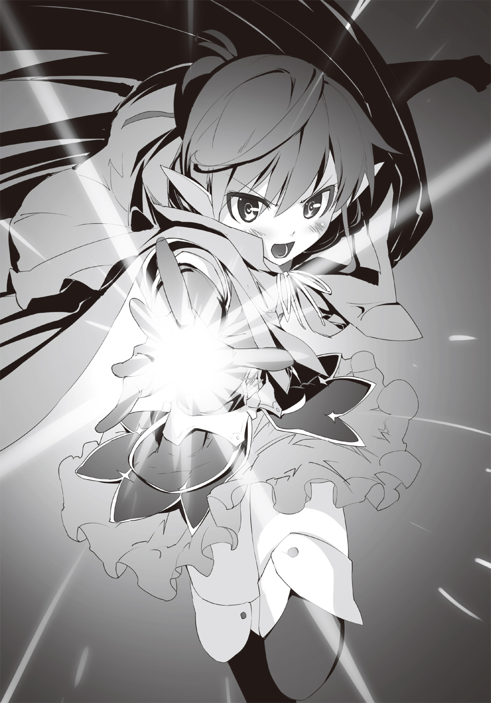
体勢を整えたオレに、アイリスが駆け寄ってくる。
「あ、ああ。なんとかな。しかし、アイリス、今のはもしかして......？」
問いかけると、彼女は頷いた。
「ああ。――私が使った【輝術】だ」
やっぱり、そうか。どうりで見覚えがあると思った。
輝術。それは、神族だけが使える技だ。
かつて魔法が世界に蔓延し、誰もがそれを手にし、醜い争いを始めた中。
後に神族と呼ばれる種族だけは汚らわしいものであると拒否し、決して使おうとはしなかった。
そのことによりアラムヴェルトは彼ら一族を己が尤も愛する者達であるとして、自らの力の一部を分け与えたそうだ。
神族はそのことを誇りに思い、今も魔法ではなく、輝術のみを自分達の戦う力として使っている。
「私は半神族だから、魔法も使うが......母親から教えを受けていて、幼い頃から輝術も扱うことができた」
「助かったよ。おかげであいつを殺さずに済んだ」
そう言ったオレにアイリスは愛らしい微笑みを返してくる。
「うむ。輝術は魔獣に憑いた魔力を取り払うことができるからな」
輝術は普通の魔法と違って物理衝撃という点ではまるで何の力も持たないが、ある一つの効果に特化していた。
それは、魔力を分解し、消滅させてしまうということだ。
いわば反魔法攻撃ともいうべきその力は、アラムヴェルトによる洗礼を受けた証でもあった。
それを利用すれば、さっきみたいに、魔獣の内部にある魔力だけを消して正気に戻すこともできる。
尤も、あまりに相手が強過ぎる場合、それも通じないことはあるらしいが。
「いかに魔獣とはいえど、元はただの生き物だ。そう易々と倒すことはできない。たとえ相手が恐ろしい獣だとしても、その命を救おうとするリョウマの優しい心を助けることができて、私も嬉しいぞ」
「いや、まあ、そんな大したことじゃないんだけど......」
夢見が悪そうだってだけだったし、な。うん。
「......でも、ありがとうな」
礼を述べると、アイリスは嬉しそうに頷いた。
「お、おい、お前......」
そこで、周りに集まってきた兵士の中の一人が尋ねてくる。
「さっきのすごい魔法......それに、そこの娘がさっきからお前のことを『リョウマ』と呼んでいたが」
慎重に、信じられないというようにして。
「もしかしてお前――いや、あなたは......『クロセリョウマ』様では？」
周囲にいる者達が、一斉にざわついた。
「そんな馬鹿な。クロセ様がこのようなところにいるはずがない。あの方はグレディスを打ち倒したあと、自分の世界に帰られたはずだ」
「ああ......いや、そうだ。リョウマ様だ。俺は一度、全てを終えてティタニアへ凱旋された時に、拝顔したことがある。なんで気づかなかったんだ！」
兵士達は互いに会話を交わしながら、次第に動揺が広がっていく。
「ほ、本当か......？ それならおれは、なんてことを......」
オレとアイリスから金を徴収しようとした兵士は震え始めた。
異世界から召喚され、皇帝を倒したオレのことは、世界的に知られていることだ。
故にこういった反応になっているのだろうが――ここまで効果があるとは。
「先ほどは窮地をお助けくださり、ありがとうございます！ そ、それに、無礼を仕出かしまして、大変に申し訳ありませんでした！」
すぐさま、兵士全員がオレに向かって頭を下げてきた。
「いや、別にいいですけど......ってか、謝るなら別の人がいますよね」
アイリスのことを暗に示すと、彼らは彼女に対して再び首を垂れる。
「......よい。もう過ぎたことだ。だが今後、このようなことは控えるように」
『はい！ 承知しました！』
兵士達は揃って敬礼した。
『ふん、わかりゃいーんだよ、わかりゃ。ただ反省が足りねーな。ここで全員、丸裸になって「ぼく達は塵同然の生き物です」って唱和しろよ』
「お前は余計なことを言うんじゃない」
鎧を軽くこづくと、マンゲツは不満そうに舌打ちする。
「......しかし、クロセ様、どうしてまたこの世界に？」
兵士の一人が不思議そうに尋ねてきた。
「ああ、いや――まあ、ちょっと事情がありまして。ティタニアの王都まで行きたいんですが」
「そうですか。わかりました。どうぞお通りください！ なんでしたら、国境を越えた先にある竜車もお貸ししますので！」
彼の言葉を皮切りにして、先ほどとは打って変わった、丁寧過ぎる言動で兵士達はオレ達を先導する。
「ありがとうございます。それじゃ、よろしくお願いします」
折角だから言葉に甘えることにして、オレはアイリスと共に兵士達を追った。
「......まあ、結果的に何とかなったからよかったけど」
一時はどうなることかと思ったぞ。
「アイリス、頼むから、今度暴走しそうな時は事前に教えてくれ」
心から願うようにそう言ったが、当の本人はきょとんとするばかりだった。
「暴走？ 私が？ 正当なことを口にしただけだぞ」
「それが時に危ないことを引き起こすこともあるんだよ。今のアイリスは帝国を救うって目的があるんだろ？ それを途中で中断する羽目になるような、軽はずみな行動は止めた方がいいと思う」
「......むう。そうか。そうだな」
ようやく自分の迂闊さに思い至ったのか、アイリスは頰を搔く。
「すまない。つい、ガルフレアのことになるとな......」
「まあ、それだけアイリスが帝国を大事に思っているってことだから、オレも責めてるわけじゃないんだけどな。庇える範囲ならオレが庇うし」
苦笑すると、彼女は何かを決めたように顎を引いた。
「ふむ。それでもリョウマに迷惑をかけるわけにはいかない。以後は気をつけることにしよう」
「そうしてくれると、助かる」
あの調子でずっとやられたら、さすがに身が持たなくなってくるかもしれない。
『いいんだよ、お嬢、この馬鹿くらい竜車竜のようにこき使ってやれよ』
マンゲツはそう言って笑った。
「お前、本当に余計なことしか口にしないな......」
扱い難いことこの上ない。これからこいつと上手くやっていけるのだろうかと、オレは深いため息をついた。
三年ぶりに訪れたティタニアの王都は、昔と変わらぬ賑わいを見せていた。
覚えのある景色が次々視界に飛び込んできて、オレは不思議な気持ちに包まれる。
たとえるなら、久方に田舎へ帰省した時のような感慨だ。
「おお。何か面白いものがあるぞ。リョウマ、あれは乾物屋と果物屋で合っているか」
アイリスが竜車の窓から外を覗き、オレに訊いてくる。
またか、と少し笑いながらオレは応える。
「ああ、そうだよ。本当、アイリスは見るもの全部が新鮮なんだな」
すると、彼女は目を輝かせながら言った。
「うむ。以前にここを訪れた時は、道中と同様、私だとバレて無用な混乱が起こらぬように竜車の窓を塞がれて外を見ることが叶わなかったからな。帝都とはまた違っていて、見ていると楽しい」
......なるほど。本当、色々と苦労してるよな、アイリスも。
「あれはなんだ。白い板のようなものが棒に刺さっていて、皆が食べているぞ」
「ミルクキャンディーだよ。牛乳を材料にしたお菓子だな」
「美味しいのか？ どんな味だ？」
「美味しいよ。甘い、かな」
「そうか......そうなのか......甘いのか......」
釘づけになっているアイリスは、全身から『あれ食べたいんですけど！』オーラを放出していた。
やっぱり、食欲旺盛なところがあるらしい。
「......あとで買って食べるか？」
「な、なに、いいのか!?」
がばっとこちらを振り向くアイリス。が、彼女はすぐに我を取り戻したような顔になって、咳払いした。
「......いや、やめておこう。私はこの国に遊びに来ているわけではない」
「じゃあ、オレだけ食べるわ」
「な、な、なんだと!? リョウマ、お前は帝国の皇帝となるのだぞ!?」
「うん。でも食べるわ」
「そ、そんなことが許されると思っているのか！」
「思ってるから食べるわ」
オレが深々と頷くと、アイリスは信じられないという表情をしたあとで、ふるふると生まれたての小鹿みたいに震えた。
そしてオレを指差し、
「ず――ずるいぞ、リョウマ！ お前はずるい！」
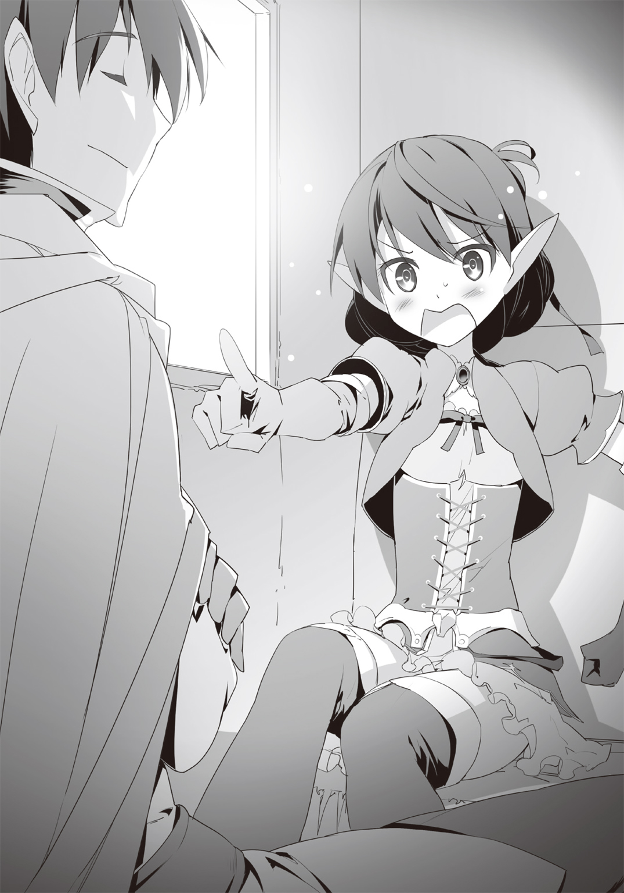
意味不明の叱責をしてくる。
「そうだよ。オレはずるいよ。だから食べるんだよ」
笑うと、アイリスは最大に頰を膨らませたあとで、こちらから顔を背けた。
「なら勝手にするがいい！ べ、別に私は羨ましくなどないからな！」
腕を組み、「全くリョウマは、なんという男だ......」とぶつぶつ呟き始める。
......あとでアイリスの分も買って、こっそり鞄に忍ばせておこう。
オレはそう思いつつ、口笛を吹いた。
そうこうしているうち、オレ達を乗せた竜車は大通りを走り、やがては街の深奥にある巨大な建物へと近づいていく。王都を睥睨するような位置に聳えるそれは、もちろん、言うまでもなく王様の住む城だ。
帝都の宮殿が西洋風だとすれば、こちらは北欧風といったところか。石造りの頑丈な風貌が、無条件に威圧感を与えてくる。
城門の前で竜車が停止し、御者台に座っていた兵士が降りた。
「何者だ」
警備をしていた者達のうち、一人が問いかけてくるのに、兵士は姿勢を正す。
「はっ！ 国境付近にてクロセリョウマ様とお会いし、ご本人の希望によりお連れした次第であります！」
「クロセ様だと......？」
警備兵の男は怪訝な顔をしたあとで、同僚達と視線を交わし、首を捻った。
「なにを言っているのかさっぱりわからん。クロセ様がこの世界におられるわけがないだろう」
「自分もそう思ったのでありますが......」
ここはオレが出た方がよさそうだ。アイリスを連れて竜車から降り立つと、警備兵達に声をかける。
「どうも、お久しぶりです」
警備兵達がこちらの方を見て――その瞬間、目を思いきり見開いた。
「ク、ク、クロセ様!?」「な、なぜあなた様がここに!?」「本物か!?」
まあ、そりゃ、そういう反応にもなるよな。
何しろオレ自身、予想だにしていないことだったんだし。
「ちょっとした事情がありまして。......よかったら、国王様にお会いしたいんですが」
「そ、そうですか......いや、驚きました。ですが、その、私どもの独断でお通ししていいのかが......」
警備兵の一人、赤髪の男が困ったような顔をした。
「おい、誰か。ロザリ殿を連れてきてはどうだ。まだ城内におられるはずだ」
鼻の頭に傷のある別の警備兵がそう言うと、数人が頷いて叫んだ。
「か、開門！」
鈍い音を立てて、城門の扉がゆっくりと内部に向かって開いていく。
「少々お待ちください！ 今呼んで参りますので！」
赤髪がそう言い残し、その場から急いで去っていった。
「......リョウマ、ロザリとは誰だ？」
「ティタニアの騎士団長だよ。修行のために世界中を巡って色んな奴と戦ったあと、傭兵としてこの国に来たんだけど、そのあまりの強さに王様から特別に抜擢されたんだと」
ティタニアにおいて、騎士、即ちお城勤めの兵士は国土防衛の重要な役目を持つことから、貴族と呼ばれる身分の高い人間にしかなることができない。
つまり、一介の傭兵が団長になることなどまずありえないことなのだ。
ロザリの力が如何に常識外れであるかということである。
「異世界に来たばかりのオレに剣の技術を叩き込んでくれた師匠でもある」
「ほう、リョウマのか......それは凄まじい存在なのだろうな」
『いや、逆に大したことなさそーだと思うぜ』
「お前はちょっと静かにしてろ。話がややこしくなる」
鎧を叩いて注意したが、マンゲツは『うるせー、ばか！』とまるで言うことを聞かなかった。
「マンゲツ、これから私達は大切な話し合いをしなければならない。悪いが、ほんの少しばかり大人しくしてもらえると助かるのだが」
『任せてくれ！ これから一言だって喋りゃしねえぜ！』
本当に調子いいな、こいつは......。アイリスの父親の形見でなければ、とっくにその辺へ投げ捨てているところだ。
オレはげんなりとしてため息をついた。
と、そこへ、先ほどの赤髪の警備兵が誰かを伴って戻ってくる。
「お待たせしました！ ロザリ殿を呼んで参りました！」
息を切らしながら報告してくる彼の後ろには、見覚えのある人物が立っていた。
間違いない。ロザリ――ロザリ＝ラヴェンダだ。
長い藍色の髪を後ろで縛った、非常に大柄な女性。猛禽類を思わせる鋭い目と、真一文字に引き結んだ唇が、その厳格な性格を表しているように思えた。
胸、それに両の肘と膝を板金製の鎧で覆っており、その背には鞘に包まれた、自身の身の丈ほどもあるような巨大な剣を負っている。
でも、彼女の外見を表現する上で外せないところは、もっと別にある。
それは髪の間から生えた、狼を思わせるような耳。
加えて、腰の辺りから伸びる、ふさふさの尻尾だった。
戦族――という、アラムヴェルトにおける種族の一つで、彼らは皆、体の一部に獣を思わせるような部位を持っている。
これは戦族の先祖が元々獣であったことに起因するらしいが、あくまでも説の一つであり、確かな文献は残っていないらしい。
「......驚いた。本当にリョウマか」
ぼそりと呟いたその声に、オレは手を上げた。
「久しぶり、ロザリ。元気だったか？」
ロザリは十八歳、つまりオレより年上なのだが、彼女はあまり敬語を使われるのが好きではないらしく、こうしてタメ口で通すことにしている。
「まあまあだ」
否定とも肯定ともつかない言葉が返ってきた。顔も無表情で、内心がいまいち読み取れない。
ただ、これはいつものことだった。
ロザリはあまり感情を表に出さない性格で、口数もかなり少ない。
でもその凜とした顔は、アイリスに負けないくらいに綺麗なので、ティタニアに彼女のファンは多かった。しかも男女問わずに。
「何をしにアラムヴェルトへ来た」
「いやオレが自分で来れるわけないだろ。呼ばれたんだよ」
「......ガーネットにか？」
ロザリの問いに、オレは首を振る。
「違う。彼女にだ」
一歩横に避けてから、アイリスを紹介した。
「何者だ」
短く訊いたロザリに向かって、アイリスは顔を上げる。
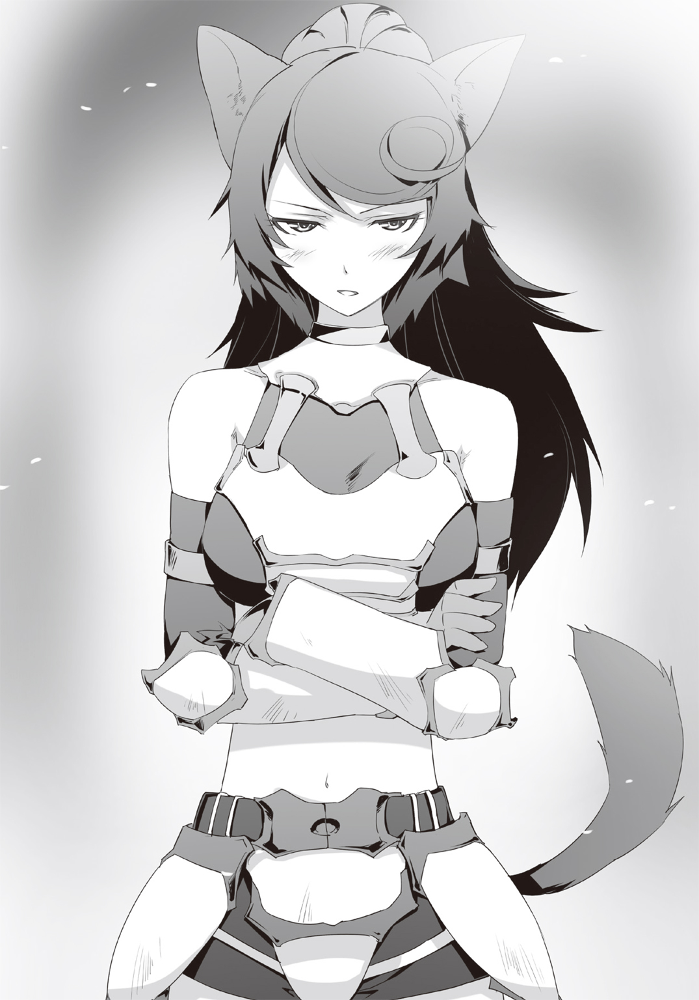
「申し訳ないが、ここで名乗るわけにはいかない。国王に取り次いでもらえると助かる」
下手にグレディスの娘だなんて言ったら、門前払いを喰らう可能性もあるしな。
「......リョウマの関係者か」
じろり、と睨むような目でこちらを見てくるロザリ。ただこれは、別に怒っているとか、不審がっているわけじゃない。彼女は顔がちょっと恐い上に、元々こういう風にぶっきらぼうな対応しかできないのだ。
「そういうことだ。オレからも頼むよ」
「そうか。わかった。いいだろう」
あっさりと受け入れたロザリに、アイリスの方が驚きを見せた。
「よ、よいのか？ 私が何者であるかわからないというのに......」
何か質問でもあると構えていたのだろう。でもロザリはそんな面倒な真似はしない。
「リョウマは仲間だ。そして弟子でもある。そいつが連れてきたのなら問題はない。信用しよう」
ぶつ切りに言ってから、彼女は踵を返した。
「ついてこい」
そのまま大股で歩き始める。揺れる尻尾が、彼女の雰囲気とは正反対に可愛らしく揺れていた。
「......本当に大丈夫なのか？」
心配そうに言ってくるアイリス。無理もないが。
「問題ないよ。ロザリはいい奴だ。行こう。――これが、帝国復興の第一歩だ」
元気づけるために、オレは、彼女の肩を叩いた。
ロザリがオレ達を連れていったのは、王城内にある謁見の間だった。
滑らかな石材が敷き詰められた広い部屋は、帝都にあるそれと構造的に似通っている。
違っているのは、敷かれている絨毯が赤いところと、玉座の後ろにある旗――ティタニアを象徴する太陽と獅子の紋章が縫われたそれ――が、垂れ下がっていること。
あとは、圧倒的に人が多いことだった。
玉座の左右には全身鎧に身を固めた騎士達が控え、部屋の壁にはずらりと武装した兵士達が並んでいる。
彼らはオレが室内に入ると同時に、にわかにざわめき、隣の人と言葉を交わし合った。
「おい......あれ」「ああ、クロセ様だ」「どうしてクロセ様がここに......？」「まさか帝国に何かあったんじゃ......」
それらを戒めたのは、強い音である。
「静まれ！」
一人の男が、手にもった杖を石畳に叩きつけたのだ。
厚手のローブを身に纏う、腰の曲がった神経質そうな老人だった。
「......ロザリ殿。一体これはどういうことだ。なぜクロセ様がそこにいる？」
静寂が戻ったのを確認した後、彼はそう尋ねてくる。
「モーヴェ。国伯っていう身分にある、王様の側近だ。他にもいるけど、あの人が一番信頼されているから、こういう場に出てくることが多い」
オレはアイリスに耳打ちした。
「こちらに訊かれても困る。私はリョウマが来たから案内した。それだけだ」
ロザリは答えると、用は済んだとばかりにオレ達から一歩引いた場所に下がる。
「あの――こちらから説明します。オレはまた、この世界に召喚されたんです」
言いながら、オレは前に出た。
「......なんですと。一体誰が、なんの目的で？」
「それは、ですね。ええと、国王様と会ってから話そうかと......」
「ふうむ。アルバート様に。しかし、今日の謁見は既に終了していまして。いくらクロセ様とはいえど、いきなりそう申されても――」
と、モーヴェが渋い顔をして口にしようとした断りの言葉を遮るようにして。
「国王様の、おな――り――ッ！」
突如として兵士の巨大な声が響き渡り、次いで、背後から激しい音が鳴った。
「リョウマ様ッ！」
呼びかけられ、振り返ったオレは――荒い足音と共に駆け寄ってくる人物を見る。
蜂蜜色の長い髪を腰まで垂らした女の子だ。
その顔つきは非常に可愛らしく、アイリスの美しさを女優だとすれば、彼女のそれはアイドルを思わせる親しみやすさを持っていた。
「ガ、ガーネット!?」
意外な人物の登場に、オレは声を上擦らせた。
薄桃色のドレスを身に纏い、長いスカートをたくしあげながら、その女の子――ガーネットは満面の笑顔を見せる。
「リョウマ様ッ！ リョウマ様ッ！ リョウマ様ッ！ リョウマ様――ッ！」
そして、勢いよく床を蹴ると、こちらに飛び込んできた。
「うわっ!?」
反射的に抱き止めると、オレの首に手を回し、その顔を寄せてくる。
「リョウマ様！ 一体、どうなされたのですか!? なぜアラムヴェルトへ来られたのですか!? リョウマ様ー！」
声に明らかな嬉しさを含ませて、ガーネットは問いかけてきた。
「い、いや、それがさ......」
答えようとしたが、答えられない。当たり前だ。これだけハイレベルな女の子が、心臓の音が伝わってきそうなくらい近くにいるのだ。っていうか胸が。ガーネットの平均以上に大きな胸が思いっきり当たってる！
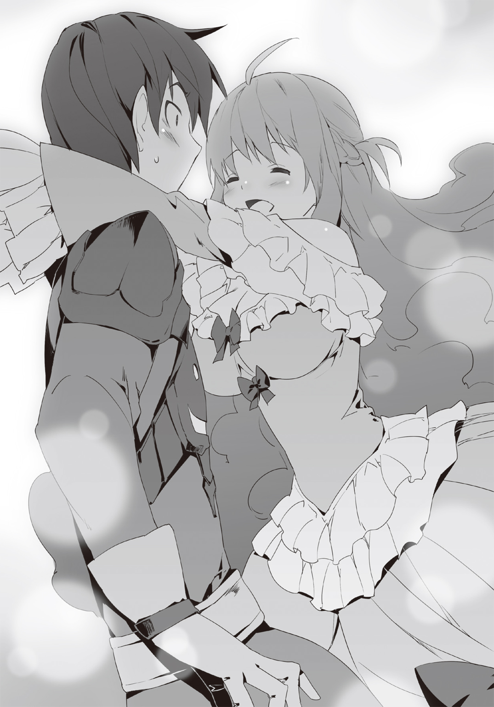
「姫様！ なんというはしたない！ お控えくださいませ！」
モーヴェが叱咤するような声を上げた。
そう。彼女の名はガーネット＝フルメ＝ヴェレイ＝ソレイユ。
正真正銘、このティタニア国の第一王女、つまりはお姫様だ。
「黙りなさい、モーヴェ。三年ぶりにリョウマ様にお会いできたのですよ！ 多少のはしたなさが、何ですか！」
負けじと言い返しながら、ガーネットは笑みを零した。
「ああ、この日をどれほど待ち侘びたことでしょう。リョウマ様......！ ガーネットはこの三年間、片時もあなた様のことを忘れはしませんでした！」
「あ、ああ、俺もだよ」
そういえば当時も彼女はある時から、こんな風にオレに積極的な態度をとってきていた。
その度に困惑したものだが、その辺りは全く変わっていないということか。
「嬉しいです！ リョウマ様！」
「ただ、あの、ごめん。さすがに照れるから、そろそろ......」
やんわりと離れるように伝えると、ガーネットは「そうですか......？」と残念そうに言ってから、オレを解放してくれた。
「彼女がティタニアの王女か......」
何やら虚を衝かれたような表情をするアイリス。まあ、気持ちはわかる。
「わたくしの部屋から、城門にやってくるリョウマ様のお姿をお見かけして、もしやと思い駆けつけてきたのです。まさか、本当にいらっしゃったなんて......」
手を組み合わせ、ガーネットはうっとりとしているような顔を作った。
「それもこれも、アラムヴェルト神のお導きですね！」
「......だといいんだけどな」
少々厄介な問題を頼もうとしている身としては、素直にうんとは返せないところがある。
「ところで、何故、リョウマ様がティタニアへ？ 確か元の世界に御帰還なされたはずでは......」
「ああ、いや、それなんだけど。っていうか、その前に、さっき国王様って言われてなかったか？ ガーネットが王様ってどういうことだ？」
オレの疑問に、ガーネットは「ああ、そのことですか......」と、そこで声を沈ませた。
「実はお父様が、流行り病にかかってしまわれて。わたくしが代わりに政務を担っているのです」
「え、そうなのか？ 大丈夫なのか？」
「はい。幸い、病に対して効果的な治癒魔導言語の組み合わせが見つかりまして。しばらく回復に時間は必要としますが、命に別状はないそうです」
それは何よりだ。オレ自身、親交のあった人物であるだけに他人事とは思えなかった。
「ですがベッドから起き上がれぬ身であることから、わたくしが代理を任命されました」
「そういうことだったのか......」
ティタニアの王様には、奥さんがいない。母親がいないのはガーネットもアイリスも同じだが、その理由は違っていて、オレが来る前に事故で亡くなってしまったのだ。
だから王様が倒れたとなると、代わりができるのはその子どもだということになる。
「あれ、でも、ガーネットには確か兄さんがいたよな？」
「はい。ですが父上は、わたくしに代理を任せる、とそう仰りました。わたくしも、てっきりお兄様が代理であるとばかり思っていましたが......」
ふむ。ガーネットの言う通り、順当にいけば長男が指名されるはずだ。
「ガーネットは優秀だ。政治のこともよくわかる。そこを認められたのだろう」
ロザリが端的に言った。なるほど。
「......そういや、三年前から色々、将来のために勉強とかしてたよな。それで、もう王様の代わりを務めてるのか。オレと同じ歳なのに、すごいよ」
オレも本を読むのは好きだけど、そこで得た知識を学校の授業とか、テストとか、必要なところに活かせた試しがない。
尤も、三年前、アラムヴェルトを旅していた時にはそれらが役に立ったこともあったのだが。
「そんなこと......リョウマ様に褒められては、照れてしまいます」
頰を桃色に染めて、ガーネットはもじもじと体を左右に揺らした。
「確かティタニアって、国民主体の政治をしてたよな。今もそうなのか？」
「はい。税金はできるだけ安く、その代わりに王族の贅を排して、できる限りこの国の人達が住みやすい環境を整えるように努力しています。わたくしも当然、そうしておりますよ」
素晴らしい考えだと思う。口で言うのは簡単だが、中々貫き通せるものじゃない。
ティタニアが四大聖国の一つとして数えられるほどに成長を遂げたのも、ひとえにそういった誠実さが影響して、世界中から人が集まってきたからかもしれない。
庶民から金を搾り取るだけ搾り取って、ちっとも還元しようとしないどこかの国の政治家に聞かせてやりたいくらいだ。
「そのせいで国の財政が逼迫しており、各国伯達が対処に追われているわけですが」
盛り上がっていたところで、水を差したのは、モーヴェだ。
「ともかく。......話を戻してよろしいですかな、クロセ様」
険のこもった声に、振り返って、オレは頭を搔く。
「あ、ああ、すみません。ガーネットが来たもので、つい」
「まあ、お気持ちはわかりますが。して、一体どなたがあなたをこの世界に召喚なされたのですか？」
モーヴェから投げかけられた問いかけに、オレの左隣に立ったガーネットが首を傾げる。
「どなたって......うちの者が召喚したのではないのですか？ 三年前――わたくしが、【異世界召喚】を使った時のように」
......そう。
ティタニアはオレが初めて呼ばれた国だ。
そして、オレを召喚するための魔法を発動したのが、ガーネットに他ならなかった。
彼女は、王女様であると同時に、世界でも屈指の魔導師なのだ。
オレにとっての武術の師匠がロザリであるならば、魔法の先生はガーネットである。
「何を仰いますか。三年前はあくまでも必要にかられて行ったこと。姫様も当然知っておりましょう」
渋い顔で、モーヴェが告げてきた。
「異世界召喚とは――本来、【禁呪】と呼ばれるもの。世界的に扱いを固く禁じられた魔法なのです」
その言葉に、ガーネットは眉をひそめる。
「確かにそれはそうですが......何かよんどころない事情があったのかと」
次いでオレの方を見て、
「では、どなたが禁呪によってリョウマ様をアラムヴェルトに？」
誰ともなく、そう尋ねた。
......さて。本番はここからだ。オレは空唾を呑み込んだ。
この世界――アラムヴェルトには、魔導言語の組み合わせによって、それこそ星の数ほどの魔法が存在する。
だがモーヴェが言ったように『封印された魔法』を示す【禁呪】の名を与えられたものはたった二つしかない。
その内の一つが、三年前、ガーネットが使った【異世界召喚】だ。
理由は、別の世界からアラムヴェルトにやってきた者には、強大な魔力が宿るからだ。
この世界において、魔力が強いとは即ち、大気中に漂うエネルギーを体内に取り込む許容量が大きいということになる。
魔法とは威力が強ければ強いほどにそれに見合った魔力の量を必要とし、足りなければ当然、使うことができない。
要するにコップが大きければ大きいほどたくさん水を汲めるように、魔力が強ければ強いほどにどんどん溜め込むことが可能で、それは転じて色んな魔法を使えることにも繫がるということだ。
そして異世界召喚された者は、魔力を吸収する器とでもいうべきものが、途方もなく巨大なのである。
そのデタラメさはオレ自身も体感していることだが、幻と呼ばれて使える者のいなかった強力な魔法でさえ、子どもの手遊びみたいな感覚で操れてしまうほどである。
これはどう考えても世界のバランスを乱すことだ。
もし色んな国が戦争のためにほいほい異世界からオレみたいな奴を呼び出し続けたら、アラムヴェルトはあっという間に滅び去ってしまう。
よって昔から異世界召喚の魔法を使用することは固く禁じられていた。
もし使えば世界的に非難の的となり、全ての国が敵となってしまうだろう。
でも、ティタニアは召喚を実行してしまった。
いや――そうせざるを得なかったのだ。
それには、どうしようもない理由があった。
「ガーネット。紹介したい人がいる。オレをこの世界に呼んだのは彼女なんだ」
オレは隣に佇むアイリスに、自分の前へ出るよう指示をする。
彼女は従ったあと、オレに視線を送ってきた。
オレが頷くと、人目を避けるように頭からフードをすっぽりと被っていたアイリスは、それをそっと取り払う。
「アイリス＝ナクナ＝フェルモント。――グレディス皇帝の、一人娘だ」
小波のように、周囲でどよめきが起こった。
ガーネットは表情を強張らせ、その場で硬直している。
「......ど、どうして、皇帝の娘がここに？」
しばらくしてからやっと、彼女は、掠れた声でそう言った。
「そのことについて、聞いてほしいことがある。ただ、できればガーネットとアイリスとオレ、三人で話したいんだ。......頼めるか？」
「なぜ姫様のみにする必要があるのですかな？ なにもやましいことがないなら、ここで話せばいいように思えますが」
思いきり怪しむようにモーヴェが眉をひそめた。無理もない。
だが、オレが説得を試みるより早く、ガーネットが言った。
「......よいでしょう。では場所を移し、三人で話し合いの場を設けましょう」
「姫様！ なりませんぞ！ 相手側が何を考えているかわかりません！」
モーヴェが注意するが、
「口を慎みなさい、モーヴェ」
短く、だが、重さに満ち満ちた口調でガーネットがそれを諫めた。
「目の前におわすお方をどなたと心得ます。なぜ憎き皇帝の娘と共にいるのかはわかりませんが......リョウマ様のなさることです。決してこちらを害するようなことはないでしょう」
「しかしですな、姫様......！」
「わたくしは、口を慎めと言ったはずです」
有無を言わせぬ口調だった。ガーネットの言葉にモーヴェは圧倒されるように黙り込む。
「......出過ぎた真似を致しました。ご随意のままに」
しばらくして、彼はようやくそう言うと、不満げな顔のまま頭を下げた。
普段は天真爛漫に見えるガーネットだが、いざという時には大の男でさえ怯ませる迫力と意志の強さを見せる時がある。
そこのところは、三年前と変わってないな。
「折角ですので、お茶の席を用意致しましょう。ですがリョウマ様、その前に少しお話ししたいことがあります。わたくしと二人で別室まで同行願えますか？」
「ん、それは構わないけど」
特に躊躇する必要もなかったので了承すると、
「ありがとうございます。ではフェルモント皇女はわたくしがお呼びするまで、別室にて待機をお願い致します」
微笑みを浮かべながら、ガーネットは静かに立ち上がった。
ガーネットに連れられてやってきたのは、彼女の私室だった。
その内装は三年前と変わらず、豪奢だが派手過ぎない。また設置されている家具も生活に必要最低限なものだけに絞られ、無駄なものは何一つなかった。
だがその中において一つだけ、テーブルに置かれた可愛らしい小さなペンギンのぬいぐるみが目につく。
それは、オレがこちらの世界に来る際、持ってきたものだ。
正確に言えば召喚される直前、たまたまゲームセンターのクレーンゲームで手に入れたものを、ポケットに仕舞っていたのである。
「これ、まだ持ってくれてたんだな」
懐かしく思いながらぬいぐるみを手に取ると、扉が閉まる音と共に、背後からガーネットの声が返ってきた。
「当然です。リョウマ様がお別れの際にくださったものですから。どんな国宝よりも価値があるものです」
「そんな大袈裟なものじゃないけどさ」
単に、この世界からいなくなる前、少しでもガーネットに自分のことを覚えておいてほしかっただけのことだったのだ。
「それにしても......本当、久しぶりだよな――」
そう言って、振り返ったその時。
オレは、温かな感触に包まれた。
ガーネットが自分のことを抱きしめているのだということに気づくまで、少し時間がかかってしまう。
「......ガーネット？」
「本当に......お久しゅうございます。まさか......まさか本当にリョウマ様とまた会えるなんて」
オレの胸に顔を埋めながら、ガーネットは嚙み締めるように言った。
「どれほどこの時を待ち侘びたことでしょう。リョウマ様は別世界の人間。思い煩っても仕方ない。だから忘れよう。そう何度も自分に言い聞かせました。けれど......どうしてもできませんでした」
その声に、少しずつ、嗚咽が混じっていく。
「朝目が覚めた時......政務の途中、ふと外を眺めた時......お茶会の時......夜眠る時......様々な場面で、ふとリョウマ様のことを思い出してしまうのです。もう一度お会いしたい。会ってお話がしたい。その想いが、いつまで経っても消えてくれませんでした」
ガーネットは、脇目も振らず、泣き続けていた。先ほどまで、一国の王女として毅然とした態度を取っていた女の子とは同一人物には思えない。
だけどそれが、彼女の耐えてきた辛さを何よりもオレに伝えた。
「......ごめんな。ガーネット」
だからオレは謝りながら、ガーネットの艶やかな髪を、ゆっくりと撫でる。
オレ自身の決断で彼女を苦しめてしまったことが、こんなことで償えるとは思えなかったが。
それでも、やっぱり、そう言うしかなかった。
「いいえ。リョウマ様は何も悪くありません。ただ......ただ、わたくしは嬉しくて......」
目元を拭いながら、ガーネットはこちらを見上げてきた。
潤んだ瞳にオレの姿を映しながら、彼女は続ける。
「これは、夢ではないのですね。リョウマ様は、わたくしの目の前にいるのですね......？」
「......ああ。夢じゃない。オレはもう一度、この世界に来た」
オレが答えると、ガーネットは何度も頷いた。そうすることで、今目の前で起こっていることが幻想でないことを、強く確信できるというように。
「リョウマ様......なぜ皇帝の娘と共にいるのかも気にはなりますが、それはあとでお話ししていただきたく存じます。その前に......一つだけ、よろしいでしょうか」
次いで、ガーネットはそう口にした。
彼女の頰が仄かに赤く染まり、声が囁くようにか細いものとなる。
「あの時のお返事を――聞かせてはいただけませんか？」
自分の心臓が、大きく高鳴るのを感じた。
あの時の返事ってなんだっけ、なんてとぼけるほど、オレも野暮じゃない。
わかっている。三年前、別れる時にガーネットが訊いてきたことだ。
――リョウマ様は、わたくしのことを、どう思っておりますか？
あの時は有耶無耶にしてしまったが、この場でまた同じことをするわけにもいかないだろう。
機会があれば今度こそはっきりと告げると、オレは決めたのだから。
だから――。
「そ、そうだな......その......」
言わなければいけない。そう自分を急かした。早く。早くしろ。男だろ。
だがオレの中にいるもう一人の自分がそれを制した。待てよ。心の準備ってものが必要だ。そんなにパッと想いを告げられるほどオレは器用じゃない。
躊躇している場合かよ、とオレが叱咤する。ガーネットは三年も待ったんだ。情けないとは思わないのか。
わかってるさ、と違うオレが言い訳をした。だけどいざ現実が目の前に迫るとそう上手くいくもんじゃない。元の世界じゃ、女の子に告白すらされたことがなかったんだぞ、と。
オレとオレが激しい論争を繰り返し、いつまで経っても決着がつかない。
どうする。どうする。どうする！
「リョウマ様......」
不意に、ガーネットが待ち切れなくなったというように、オレに寄りかかってきた。
「っと――？」
その反動でふらつき、オレは、後ろへと倒れてしまう。
そこには丁度よくベッドがあったため、二人とも怪我はしなかったが――。
「......うっ」
オレは、ガーネットに圧し掛かられるような体勢になった。
オレの体に彼女の豊満な胸がぴったりとくっつくと、それは重みによって形が変化し、ドレスから覗く谷間を押し上げ、視界を占領する。
「あ――も、申し訳ありません」
恥ずかしそうに少し離れ、ガーネットはその部分を手で覆った。
しかし、彼女はそれ以上動かず、こちらを半ば押さえつけるような形のまま留まっていた。
それはまるで、はっきりさせるまではこちらを放さないという、彼女の強い意志を表しているようだ。
「い、いや......ええと......」
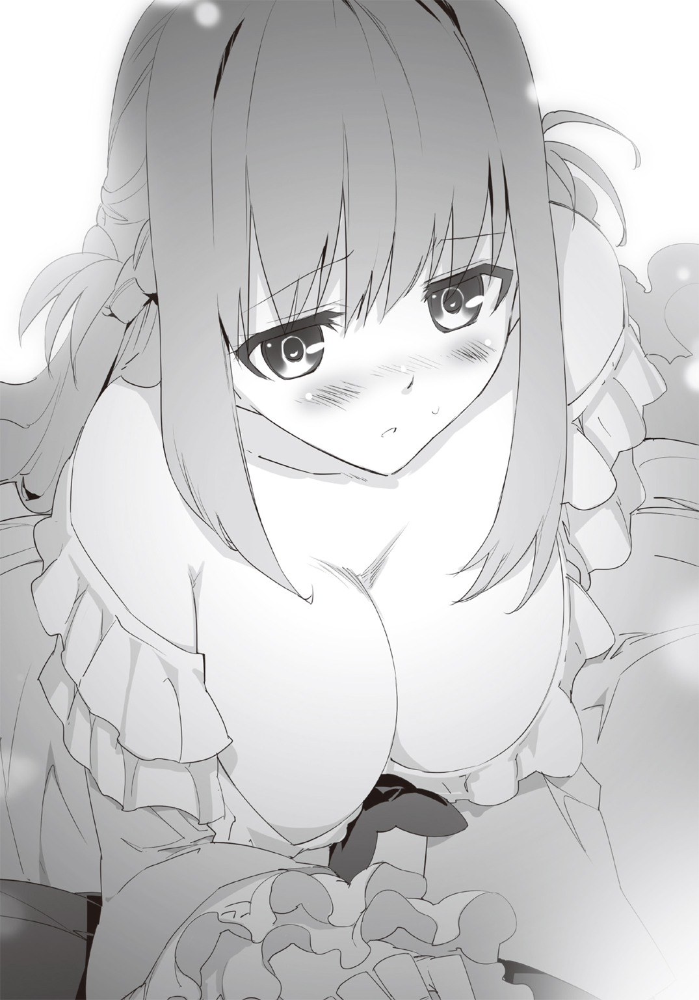
ドキドキとバカみたいに高鳴る心臓を静めたいと思うのに、全く言うことを聞いてくれなかった。
頭の中がぐちゃぐちゃで、上手く言葉が見つからない。
行くんだ、というオレと。やめておけ、というオレ。
その二人が同時に迫ってきた。
オレは散々迷って、悩んで、緊張に唾を飲み込んで。
ようやく――決断する。
「ガ、ガーネット、その、オレは......」
ここでやらなきゃ、絶対に、後悔すると思ったからだ。
ガーネットの肩を摑み、彼女を押すようにして起き上がる。
「オレは、お前のことを......！」
そのまま、勢いに任せて告げようとしたのだが。
「............」
「......リョウマ様？」
急に黙り込んだオレを、ガーネットは不思議そうに見つめた。
オレは視線を下に向けたままで、固まる。
そこには、自分が身に着けた漆黒の鎧が存在していた。
「......しまった。こいつのことを忘れていた」
人格の宿りし魔法の鎧。通称、マンゲツ。
驚異的な防御力を誇り、ヤンキーみたいな性格の悪さを除けば役に立つのだが。
この場においては非常に邪魔な存在だった。
「ちょっとガーネット、ごめん」
断りを入れてからベッドを降りて、部屋の隅に移動し、鎧を外そうとした。
しかし、どうやっても体から離れてくれない。
「あれ......あれ？」
困惑していると小さな声で話しかけてくるものがあった。
『外さねーよ、バーカ』
こ、この野郎！
「お前な......今、大事なところなんだよ。大人しくしといてくれよ......！」
小声で話しかけると、マンゲツは、にやにやといやらしそうな笑みのような形に鎧の模様を変化させた。
『おーおー。愛しいあの子に告白するから邪魔しないで頂戴ってか？ そりゃまあ、しょうがねえよなあ。男の一大事だもんなあ。そりゃあ、おれがいるのは無粋ってもんだ』
「そ、そうだよ。だからだな――」
『だが生憎、おれは限りなく無粋なんだよ、ぶははははははははははは』
こいつ、絶対、ぶっ壊す！
「お前、いい加減にしろよ、この......くそ......この！」
意地でも外そうとするが、全く思い通りにはいかなかった。
思わぬところでこんな障害が発生するとは......なんでこうなる！
「あの、リョウマ様......？」
ガーネットが不審げな声で問いかけてきた。
そりゃ、いきなり端っこに行って何やら独り言を口にしながら鎧と格闘しだす奴がいたら、誰だって怪しく思う。
『いいじゃねえか、告白しちゃえよ。おれが見届けてやるよ。そんであとで街に戻った時、そのことを余すことなく住民皆に詳しく話してやるよ。うへへへへへ』
なんて清々しい鬼畜なんだこいつは。
「......リョウマ様、どうされたのですか？ その、お返事の方は......」
ガーネットが後ろからオレの服の裾を握り、遠慮がちに言ってきた。
うう。言いたい。言いたいけど、言えない。ああ、もう！
「――ごめん、ガーネット！」
仕方なく、オレは振り返って、深々と頭を下げた。
「もうちょっとだけ待ってくれ。必ず、いつか答えるから。頼む！」
失望されても仕方がない、最悪の台詞だ。
終わったかもしれない。オレは、そんな暗澹とした気持ちに暮れた。
だが、
「......そうですか。わかりました。どうかお顔を上げてください」
ガーネットはいつもと変わらぬ、優しい口調でオレにそう告げた。
おそるおそる、視線を上げていくと――彼女は、慈愛に満ちた微笑みを浮かべている。
「わたくしの方こそ、急かすような真似をして申し訳ありません。大切なことです。どうぞ、リョウマ様の御随意のままに」
「......ああ。ありがとう」
こちらの都合で勝手なことを言ったのに、それを許す彼女の心の広さに、オレはただ、ただ、忸怩たる思いを抱いた。
「それでは、あまりフェルモント皇女をお待たせするわけにはいきませんね。共に参りましょう、リョウマ様」
優雅な仕草で身を翻すと、ガーネットはオレを先導しながら歩いていく。
「......わたくしはいつまでもお待ちしております。その時にこそ、こちらの気持ちもお伝えさせていただきますから」
こちらに顔を向け、そう言って笑うガーネット。
「ああ。......わかった」
オレは返しながら、大きくため息をついた。
......近いうち、チャンスが巡ってくるといいけどなあ。
用事が済んだあと、合流したオレとアイリスは、城の一角にある大きなバルコニーに通された。
そこで香りのよい紅茶と様々なデザートが振る舞われ、その豪華さに状況を忘れて思わず喉を鳴らすと、対面に座ったガーネットがくすりと笑みを漏らす。
「どうぞご遠慮なく。リョウマ様のお口に合えばよいのですが」
お言葉に甘えて、本当に遠慮なくいかせていただく。
果実のタルトやスコーンなんかを、オレは口いっぱいに頰張った。うん、美味い。
「......相変わらず、甘いものがお好きなのですね。三年前もそうでした」
ガーネットがオレの方を見て懐かしそうに言った。
「そうだな。親父には男なんだからもっと牛丼とか餃子とかをがっつりいけって言われるけど、どうにもオレはケーキとかの方に惹かれるよ」
「リョウマ、ギュウドンやギョウザとはなんだ？」
隣で紅茶を飲んでいたアイリスが不思議そうに尋ねてくる。
「リョウマ様の世界にある食べ物ですよ。動物の肉を甘辛く煮て穀物の上に載せたものと、小麦粉をこねて作った皮で野菜やひき肉を混ぜたものを包み込み、焼いたり、煮たり、揚げたりしたもの。そうですよね？」
「ああ、そうだな。よく覚えてたな」
三年前、ガーネットに説明したのは確か、一度か二度だったと思うけど。
「リョウマ様のことなら何でも記憶していますよ。何せ三年前、長い時間をずっと共に旅してきたのですから」
嬉しそうに言って、ガーネットは続けた。
「お食事の好みから、ご趣味、歩く時の癖、剣の振り方、元いた世界でよく遊んでいた『げぇむ』のことやそれに......ど、どのような女性を好まれるのかも」
「......え。オレ、そんなこと言ったっけ？」
さすがにガーネットに対して、そこまで明け透けに話したことはないような......。
「リョウマ様のことを見ていればわかります！ だってリョウマ様、通りすぎる女性の胸を特に注視していて......」
「えええええ!?」
バ、バレてたのか!?
「違う！ 違う違うあれは！ 別にそういうことじゃ！」
「お隠しになられなくてもいいんですよ。わたくしはリョウマ様に関することであれば、どのようなことでも受け入れるつもりですので。......運がいいことに、わたくしもそれなりに成長したことですし」
言って、豊満な胸を主張するように体を反らすガーネット。
その拍子に、先ほど間近で見たドレスの谷間が目に飛び込んできて、オレは慌てて視線を逸らした。
「そうか......リョウマは胸の大きな女を好むのか......」
だがその先には、心なしか意気消沈するように顔を俯けているアイリスがいる。
「い、いや、アイリス？ 別にオレは胸が大きければそれでいいとかそういうことじゃなくて、おっぱい全てを愛しているわけで、ないならないなりに魅力があると思っているような、そんな懐の大きいところも持ち合わせているわけで――」
いやなに言ってんだオレは。わけがわからなくなってきたぞ。
「わ、私に気を遣わずともよい。その、別に、その程度、なんでもないことなんだからな！」
完全に強がっているように返してくると、アイリスは無理矢理前を向いた。
「リョウマがそんなことで人間を判断するような男ではないとわかっている。だから、大丈夫なんだ！」
ガーネットは、アイリスの気丈な態度にむっとしたような顔をする。
その時、オレは何故か彼女の両目に、燃えるような対抗心が宿ったように思えた。
「もちろん、それはそうです。で、ですが......わたくしが知っているのはそれだけではありませんよ？」
頰を染め、恥ずかしそうにしながらも、ガーネットははっきりと言う。
「リョウマ様のことについては......その、体についても、お互いに見てしまった仲でもあります」
「ちょ......うおい！ ガーネット！」
思わず派手な音を立てて立ち上がってしまった。それはあれだろ、今言わなくてもいいことだろ!?
「体を？ リョウマと？ どういうことだ？」
不思議そうな顔をするアイリスが詳細を問うようにこちらを見るが、答えられるはずもなかった。
「フフ、内緒です。でも、リョウマ様のことを、文字通り隅々まで見知った人間は、この世界広しといえど、わたくしだけでしょうね」
何故か勝ち誇ったような表情で、ガーネットは口元に手を当てる。
「......まあ、どのような過程があったのかはわからないものの、昨日今日、リョウマ様と出会ったばかりのフェルモント皇女がご存じないのは無理ありませんが」
どこか挑戦的なその視線に対して、アイリスは自分だけ仲間外れにされた気持ちなのか、やや不満そうな顔をした。
ただそれでも、彼女は、改めて思い直したように頷く。
「......それは、そうだな。しかし私は、リョウマに何度も助けられた。彼の優しさは知っている。今はそれで十分だ。これから徐々に知っていけばいい」
「......徐々に知っていく？ ということはこれからもリョウマ様とご一緒されるということでしょうか？」
「そのつもりだ。彼も了承してくれた」
頷くアイリスに、ガーネットは慌てたようにこちらを見た。
「リョ、リョウマ様？ どういうことですか？」
「いや、色々と事情があってな......」
さて、どうやって切り出せばいいのか。そう悩んでいるうちに、ガーネットは少しずつヒートアップしていく。
「どのような事情があれば、かつての敵国を率いていた男の娘とこれからも共に旅をすることになるのです!?」
「だからだな、ええと」
「わ、わたくしの知らないところでどのような密約が為されたというのですか!?」
密約て。ガーネット、何か激しく誤解をしていないか、お前。
「フェルモント皇女！ リョ、リョウマ様と旅をされるというのであれば、そのお世話をなされる技量をあなたは持ち合わせているというのですね!?」
「技量？ どういうことだ？」
きょとんとして首を傾げるアイリス。
「先ほど言ったようにリョウマ様のお食事の好み等だけに止まりません。いつ起床なさるか、どれくらいの距離を移動されればお疲れになられるか、就寝なされる時は横向きか仰向けか、そういったことまで把握されているのかと訊いているのです！」
机に手をつき、ガーネットが立ち上がった。
「ちなみに私は、全てを把握しております！」
「把握してたの!?」
それは初耳だぞ！
「さ、さすがにそこまでは私もわからないが......知っておかなければならないものなのか？」
「当然です！ リョウマ様は世界をお救いになられた英雄。そのお方のお世話をするのであれば、その程度は最低条件です！」
動揺するアイリスに、ガーネットが怒濤のごとく迫る。
「いや別にそんなことオレは望んで......」
「リョウマ様は少しお静かに！ 今はフェルモント皇女と話しているのです！」
「あ、はい！」
まずい。皇帝と戦った時より怖くて何も言えない。
「確かに、私はそこまでリョウマのことを知らない。だが、必要だというのあれば、ソレイユ王女のようになれるよう努力したいと思う」
押され気味でありながらも、かろうじて対抗するアイリス。
「フッ......果たしてあなたにできるでしょうか？ リョウマ様のことを誰よりもお慕いしているわたくしでさえ困難を極めたというのに」
無駄に上から目線だな、ガーネット。
「......確かに一日の長はそちらにあるだろう。だが私とてリョウマに協力を要請した身。気概では負けない！」
アイリスも何故か物凄くやる気を出していた。
「リョウマに関するありとあらゆることを、いずれ、必ず、全て知り尽くすことをここに宣言する！」
するなよ。聞きようによっては恐いよ。
「面白い......ですがいくら情報を知りえたところで想いがなければ何にもなりません」
ガーネットは言って、その頰を染めた。
「わ、わたくしは、リョウマ様が求めるのであればどこまででも応える所存にあります！ そ、そう、その、あの、リョウマ様ご自身のお体を満足させることであってもです！」
なにを仰っているんだ、ガーネット！ ちょっと混乱してないか!?
「あなたにその覚悟があるのですか!?」
「リョウマの体を満足させる......？ 意味はわからないが、挑戦されては受けざるを得ないな」
胸に手を当て、アイリスが告げた。
「私もまた、リョウマのどんな望みも受け入れてみせよう！」
みせるなよ！ オレの方がなにか居心地悪くなってくるぞ!?
『なんでこんな豚にお嬢だけじゃなく、ティタニアの王女まで......世の中間違ってるぜ。どっちもちょっと冷静になった方がいいんじゃねえか？』
オレにだけ聞こえるような小さな声で、マンゲツ。口調は気に入らないが、内容は割と同意だ。二人とも落ち着いた方がいい。
「......あー、ガーネット？ アイリス？」
「なんですか!?」「今大事なところだぞ、リョウマ！」
ステレオで怒るなよ。
「いや、話の途中で悪いんだが。そろそろ本題に入らないか？」
このままだと、延々、言い争っている気がする。
「本題？ どちらがリョウマ様のお世話をするに相応しいか、ですか？」
「いや変わってる変わってる」
きょとんとした顔でずれたことを言うガーネットに、オレはため息をついた。
「オレがアイリスと一緒にここへ来た目的だよ」
「あ。......そ、そうでしたね。失礼しました」
ようやく思い出したような顔で、ガーネットは頰を赤くして座り直す。
「私もつい夢中になっていた。......すまない」
アイリスもまた反省したように頰を搔いた。
「いや、まあ、いいんだが。......とりあえず、話してもいいか？」
「はい、どうぞ、お願い致します」
ガーネットが一礼するのに、オレは咳払いをした。
深呼吸を繰り返し、準備を整えたあとで――口を開く。
「ガーネット。アイリスがオレを召喚したのは、ある頼み事があったからだ」
「頼み事、ですか......？」
「ああ。そしてオレは、それを受け入れた」
「......それは、どのようなものなのですか？」
果たしてどんな反応が待っているのか。
やや緊張しながらも、オレは再び口を開いた。
「帝国ガルフレアが復興するまでの間、オレに新しい皇帝になってほしい。――そんな内容だ」
場に、静寂が訪れる。
ガーネットは、息を呑むような表情を見せていた。
そのまま、現実を受け入れるのに時間がかかっているような沈黙が流れる。
やがて、
「ど......どういうことですか？ リョウマ様」
ガーネットは、ようやくそれだけを言った。
「聞いてくれ。帝国は皇帝が倒れた今、アイリスの手で、平和な国に生まれ変わろうとしてる。もう以前のようなことはしないはずだ。だから、四大聖国それぞれに協力してもらって国を立て直したいんだよ」
「な、何を仰っているのですか、リョウマ様！」
ガーネットが、首を振る。
「帝国が生まれ変わる？ 平和な国に？ ありえません！」
予想していた返答だった。だから、オレは更に言葉を続ける。
「本当なんだって。グレディスとアイリスは全然違うんだ。彼女は噓をついてない。だから俺も協力をして、彼女と一緒に世界を巡ることにしたんだ」
「一体どうされたのですか、リョウマ様。まさか、帝国がわたくし達をどれほど苦しめたかお忘れになったと？ グレディスの血を引いている以上、そこにいるフェルモント皇女も、同じような人間であるはずです！」
ガーネットは憎しみに満ちた眼差しで、アイリスを睨みつけた。
「し、信じてくれ、ソレイユ王女。私は、父上の過ちをもう二度と繰り返すまいと、そのための国作りを――」
「黙りなさい！」
一喝したあと、それまであった年相応のあどけなさとは打って変わった厳しい態度で、ガーネットは続ける。
「あなたの父親がどれほどの愚行をしでかしたと思っているのですか。そのせいで世界中のあらゆる種族が苦しみ、死に続けたのですよ？ もし帝国が元のように復興などしたら、また同じことが繰り返されるだけです」
怒りを表すようにその身を震わせて、
「あなたもまた、グレディス皇帝のように力を求めるのでしょう？」
ガーネットは、喉奥から絞り出すように叫んだ。
「【魔神契約】という――最大の【禁呪】を使って！」
「ちょっと待ってくれ、ガーネット！」
「リョウマ様！ この女はあなたを狡猾に騙し、また世界の覇権を握ろうとしているに違いありません！ 惑わされず、真実を見抜く目を持ってください！」
ダメだ。聞く耳を持たないとはこのことだ。
「ソレイユ王女、どうか気を静めてほしい。私は決してそんなことは......！」
「誰か！ この汚らわしい者を追い出しなさい！ 見ているだけで吐き気がします！」
頑として自らの主張を譲らず、アイリスの意見を無視すると、ガーネットは命じた。
するとバルコニーに続く部屋の奥から、ロザリが現れる。何があってもいいよう、念のために傍で控えていたのだろう。
「ま、待ってくれ！ ロザリ、ガーネット、話はまだ終わってない！」
オレは制止の声を上げたが、ロザリはそれを無視し、アイリスの腕を摑んだ。
そして、引きずるように入り口へと歩き始める。
「頼む、聞いてくれ、ソレイユ王女！ 私は......私は！」
必死で声を上げるアイリスだったが、抵抗することもできず、そのまま退場していった。
「全く......わけがわかりません」
ガーネットは不愉快そうに言ってから、オレの方を見てくる。
「リョウマ様、今までに何があったのかは、これからゆっくりと聞きます。大丈夫ですよ。あなたは何も悪くありません。あの女が、リョウマ様の優しい心につけ込んだだけなのです」
「......そんなわけあるかよ」
面倒事が起こることはある程度、覚悟していた。
でも、ここまで頭から拒絶されるとは。
オレは、腹の底からこみ上げてくる感情を堪えきれなかった。
「そんな酷い奴が、護衛一人つけずに、オレと二人だけで敵国に乗り込んでくるかよ！」
「......リョウマ様？」
「ガーネット。皇帝を憎む気持ちはオレにだってわかる。だけど、それはアイリスには関係のないことだ。それなのに話すら全然聞き入れないなんて、酷過ぎるだろ!?」
ガーネットの方を向き、オレは声を枯らして吼えた。
許せなかった。アイリスのことを何も知らず、彼女のことを否定したガーネットが。
たとえガーネットがかつて共に戦った仲間――それ以上の存在だとしても。いや、だからこそ。
オレの信じたアイリスを、彼女もまた、信じてほしかった。
グレディスの娘としてではなく、一人の人間として相対してほしかったのだ。
「......悪い。オレはアイリスのところへ行く」
「で、ですが、リョウマ様、あの女は......！」
「彼女には今、味方がオレしかいないんだ。――じゃあな」
言い残してから、オレはアイリスを追いかけるために走り出した。
後ろから、ガーネットの制止する声が聞こえてくる。
でも――それに従うつもりは、なかった。
「ちょっと言い過ぎたかな......」
アイリスと共に城の外に出たところで、オレは背後を振り向く。
つい頭がカッとなって、心のままにガーネットを非難してしまった。
しかし啖呵を切って出てきた手前、のこのこと戻っていくわけにもいかない。
結局――ガーネットに大切なことを伝えられなかった。
それが、心残りだ。
ただ、やってしまった以上は仕方がない。思考を切り替えることにしよう。
いつまでも後悔して、ぐじぐじと引きずっているよりは、そちらの方が建設的だ。
「すまない、リョウマ。私のためにソレイユ王女と仲違いをしてしまって......」
オレの声に無念の響きを感じ取ったのだろう。隣にいるアイリスが、シュンとした様子で項垂れた。
「い、いや、気にするなよ。どっちにしろ、あの様子じゃ協力を受け入れてもらえそうになかったしさ」
正に、取りつく島もないといったところだ。
『情けねぇなぁ、てめえ。それでも世界を救った英雄かよ？』
それまでアイリスの願い通り、沈黙を貫いていたマンゲツが唐突に口を利いた。
『大体、女の一人くらい、なんで帰る前にこましとかねえんだよ。姫だろうがなんだろうが、なんでも命令を聞くような奴に仕立て上げときゃ、苦労はいらなかったんだよ』
「お前、ちょっと下品過ぎるぞ......」
完全に言っていることがカタギじゃない。
「マンゲツ、こますとはなんだ？」
『おう、それはだなぁ』
「言わんでいい」
無垢なアイリスに余計な情報を吹き込むな。
「しかし困ったな......ティタニアが駄目だとすると、次の国に行くしかないか」
「うむ。そうだな。残念ではあったが、仕方ないだろう」
「せめて、【リベリオン】だけでも借りておければよかったんだが」
呟いたオレにアイリスがきょとんとする。
「りべりおん？ なんだ、それは」
「オレが三年前に使っていた剣の名前だよ。魔法がかかった特殊な造りをしていて、使い手の魔力の強弱に比例して力を発揮するんだ」
『ああ、あのケッタクソ悪い武器かよ。おれの防御壁でも耐えられなくて苦労したぜ』
マンゲツは露骨に嫌そうな声を出した。
「他にもちょっとした別の能力とかもあって、旅をする上では結構役に立つものだったんだけど......」
「それがこの城にあるのか？」
「ああ。元々はオレのために四大聖国の技術者達が結集して造ってくれた物だったんだが、さすがに元の世界に持って帰るわけにはいかなかったからな。ガーネットに預けたんだ」
これから長い旅になるというのなら、是非とも手元に持っておきたかったのだが......。
あの調子では、こちらに渡してくれそうにない。
「まあ、諦めるしかないか。次の国は上手くいくといいんだけどな」
「......そうだな」
意気消沈といった感じでアイリスが息をついた。
「本当に――上手くいけばいいが」
「......おいおい。元気出せよ。まだ始まったばかりだろ」
こんなところでいつまでも躓いて立ち止まっている場合じゃない。
そう思って景気づけたのだが、アイリスは弱々しい笑みを浮かべるだけだった。
「すまない。諦めたわけではないのだが、改めて、父上の行いによる影響がいかに大きなものであったかと嚙み締めていたのだ」
ああ......そういうことか。
「そうだな。ガーネットは別に頑固ってわけじゃない。大概のことは話せばわかってくれる。それがあそこまで拒絶したってことは......」
それほど、グレディスの所業が許されざるものであったということだ。
「魔神契約――か」
その爪痕は、三年経った今でも、世界に癒されない傷となっているのかもしれなかった。
......アラムヴェルトに存在する二つの禁呪、その一つ目に当たるのが、異世界召喚だ。
そして残されたもう一つは――神話に残る忌まわしき存在【魔神】の封印を解き、その力を授かることだった。
以前に聞いた話では、今からずっとずっと前、それこそ気の遠くなるほどの遙かな昔。
アラムヴェルト、つまり神様はこの世界を創った時、最初に光を満たしたという。
それは全ての命を育むために必要なものだったけど、そのせいで植物や動物、人間が生み出された時、一緒にあるものも現れた。
それは、影だ。
全ての生き物の傍に寄り添い、常に背後からついて回る闇。
そして、やがてそこから――魔神と呼ばれる存在が産声を上げた。
魔神はアラムヴェルトと同じ超常の力を持っていたそうだ。
それ故、アラムヴェルトが人々を導くためにあらゆる知識を授けたのと同じように、魔神もまた人々にあるものを与えた。
魔神はこの世に自らの欠片を撒き散らし、扱う術を皆に教え込んだ。
それこそが、魔法。
現在、魔導言語と呼ばれている呪文は、元々魔神の使っていた言葉だったと伝えられている。
つまり魔法を使うために必要な魔力とは、そのまま、『魔神のもっていた力』という意味なのだ。
無論、そんなわけだから、魔神自身も強力な魔法を幾つも扱うことができた。
でもそれが原因で、彼（というようなものだったのかも定かじゃないが）は調子に乗ってしまう。
アラムヴェルトを倒し、自分自身が世界の神様になろうとしたのだ。
だけどいくら強いといっても、魔神もまたアラムヴェルトがいなければこの世にいなかった存在。
当然返り討ちにあい、神様の力によって、二度とそんなことができないように地の底へと封じられた。
ただ死んだわけじゃないから、魔力は世界に残ったままで、人間達も変わらず魔法を使うことができた。
そして、それから何百年も経った、ある時。
一人の魔導師が、長年の研究の末、ある魔法を開発した。
それは封印された魔神を現世に蘇らせるという、とんでもない代物だ。
ただし全てではなくて、その精神体――つまり魂のみに限定されるものだった。
魔導師は自分の肉体を差し出し、乗っ取らせることで、魔神の力を使うことに成功する。
魔神と融合した魔導師は多大な魔力を有するようになり、様々な魔法を自在に使うことが可能になって、正しく世界最強となった。
でも、世のお定まりのように、人間がそう簡単に神様の力を扱いきれるわけがない。
案の定、魔導師は魔神に意識を乗っ取られてしまって、操られるまま暴走し始めた。
色々あって止めることはできたらしいが、以降、その魔法は危険なものとして使用することを固く禁じられてしまう。
【魔神契約】と名付けられたものは、【異世界召喚】と並んで、世界の禁呪となった。
それを再び発動させたのが、かつての皇帝グレディスだ。
彼は魔神契約を行うために必要な魔導言語が書かれた本をどこからか入手して、己の欲望のために実行した。
そのあとのことは、この世界の人間なら誰でも知っている。
小国に過ぎなかったガルフレアは瞬く間に他国を呑み込んで急成長し、帝国を築くに至った。
ただ――その頃のグレディスは、魔神の意のままに従う人形みたいになってしまって、理性の欠片も残っていない。
彼にあった、ある『事情』というのは、そのことだった。
もちろん、事の発端はグレディスにあるのだから、殊更に擁護するつもりもないんだが。
「まあ、確かに、あれだけのことはしたんだ。そうすんなりとはいかないかもな」
言ってから、しかし、オレはアイリスを元気づけた。
「でも、根気よく続けていけば誰かわかってくれる人はいるさ。俺もそのために頑張る。だからアイリスも、そうしょげるなって」
「リョウマ......お前は......」
オレを見上げたアイリスの瞳が、その時、じわりと滲んだ。
「うお!? え、なに!? オレ、なんか変なこと言った!?」
女の子を泣かせるなんていうのは、異世界だろうがなんだろうが、いけないことだ。
オレは大いに慌てた。
『てめえ、お嬢に何しやがった！ 事と次第によっちゃあこのまま腹ぁ締めて食ったもん吐き出させるぞ！』
「具体的に恐いこと言うんじゃねえよ！ お前そんなことできるのかよ！」
物凄い勢いで装備を外したくなってきたぞ。
「ち、違うんだ。すまない」
目元を拭いながら、アイリスが笑みを浮かべた。
「リョウマとて私の父上が仕出かしたことに巻き込まれた立場だというのに......私に心から協力してくれる。そのことをありがたく思っていたら、つい」
「あ、ああ、そういうことか。いや、別にそんな......」
「すまない。お前は元々、何の関係もないというのにな。この礼は、あとできちんとする。だからあとしばらくだけ......付き合ってもらえると、嬉しい」
アイリスは本当に申し訳なさそうに、そう言ってきた。
だけど――オレからすれば、そんなのはなんでもないことだ。
「お礼なんていいって。オレはオレのやったことの責任を取ろうと思っただけなんだ。それに、これは普通のことじゃないか？」
「......普通のこと、か？」
「魔神とか、国同士のこととか、規模は大きいけどさ。ただ、根底にあるのはアイリスがこれからはガルフレアを導く人間として、正しいことをしたいっていう、ただそれだけだろ？ それを手伝うのは、別に大袈裟なことじゃない。やりたいことが上手くいかなくて困っている奴を助けるのは、なんていうか、人間として当然のことだよ」
......ちょっと格好つけ過ぎか？ オレ。
でも、本音は本音だ。
三年前だってそうだった。いきなりアラムヴェルトに呼び出されて、正直混乱してたけど、この世界の人達があんまりにも不安に暮れていたから。
だからオレにできることがあるなら、やるべきだと思ったんだ。
『ケッ。いい人ぶりやがって。青二才が』
マンゲツが面白くなさそうにそう言って、でもそのあと、付け加えた。
『......まあ、お前に何の得もねえのにお嬢を助けてくれるってのは、感謝するけどよ』
素直じゃないな、お前。でも、ちょっとだけ好感度は上がったぞ。
「リョウマは......本当に英雄だな」
アイリスが嚙み締めるように零した。
「偏見や先入観などに捉われず、自分の信念のみに基づいて行動する。私は、本当にお前がこの世界を助けに来てくれた人間でよかったと思う」
「そ、そうか？ いや、さすがにそこまでストレートに言われるとどう反応していいかわからなくなるんだが......」
正直、そこまですごい奴じゃないと思うし。オレ。
「うむ。お前が傍にいてくれて、私は本当に幸せだ。どんな困難があっても、何とかなると思えてしまう。......これからも頼りにしていいか？ リョウマ」
そんなこと、わざわざ確認をとられるまでもない。
「当たり前だ。どこまでできるかわからないけど、オレがやれるギリギリまで頑張ってみるよ」
「......うむ」
喜びの感情を全身で表すように、笑顔を見せてくれるアイリス。
うん、やっぱり、女の子は笑ってる方がいい。
「よし。いつまでも落ち込んではいられないな。次の国こそ交渉を上手くいかせてみせるぞ！」
『おう、その意気だお嬢。はばかりながら協力するぜ！ こいつが』
「お前、そのパターンちょっと気に入ってるだろ」
喋り出すようになってから連発し過ぎだ。
「でも、今日のところは宿をとって休まないか？ 日も暮れてきたし、正直、腹減ってきたよ。飯が食いたい」
「うむ？ そうか？ 私は別にまだまだ......」
ぐぎゅるるるるるるるぐぐぐぐ。
「............」
おおう。物凄くタイミングよくお腹が鳴ったな。
「ご......ご飯という言葉を聞いたから......」
アイリスの顔が見る見るうちに、熟した林檎みたいな赤色になっていった。
「ち、違うのだ。私は普段、このようなはしたないことなど。ただ、昨日は今日のことに緊張していて、食欲がなかったから」
そういえばそうだったな。食事の時、オレが勧めたけど断ってたっけ。
「本当だぞ、リョウマ！ 私は意地汚くなどないのだ！ 皇女として、そのような真似をしてはならないと、普段から自分を律している！」
「あー、はいはい。わかったわかった」
「なんだその言い方は！ お前、信用していないな!?」
オレの適当な返事に地団駄を踏むアイリス。可愛い。
「そんなことないって。まあ、皇女様にしてはかなり大きな主張だったけど」
「なっ......！ ば、ばかっ！ 私は、本当に、そんなんじゃないんだっ！」
この慌てよう、普段は毅然としているのに、アクシデントには弱いと見た。
『おい、てめえ、お嬢をからかうんじゃねえ。いいじゃねえか。腹が減るのは生きている証拠だ。いくらお嬢が見た目にそぐわないとんでもなくでかい音でぐーぐー鳴らしたって、それは元気だってことじゃねえか。いいか？ それに同じぐーぐーでもお嬢のはそんじょそこらにいるような野郎の腹音じゃねえ。こう、もっと優れた独奏曲のように、耳心地のいいぐーぐーで、いくらぐーぐーと大胆な音を奏でようとも......』
「マンゲツ――ッ！ お前、私を庇う振りをして馬鹿にしているなっ!?」
頭から湯気が出そうなくらい赤面して、アイリスはオレのお腹......じゃなくて身に着けている鎧を叩いてきた。
『ま、待て、お嬢！ 誤解だ！ おれはいつでもお嬢のためになろうと努力しているんだ！ それだけはわかってほしい！ お嬢のお腹の音なら、おれは、何時間だって聞いていられる！ 本当だ！』
それはフォローというよりお前の特殊な性癖を暴露しただけだと思うけど。
「と、とりあえず、落ち着けって。なんか食いに行こう。な？ ここへ来る途中、アイリスの好きなパンプキンパイを売ってる店があったから。それを買おう！」
「うー。......本当だろうな？」
涙目になりつつ、疑いの眼差しを向けてくるアイリス。
「ああ、噓じゃない。だから、機嫌を直してくれって」
「......むう。しょうがない。今度だけは許してやる」
ふい、と顔を背けて、アイリスは歩き出した。......なんとかなったか。
『お嬢、何故だ......何故理解してくれない。おれはお嬢のことをこんなに思っているというのに......ちくしょう......』
「段々言い方がストーカーみたいになってきてるぞ、お前」
エスカレートするとろくなことにならなさそうだ。気をつけないと。
「やれやれ......とにかく、気を取り直して明日、次の国に向かうか」
オレはアイリスを追って、城門に向かおうとした。
「おや。見覚えのある者がいると思えば......クロセ殿じゃないか」
しかしその前に、後ろから声をかけられて振り返る。
そこには、鮮やかな銀色の髪を持つ男の人が立っていた。
その服の豪華さを見る限り、王家に連なっているのは間違いなく――。
というか、オレの知っている人だった。
「アルフレンさん......じゃないですか」
オレが名前を呼ぶと、供に騎士を控えさせていた男の人は笑みを浮かべる。
「驚いたな。随分と久しい。......確か、元の世界に帰ったはずじゃなかったのか？」
「ええ、ちょっと事情がありまして」
オレが話していると、服の裾が引かれた。
視線を移すと、アイリスが戻ってきていて、彼女はアルフレンさんの方を見ている。
「お前の知り合いか？」
「ああ。この人はアルフレンさん。アルフレン＝フルメ＝ヴェレイ＝ソレイユ。――ガーネットのお兄さんだよ」
「こんにちは、お嬢さん」
優雅な仕草で一礼するアルフレンさんに、アイリスもまた同じ動作で返した。
「そういえば先ほど、兄がいると話していたな」
「......正確には、本当の兄ではないけどな」
苦笑するアルフレンさん。ああ......そういえば、そうだったっけか。
「なにか、事情でもあるのか？ ああ、いや、事情があるならこれ以上は聞かないが」
気を遣うようにそう言ったアイリスだったが、アルフレンさんは「構わない」と首を振った。
「王妃様は長らく子どもができなくてね。このままでは王位継承権を持つ者がいなくなってしまうということで、妾に生ませたのが僕だ。それだけのことだよ」
全然それだけのことじゃない気もするけど、実際、アラムヴェルトの王族の間ではたまにあることらしい。
......もしかしたら、王様がアルフレンさんじゃなくてガーネットを代理に指名したのは、その辺りも関係してるのか？
だったらどうにも嫌な感じだ。生まれなんて、政治的な能力には何の関係もないのに。
「そんなことがあったのか......ぶしつけなことを訊いて申し訳ない」
アイリスが謝ると、アルフレンさんは「いいんだ」と微笑みを浮かべた。
「アルフレンさんは、こんなところで何を？」
「いや、特には。夕方に城の周りを散歩するのが趣味でね。......ところで、ガーネットに会ってきたのか？」
「え、ええ、はい」
「一体、何があったんだ？ 元の世界に帰ったはずのクロセ殿がアラムヴェルトに来ていることといい、何か尋常ならざる事態が起こっているようだが」
――そうか。
そこで、オレはあることを思いついた。
「......なあ、アイリス。アルフレンさんに頼んでみないか？」
「む？ 例のことをか？」
「そう。アルフレンさんもティタニアの王族だ。それになにより、ガーネットのお兄さんでもある。オレ達が言うより、話を聞いてくれるかもしれない」
三年前、アルフレンさんは直接、皇帝討伐に参加したわけじゃない。
彼にはガーネットとは違って、魔法の才がほとんどなかったからだ。
ただ、それでもティタニアにいた頃には色々と話をする機会もあったから、どんな人物かはわかっていた。
常に穏やかで、決して感情だけで事を判断しない人だ。
アルフレンさんになら、こちらのやることを理解してもらえるかもしれなかった。
「なにかな。僕にできることなら、協力するが」
ありがたいことに、そう申し出てくれた彼に、アイリスは言った。
「......そうだな。やってみて損はないかもしれない」
だよな。よし......それじゃあ、言うだけ言ってみよう。
「実は、ですね、アルフレンさん。ここにいる彼女は――皇帝グレディスの娘なんです」
「......なんだって？」
驚いたように目を瞬かせるアルフレンさん。
オレはその後、自分達がティタニアに来るまでの事情を、できるだけかい摘んで伝えた。
最初は信じられないといったような表情を見せていたアルフレンさんだったが、次第に深刻な顔つきになっていき、話の終わりには腕を組んで考え込み始める。
「なるほど......そんなことが」
「ええ。ですが、ガーネットは全然こちらの話を聞いてくれなくて」
「まあ、無理もないだろうな。あの子は決して堅物な人間じゃないが、間違った行いをする人間を許さないという強い正義感もある。相手が皇帝の娘ということになれば、話をしたくもなくなるだろう」
「だが、私は本当に帝国を生まれ変わらせようと......」
「ああ、わかってる。クロセ殿は若くして激戦を潜り抜けた人物だ。その過程で人を見ぬく目も確かなものになったはず。彼が信用したというのなら、君は噓をついていないんだろう」
「わかってくれますか、アルフレンさん！」
やっと味方を得た思いだ。話してよかった。
「ふむ......そうだな。じゃあ、僕の方からガーネットに言っておこう」
「本当か!?」
アイリスが目を輝かせるのに、アルフレンさんは頷く。
「どこまでできるかわからないが、せめて、落ち着いて話をするよう説得してみるよ」
「ありがとうございます！」
オレはアルフレンさんの手を握ると、何度も上下に振った。
「まだ上手くいくかどうかわからないんだ。そう期待しないでくれ」
オレ達のテンションの上がりっぷりにアルフレンさんは戸惑っていたが、一歩でも前進しそうなら、それで十分だ。
「よろしくお願いします！」
「感謝するぞ！」
オレとアイリスは、ほぼ同時にそう告げた。
「ああ。明日くらいには返事ができると思う。今日のところは宿にでも泊まってほしい。城に部屋を用意したいところだけど、君達が来るとなると逆効果だろうしな」
「はい、そうします！ よし、アイリス、街に帰ろう！」
拳を握って呼びかけると、アイリスもまた意気込んだ。
「うむ。よし、明日のためにパンプキンパイをたくさん食べるぞ！」
オレ達は、アルフレンさんに何度も礼を述べると、その場を辞することにした。
「いや、どうなるかと思ったけど、光明が見えてきた感じだな！」
「そうだな。上手くいくことを祈ろう！」
嬉しさを分かち合うオレ達だったが、それに水を差す奴が現れる。
『......本当にあいつ、そんなに信用できるのかよ』
「なんだよ、マンゲツ。大丈夫だって。アルフレンさんならきっとやってくれるさ」
出自はどうあれ、ガーネットとの仲はよかったし、可能性は高いはずだ。
『だったらいいんだけどな。どーもおれはあの手の野郎は苦手だ』
「どういうことだ？」
アイリスの問いかけにマンゲツは面白くなさそうに応えた。
『外面がいいから付き合いやすいが、その分、何を考えているかわかりゃしねえ』
「そりゃ単なるお前の好みだろ」
そんなもので疑われては、アルフレンさんもたまったモノじゃないと思う。
『バカ、てめえ、おれの勘は当たるんだぞ!?』
「ヘー。フーン」
『このボケ！ せめてちょっとくらい尤もらしく頷きやがれ！ まるきり棒読みしやがって！ よーし、わかった！ これから賭け事すんぞ！ おれの直感の鋭さを見せてやる！』
「うるさいな。オレ達は今からパンプキンパイを食べるんだよ」
なんでお前のつまらない意地に付き合わなきゃならないんだ。
「そうだぞ、マンゲツ。賭け事はよくない。身を滅ぼすぞ」
ほら見ろ。アイリスにも否定された。
『ちくしょう！ なんだよ、お嬢まで！ あーあー、おれの人生、お先真っ暗だ！ こうなったら街中で卑猥な言葉でも喋ってやろーかなー！』
「おいやめろ！ それ自動的にこっちに迷惑が降りかかってくるだろ!?」
傍から見ていればオレが喋っているようなものなのだ。
変態扱いされてしまうのは勘弁願いたかった。
『ったく......わーったよ。どうなっても知らねーからな！』
不貞腐れたようにそう言ってから、マンゲツは沈黙する。
「妙なところでこだわる奴だな......」
怪訝に思いながら、オレは振り返った。
改めてアルフレンさんに別れの挨拶をしておこうと思ったのだが、彼の隣には先ほどまでいなかった人物がいた。
モーヴェである。何かを話しているようだが、こちらまでは聞こえてこなかった。
邪魔しちゃ悪いな。帰るか。
オレは前を向き、アイリスと一緒に暮れなずむ街を目指した。
明日――事が好転していることを、祈りながら。
一抹の不安を覚えながらも、アルフレンさんに全てを託したオレ達は、ティタニアの城下町に戻った。
そして、適当な酒場で夕食を終えたあと、その日の宿を取ろうとしたのだが――そこで思わぬトラブルが生じる。
「二人部屋しか空いてない!?」
オレの大声をうるさく思うように顔をしかめながら、宿屋『子猫亭』の主人は応えてきた。
「ああ。他は全部埋まっていてね。嫌ならヨソに行ってくんな」
もちろんそうしたいところだが、いかんせん、実行できない事情がある。
既に他の宿屋を散々巡ったあとで、そのどれにも満員だと断られてしまったのだ。
「どうしたものかな......まだ探そうと思えば探せるけど」
ティタニアは王都というだけあって、泊まる場所はたくさんある。
だけど、帝都を出発して数日、カビ臭く薄っぺらいベッドしかない安宿から果ては野宿ばかりで、正直オレは疲れが溜まっていた。これ以上、歩き回るのは勘弁願いたい。
それに何より、アイリスのことがある。
これまでの行程で何一つ文句など言わなかったが、彼女は元々やんごとない身分の女の子だ。
オレでさえ自宅の寝室が恋しくなっているくらいなのだから、今までの生活と違いすぎる環境に、そろそろ限界を感じ始めている頃だろう。
しかし、だからといって年頃の女の子と二人部屋というのは......。
「構わない。その部屋を取ろう」
悩んでいると、信じられないことに、アイリスからそう申し出てくれた。
「いいのか？」
問いかけたオレに、彼女は不思議そうな顔で首を傾げる。
「何か問題あるか？」
「いや、あるだろ！ 二人部屋だぞ？ オレと一緒なんだぞ？ その......色々都合が悪いだろ」
なぜオレの方が必死になっているのだろうか。いやでも、慌てもする。
アイリスは「ふむ」と頷き、しばらく考えるような素振りを見せてたが、
「......わからないな。他の見知らぬ輩ならともかく、相手がリョウマならいいだろう？」
「お、オレならいい!?」
それは、なにか、良からぬことを想像してしまう思春期のオレですけども!?
「お前は私の旅の同行者だ。で、あれば、同室に泊まるのは自然なことだ」
......あ、そういうことな。うん、もちろん、わかってたけど。わかってたさ。
「というわけだ主人。部屋を頼む」
言ってアイリスが一泊分の金を渡すと、宿屋の主人は鍵を投げて寄越した。
「さあ、行くぞ、リョウマ。明日のことは明日考えるとして、今日はゆっくりと休もう」
そのまま意気揚々と、彼女はカウンター横の階段を上がっていく。
「......なんだかなあ」
信用してもらっているのはいいのだが、こう、男として自信をなくすというかなんというか。
『おいこら。お嬢に不埒な真似したらぶっ殺すからな』
アイリスについていくオレに、マンゲツが釘をさしてくる。
「やれるもんならやってみろよ。殺す手もないくせに」
やや落ち込み気味だったオレが、その絡みを鬱陶しく思いながら返すと、
『言いやがったなてめえ。くらえ！』
いきなり腰の辺りが凄まじい強さで締めつけられた。
「いたいいたいいたいいたいいたい！ なに!?」
『おれは自分の体の大きさを自在に変えられるんだ。じゃなきゃお前とグレディスの旦那じゃガタイが違い過ぎて装備できないだろうが。オラオラオラオラ！ ごめんなさいと言え！」
「いだだだだだ！ ご、ごめんなさい！」
『ごめんなさい私は卑しい豚ですと！ さあ、言え！』
「い、言うか！ それだけは言うかああああ！」
「......仲がいいな、お前達は」
必死で耐えているオレに、アイリスが振り返ってそう口にした。やや羨ましそうな響きがある。
「どこをどう見ればそう思えるんだよ......」
げんなりしつつ、オレはアイリスに続いて部屋に入った。
狭い室内に余計な家具はなく、小さな鏡台にベッドが二つ隣り合っているだけだ。
「やれやれ。顔を隠し続けるというのも疲れるな」
ほっとしたように息をついて、アイリスはフードを外した。
長旅の汚れはあるが、それでも尚、輝きを失わない美貌が露になる。
......しかし、本当に綺麗だよな。
改めてそう思った。ガーネットも相当なものだが、アイリスも負けてはいない。
オレは元の世界では極々平凡で、クラスの女の子ともろくに話したことがない。
でも、アラムヴェルトに来れば、三年前と同じで、こんな可愛い子と一緒にいることができるのだ。
役得というか、なんというか。うっかりすると、目的を忘れてそのことに浸ってしまいそうになる。
「どうした、リョウマ。いつまでも立っていないで、お前も休め」
ベッドに座りながら、アイリスが呼びかけてくる。
「あ、ああ、そうだな」
オレは彼女の向かいに腰を下ろした。
「しかし、今日食べた夕食は美味しかったな！ あんな料理は、宮殿でも口にしたことがない」
それはそうだろう。単なる肉を豪快に火で炙って、塩胡椒で味付けしただけのものなのだから。
サラダにしたって、適当に切った野菜にチーズと味付けした油をぶっかけた簡単さだ。
王族の人間が口にするには、少し野生的過ぎる。
ちなみにアラムヴェルトの料理は、オレの住んでいる元の世界と結構似ている。
牛も鳥も豚も存在していて、香辛料もほとんど同じなので、そうなることは必然なのかもしれなかった。
「これまでの旅でも食事の際、見たことがないものばかり出てきたが。国民は皆、あのようなものを日々食べているのか？」
「どうだろうな。竜車の時も言ったけど、オレの旅は世界的に持ち上げられてのことだったからな。その辺りはわからないよ」
どこの国に行っても歓迎されて、豪勢な食事ばかりが用意されたのだ。
宿も街一番のものが常に準備されており、よく考えるとそういった面での苦労をした覚えはなかった。
「そうか......ではリョウマも何かと辛い思いをしているのではないか？」
申し訳なさそうな顔をするアイリス。
「全くない。......って言えば噓になるけど、これくらいは覚悟の上だ。そういうアイリスこそ、宮殿での生活とは違い過ぎるだろ。大変じゃないか？」
「問題ない。国民が味わっている苦しみを思えば、なんでもないことだ」
胸に手を当て、言葉を紡ぐ様は、強がっている風には見えなかった。
彼女は本当に、心の底からそう思っているのだ。
「それにこんなことを言ってはいけないのかもしれないが、リョウマとの旅は、殊の外楽しい。新しい発見がたくさんある」
「......そうか？ そう言ってくれると、こっちも嬉しいけど」
ただ真っ正面から言われると、なんだか照れくさくなってくる。
「オレもアイリスと旅ができてよかったと思うよ。三年前、この世界に置いてきたものがなんだったのか見えてきたしな」
「そうか！ ありがとう。無理に誘ってしまった身としては、その言葉が何よりの救いだ」
頰を染め、微笑むアイリスの表情は、どう表現していいのかわからないくらい魅力的だった。
......なんか、いい感じの空気が流れ出したな。
今更だけど、女の子と二人きりだっていう実感が湧いてくる。
いや別に、だからなんだっていうわけじゃないんだけど、まあ、なんだ。
「......はは」
「ふふ」
妙におかしくなって、笑ってみたりして。いいな。こういうの。
大変な時だけど、ちょっとくらい、こういう安らぎの時があっても――。
『わあああああああああああああああああ!!』
「うわ!? なんだ!?」
突然叫び出したマンゲツによって、それまで漂っていた甘い雰囲気はぶち壊された。
『いやなんでも。ただあんまりにもおれの存在がないがしろにされてたから、主張するべきかと思ってよ』
「あのなあ......」
確かに今完全に、お前のこと忘れてたけど。別にいいだろ、今くらい！
「そんなことはないぞ、マンゲツ。お前にも感謝している」
『へへ、そうかい？ お嬢。お嬢のためならおれは、どんな強力な魔法だって壁になって防いでみせるぜ』
「それだと必然的にオレも壁になるんだが」
『てめえなんざそれくらいしか役に立たねえんだから、いいだろうが』
あれ、オレ、なんでこの世界に呼ばれたんだっけ!?
「む。リョウマ、あれはなんだ？」
と、マンゲツと掛け合いをしているオレに、アイリスが声をかけてきた。
彼女が指差す方向を見ると、部屋の隅に、桶が置いてある。
「ああ、ここは湯浴みができるんだな」
アラムヴェルトにも当然、お風呂はあるが、まだまだ一般には普及していない。
自宅に湯船があるなんて、王族や貴族の屋敷くらいで、あとは公衆浴場に行くか、こうやって桶に湯を入れて体を拭くのが普通だ。
宿に用意されている場合は、店主に言えば沸かした湯水をくれる。
そういえば、今までの宿は外に風呂があるところばかりだったな。
「あれにお湯を入れて体を拭くんだよ」
「ほう。となるとわざわざ出かけなくてもいいわけか。少し狭そうだが、それは便利だな」
「ちょうどいい。オレが貰ってくるよ。汚れを落としたいだろ」
「うむ、そうか？ 私が行ってくるぞ？」
オレにやらせるのは気が引けるというようにアイリスがそう言っているが、別にそれくらいなんでもないことだ。
「いいっていいって。あ、それから最初にアイリスから入っていいからな」
「だがリョウマに任せるのだから、お前が初めに体を洗うべきだろう」
「それはオレのプライドが許さないんだよ。女の子をさしおいて自分が先に風呂入る方が嫌なんだ」
「......そうなのか？ それなら、悪いが、私が先に湯浴みをさせてもらおう」
そうしてくれ、と言い残してからオレは立ち上がり、桶に近付くと持ち上げた。
わずかな重みを感じながら、部屋を出ていくと、階段を降りる。
店主に頼んで湯を入れてもらい、こぼさないように注意しながら運んでいく。
「帰ってきたぞ。ドア、開けてくれ」
両手が塞がっているためにそう扉越しに伝えると、ノブが回された。
オレは体で扉を内側へと開けながら、入っていく。
「ついでに石鹼も貰ってきたから、使ってくれ」
「すまないな。助かる」
桶を床に置いてから、気にするな、とアイリスに言おうとしてオレは顔を上げた。
......ところで、固まる。
「体を拭く用の布、お前の分はベッドの上にあるぞ」
「......はあ」
ごく普通に声をかけられて、自分でも間の抜けたような声で返したものの。
「って、アイリス!? な、なにしてんだ!?」
オレは慌ててその場から飛びのいた。更に目の前の光景を直視できずに目を逸らす。
「なにをしてる、とは、どういうことだ。風呂を入る準備をしているんだが」
怪訝な声のアイリスだったが、そういうことじゃない。
「な――なんで、裸なんだよ!?」
そう。彼女は少し部屋を空けている間に、服を全て脱ぎ捨て、生まれたままの、文字通り一糸纏わぬ姿になっていたのだ。
一瞬だが、見てしまった白い裸体が、頭から消えてくれない。
首から下、アザの一つもない滑らかな肌が、理想的な曲線を描いていた。
胸は控えめだったけど、彼女の小柄な体には寧ろそれが自然で、愛らしさを強調している。その頂点にあった桜色の突起も、そして、下にいくに連れて徐々に見え始める際どい部分も、全てがはっきりと――。
「オラァッ！」
オレは自分で自分を殴った。放っておくと物凄く鮮明に思い出そうとする記憶を消去するために。
「ど、どうした、リョウマ!? なにかあったのか!?」
「......いや別に。自分への戒めが必要だと思っただけだ」
突然の奇行に焦るアイリスへそう説明する。
「っていうか、その格好はどうしたんだよ!? なんで、は、裸なんだ！」
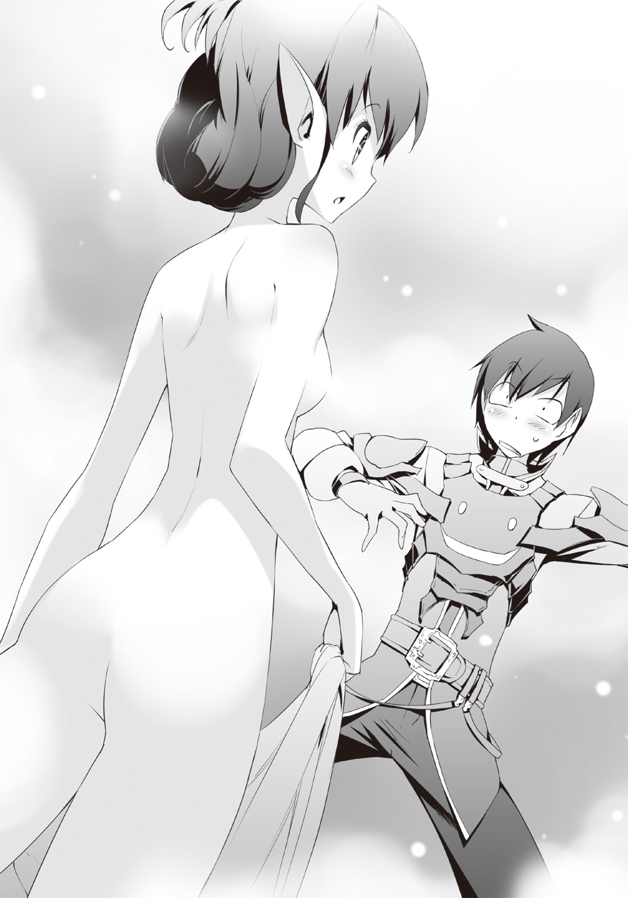
絶対に視界にいれないようにしてオレは言った。
「風呂に入るのに服を着たままということはないだろう」
いや全くその通りなんだけど！ なにも間違ってないんだが！ 強いていえば順番を間違えてる！
「お、オレが出ていってからでいいだろ!?」
「なぜそんなことをする必要がある。私が湯浴みするだけだぞ」
「お前が湯浴みするからこそ出ていかなきゃダメなんじゃないか!? あれ、なにこのすれ違い!?」
人間の会話って時に難しいな！
『無駄だ、無駄。お嬢......というより王族の感性なんてそんなもんだ』
状況を見兼ねたのか、マンゲツが珍しくオレに気を遣ってくれた。
『普段から着替えや湯浴みに至るまで、全部人任せだからな。今更、裸を見られることくらいどうということもないんだよ』
そ、そういうことか。いや、だからといって、そんな。
「マンゲツ、私はそこまでではないぞ。服を着ることくらいは自分でできる。帝国は今、無駄なことに人を使う余裕はないのだからな」
『でも風呂入るのに一人じゃ無理だろ？』
「......うむ。そうだな。そちらは専門に担う者がいる以上、仕事を奪うわけにもいかない」
とにかく、アイリスは人前で全裸になろうと気にしないということは十分にわかった。
しかし、だからといってオレがまじまじと眺めていいわけもない。......わけもないよな？
「惑わされるな、オレッ！」
一瞬『別にいいんじゃないだろうかほら本人が嫌がっていないわけだしセクハラもやられている方が訴えなければいいわけだしとなると何の問題もないのではないだろうか』という考えが怒濤の如く巡ったので、オレは頭を搔き毟った。
その時、不意に昼間のことを思い出す。ガーネットがバラしてしまったことだ。
三年前、旅の途中で立ち寄った村がたまたま温泉の湧くところで、疲れを癒すために入ることにしたのだが。
そこが混浴であることを知らず、オレはばっちり、ガーネットの生まれたままの姿を見てしまったのだ。
ついでに言えばこっちも全裸だったので、彼女もまたオレの全てを目撃することになった。
「うっ......」
アイリスの裸体を見てしまったことで、連鎖的に、三年前のガーネットの姿も脳裏に蘇ってしまう。
そのせいか二人の発育の違いとか胸が小さい子は感度がいいとか聞いたけどどうなんだろうとかそんなどうでもいい知識まで蘇ってきてそれは次第に自分の下半身へと血流を巡らせてオレのオレとしてのシンボルを雄々しく屹立させようとしてだから、
「だあああああああああっ！」
オレはまた自分を殴打した。アイリスの裸を前にしてガーネットを思い出すとか、色々と失礼だろ、オレ！
「リョ、リョウマ、先ほどからどうしたのだ。何か体の調子でも悪いのか？」
アイリスは心配そうに声をかけてくる。彼女にしてみれば、唐突にオレに自傷癖が現れたかのように思えたのだろう。
「だ、大丈夫だ。ガーネットとアイリスの胸が......」
「私とソレイユ王女が？ どうかしたのか？」
「あ、ああ、いや、なんでもない！」
慌てて首を振る。うっかりとんでもないことを言ってしまうところだった。
「そうか？ しかし、お前に何かあってはことだ。医者を呼んだ方がいいのではないか？」
「いや、別にそういうわけじゃ――」
安心させようとしかけたところで、オレは再び硬直した。
「......ふむ。熱はないようだな」
アイリスが、近づいてくると、オレの額に手を当てたのだ。全裸のままで。
「しかし、だからといって油断はできない。隠れた病があるかもしれないからな」
続いて密着してきたまま、俺の体のあちこちを、念入りに調べてくる。全裸のままで。
「あああ、アイリス、アイリス？」
柔らかいやらいい匂いがするやら吐息が肌をくすぐるやら柔らかいやら柔らかいやら！
出会った時にもやられたけど相手が服を着ていない分その差は歴然としているわけであわわわまずいこれはまずい非常にまずい。
そういえば三年前もガーネットから逃げようとした拍子に地面に蹴躓いて転んで、結果的に彼女の胸に思いきり顔を埋めてしまったんだっけ!? 対応を誤ると同じことを繰り返すぞ！
「ガ、ガーネット！ 待ってくれ！」
が、混乱したオレはとんでもないことを口走ってしまった。
「......またソレイユ王女の名か。やはり彼女と喧嘩別れしてしまったことを悔いているのか？」
アイリスが明らかに悲しそうな表情をする。
いかん。現恋人を呼ぶ時に元彼女の名を出してしまって気まずくなるとかそういう状況を聞いたことがあるが、まさか自分が同じような危機に陥るとは。
「そ、そういうことじゃなくて、今のはなんていうか、ものの弾みというか」
「いや、気にするな。お前がそう思うのは当然だ。今日の話からすると、ソレイユ王女とは深い関係にあったようだからな......」
「だから違うって！ 超誤解！ まじで誤解だから、それ！」
なんだか落ち込んでいるようにも見えるアイリスに慌てて説明するが、自分でも酷い言い訳にしか聞こえなかった。
いや、その前にこのままではオレ自身、のっぴきならない状態になりそうで、とりあえず彼女から距離をとる。
「と、とにかく、いいから！ 本当にいいから湯を浴びてくれ。冷めたら勿体ない！」
「......そうか？ 遠慮はいらないぞ。気になることがあるなら言ってくれ」
「オレが今一番気になってるのはお前のことだから！」
「......え？」
なぜか訪れる間。
ん？ 何か今、オレ、どさくさまぎれにとんでもないこと言わなかったか？
「そ......それは......その......ど、どういうことだ？ お前は、ソレイユ王女と親しい間柄ではなかったのか？」
ぽっと顔を赤らめるアイリス。
やっぱり言ってた！ しまった！
そういう意味じゃなかったんだけど、客観的に聞けば、告白ととられてしまってもおかしくないじゃないか。
「な、なんでもない！ さあ、早く、風呂に入ってくれ！」
オレは踵を返すと、強引に話を終わらせて部屋を出ていった。
「あ......危なかった......」
色んな意味で。
『てめえ、おれの前でお嬢を口説くとはいい度胸じゃねーか』
「ちょっと今、そういう絡みやめてくれないかな......」
さすがに付き合う余裕がないぞ、マンゲツ。
『......まあ、なんだ。色々大変だったな』
あ、さすがに同情してくれた。
「三年前とは違う意味で精神力削られるな、これ」
少数精鋭とは言えど、あの時は仲間に男もいたから、必然的に同性同士の部屋割りだったのだ。
『お嬢は聡いところもあるが、いかんせん、世間ずれしてないところがあるからなぁ......』
「全くだな」
これから旅をしていると、色々なことが起こってくるのかもしれない。
『まあ、だからといって妙な真似しやがったら、てめえのアバラ纏めて粉微塵にしてやるからな』
「想像するだけで背筋凍りそうなこと言うなよ」
本当にできるから質が悪い。
「......リョウマ？ そこにいるか？」
と、そこで、扉越しにアイリスが話しかけてきた。
「いるよ。どうした？」
「うむ......ちょっとお前に訊きたいことがあってな。入ってきてくれるか？」
「は、入るのか？ それは駄目だろ!?」
「......駄目か？」
その、切実な言い方にオレの心は揺れた。
う、うーん。まあ、どうしてもと言うなら、仕方ないのか？
「......わかった」
なにか困ったことが起こったのかもしれない。それを無視するわけにもいかなかった。
......というのは、言い訳だろうか。
「一体、どうしたっていうんだ？」
オレは再び部屋に入ると、できるだけ桶のある方を見ないようにしてから訊いた。
「うむ。ここ数日、外で風呂に入る度に思っていたのだが......」
困ったように、アイリスは応えてくる。
「背中に石鹼をつける時は、どのようにすればいいんだ？」
「前から後ろに手を回してやればいいんじゃないのか」
「他の皆もそうやっていて、私も同じようにしようと思ったが、中々できないのだ。届かない部分もあるし、何か上手い手はないかと思ってな」
ああ、まあ、慣れない人には難しいのかもしれないな。
「と言ったところで、オレも何か特別なやり方をしているわけじゃないしなあ」
「少しやり方を教えてくれないか？ 私の前で、お前がいつもやっているようにしてくれればいい」
「いや、それは不味いだろ......」
必然的にアイリスの裸を横目に通り過ぎることとなる。
「......そうか。なら仕方ないな。我儘を言って悪かった」
残念そうにアイリスが零すのに、オレは頭を搔いた。
しかしこればかりは、易々と請け負うわけにはいかない。今度、あの白い裸体を目に焼きつけたら、今夜は眠れなくなってしまいそうだった。
妥協案としては、一つだけ方法がある。アイリスもオレも、納得できる方法だ。
「......あー。じゃあ、背中、洗おうか？」
後ろからなら、直視しないようにすれば、何とかなる。
それに布越しであれば、直接触っているわけではないから、セーフだろう。
「......セーフだよな？」
セーフということにしておこう。そうしなければ、また変な気分になってくる。
「そんなことをしてもらっていいのか？」
「まあ、うん。背中だけならな。背中だけだぞ？」
オレは自分に言い聞かせるつもりで念を押すように口にした。
「そうか！ それはとても助かる。ありがとう、リョウマ」
嬉しそうに返してくるアイリス。うっ。なにか罪悪感が。
『てめえ......アバラいらねえらしいな......』
おまけに鎧が何か恐いこと言ってくるし。いるに決まってるだろ。
「しょうがないだろ......！ 断ったらアイリスが落ち込むんだし！ 布を使ってるから、大丈夫だ！」
『妙なことしやがったら内臓ごと押し潰してやるからな』
こいつ、声が真剣みを帯びている。本気でやるつもりだ。
「......わかってるって」
オレは応じながら、床の木目を見つつ、アイリスの方に歩み寄った。
「すまないな。これを使ってくれ」
差し出された布と石鹼を受け取って、オレはその場に膝をつく。
そして、ぎりぎり視界の隅にアイリスの小さな背中を映しながら、手を伸ばしていった。
間もなく、信じられないくらい柔らかい感触が、布を通して伝わってきた。
こ、これは。思っていたよりも、平静さを保つのが難しいぞ！
「......始めるからな」
宣言をしてから、ゆっくりと石鹼で泡だった布を使い、アイリスの背中をこすっていく。
「フフ。まさかリョウマに洗ってもらえるとはな。恐れ多いとはこのことだ」
「そ、そりゃこっちの台詞だって。なんたって、アイリスは皇女様なんだからな」
咳払いをしながら、慎重にアイリスの体の洗浄を続けていった。
「......私など、そう大した人間ではないよ」
やがて、ぼそりと呟くアイリス。
「なに言ってんだ。グレディ......お父さんの跡を継いで、立派にやってるじゃないか」
「しかし結局、父上が倒れられてから三年、帝国の状態は悪くなるばかりだ。このままいけば、近いうちにガルフレアという国自体が消えてなくなってしまうかもしれない」
「そうならないように、オレ達は旅を続けてるんだろ」
「それは、そうだが。今日、ソレイユ王女に話すら聞いてもらえなかった時、私はひどく衝撃を受けた。帝国というものの有様を、まざまざと見せつけられてしまったようでな」
......まあ、確かに、そうだな。
オレだってあそこまで怒ったガーネットは見たことがない。
いかに世界中の人間が、ガルフレア帝国を敵視しているかということの証明だろう。
「本当に帝国の復興などできるのだろうか――そんな情けない考えが浮かんできたよ。あそこまでこちらを拒絶した者と、私は打ち解けられるのだろうかと」
「アルフレンさんが上手くやってくれるって。......そうダメなことばかり想像するなよ」
「うむ。......リョウマの言う通りであることは、私もわかっているのだが」
水の跳ねる音が、二人きりの部屋で、殊更に強く響いた。
「大見得を切って出てきた以上、どうにか良い方向に進ませなければな......」
まるで自分を鎖で縛りつけるように、アイリスは言葉を紡ぐ。
気丈に振る舞っている彼女とて、まだオレと同じ歳の女の子だ。
先行きが不安にもなるし、自分の不甲斐なさに失望することもあれば、プレッシャーに耐え切れなくなることもある。
だけどそれでも、彼女は大変であることがわかっている旅に出た。
お風呂の入り方さえ知らないのに、自分が背負った重過ぎる荷のために。
......助けてやりたい。素直にそう思った。
自分のできることで彼女の支えになってあげなくちゃならない、と。
それは多分、オレにしかできないことだった。
この世界の人間じゃない、いわば部外者だからこそ――何にも縛られることなく、アイリスの側に立つことができるのだ。
魔法よりも、英雄としての地位よりも、それがオレにとって最大の武器なのかもしれなかった。
「......んっ......」
そのためには何としても、ガーネットに理解してもらわなくちゃならない。
たとえアルフレンさんが駄目だったとしても、もう一度、アタックしてみるべきだろう。
「......リョ......リョウマ......？」
よし、なんかやる気が出てきたぞ。頑張ろう！
「リョウマぁ......そ、そこ......ダメ......」
ん？ ダメ？ なにが？
「な......なにか......へん......になる......ぅ......」
変？ 変ってなにが？
『おいこら！ てめえ、ぼーっとしてんじゃねえ！』
マンゲツに怒られて、オレははっと我に返った。しまった。考え事に没頭していて、自分が何をしていたか忘れていた。
というか、なんだこれ。柔らかい。アイリスの背中ってさっきまでこんなにぽよぽよしてたっけ？ ん、なんか突起がある。にきびかな。
「あんっ」
突然、悩ましい声を上げるアイリス。
............って。
そこでようやくオレは気がついた。自分がさっきから何を一心不乱に撫でていたかに。
他のことに気を取られていたため、意識がおろそかになり、いつのまにか手がアイリスの体の前に回っていたのだ。
更に言うと布は桶の中に落ちていて――素手で触っていた。
アイリスの、胸を。
「......って、うわあっ!?」
あまりに現実離れしたことで感覚が追いつかなかった。
自分でもびっくりするくらい彼女の胸を揉み続けてから、ようやくその場から飛びのく。
「......はふ」
艶やかな吐息をつくと、アイリスは、何かに達してしまったかのようにそのまま前のめりになった。
「ごご、ごめん！ 本当にごめん！」
オレは速やかに土下座する。あれだけ注意してたのにやってしまった。遂にやってしまった！
『覚悟はいいなてめえ。明日から一切物を食えないと思いやがれ』
マンゲツが死刑宣告に等しいことを言ってくる。いやしかし、やむを得ない！ 嫌だけど！ お手柔らかにお願いします！ いや、やっぱり嫌だ！
「ま......待て、マンゲツ」
息を切らしながら、アイリスが体を起こした。背中越しに言ってくる。
「リョウマが背中を洗うことを了承したのは私だ。責任はこちらにある」
『しかしよ、お嬢！』
「そ、それに......リョウマには大変な旅を手伝ってもらっているのだ。ソレイユ王女にも言った通り、これくらいは......その、私とて覚悟していた」
顔を赤らめながら、恥ずかしそうに囁くアイリス。
「ち、違うんだって！ そんなつもりはなかったんだよ！ まじで！ まじだから！」
ああ、なぜだ。言い訳を重ねれば重ねるほどダメになっていく気がする。
「もういい。お互いに忘れることにしよう」
苦笑したあとで、アイリスは、小さく口を開いた。
「......それに、その、そんなに悪くなかった」
え。今なにか、聞き逃せないことを言われたような。
「アイリス......？」
「――な、なんでもない。さあ、次はリョウマの番だ。私はそろそろ上がるぞ！」
自分の気持ちを誤魔化すようにそうわざとらしく声を張り上げると、アイリスは桶から立ち上がった。
「って、いや、だから、少しは隠せって！ ああ、もう！」
これ以上、思春期の男子を惑わせないでくれ！
オレは急いで後ろを向くと、再び部屋を出ていくのだった。
ガーネット＝フルメ＝ヴェレイ＝ソレイユは、その夜、自室で酷く落ち込んでいた。
昼間に起こったことを、まだ引きずっていたのだ。
「ああ、リョウマ様......リョウマ様はなぜ、あんな女と......」
どうやっても、受け入れることができない。
当然だ。自分にとって大切な人と、ありえないはずの再会を果たしたと思ったら、彼の隣には見知らぬ人間がいたのだ。
しかもそれは、あの憎きグレディスの娘であるという。
感情的になってしまった自分を、誰が責められようか。
悲しみを抑えられない自分を、誰が非難できようか。
三年前、今や四大聖国と呼ばれている国々の協議によって皇帝討伐が決定された時。
魔法の才能に恵まれていたガーネットは、四つの大国を代表し、異世界召喚を実行するという大業を授かった。
幸いにもそれは成功し、この世界にその人物――クロセリョウマは現れる。
彼は最初こそ、どこにでもいるような少年にすぎないように思えた。
しかし長い旅の中で少しずつ成長していき、最後には、歴戦の勇士もかくやとばかりの風格が漂うようになったのだ。
彼は、自分達が困っているというただその理由だけで、何も得るものなどないのに協力し続けてくれた。
数々の窮地も、潜り抜けてきた死線も、リョウマがいなければどうにもならなかっただろう。ガーネットとて、何度彼に助けられたかわからなかった。
しかしリョウマはそのことを誇ることも、恩着せがましく言ってくることもなく。
ただ世界の平和のために、己が身を犠牲にしても戦い続けた。
そんなリョウマと共に旅をし、常に傍にいたガーネットは、いつしか彼に恋心を抱くようになる。
いつか別れる人だとしても。元の世界に帰れば、二度と会えなくなるとしても。
リョウマに惹かれていく自分を、止めることはできなかった。
「......だから、嬉しかったのに」
奇跡が起こったと思ったのに。
「まさか、またリョウマ様がこちらの世界にやってくるなんて......」
自分の願望が生んだ幻だと思ったものだ。
本物だとわかった時、今日ほど、アラムヴェルト神の巡り合わせに、感謝したことはなかった。
「それなのに――どうして」
あんな、アイリスとかいう女と一緒にいたのだ。
納得できない。ありえるはずがない。あんなものは現実ではない。
「わたくしは、一体、どうすれば......」
帝国ガルフレアに協力することなど、絶対にできそうもなかった。
グレディスのせいで、ティタニアだけでなく、どれだけの国が被害を受けたと思っているのだ。
父親――国王の体がめっきり弱くなったのも、帝国の侵略によって生じた心労が重なったためだった。
許せない。心からそう思った。
周囲の反対を押し切り、一国の姫でありながら、リョウマの旅に同行したのも、その気持ちがあったからだ。
なんとしても皇帝を倒す。そのためなら、過酷な行程も耐えぬくことができた。
「......リョウマ様。あなただって、グレディスには怒っていたではないですか」
彼に滅ぼされた村を見た時。帝国に連れていかれる奴隷達を目にした時。
憤りに、拳を固めていたはずだ。それなのに。
三年前には通じあっていたはずの彼の心が、全く見えてこなかった。
「ガーネット......少しいいか？」
後ろから声が聞こえて、ガーネットは目元を拭いながら、振り返る。
腹違いの兄、アルフレンが佇んでいた。
「お兄様......どうなされたのですか？」
「うん。実は昼間、クロセ殿に会ったんだが」
「お兄様もですか。......もしかして、なにかを吹きこまれたのでは？」
警戒した自分を、アルフレンは困ったような目で見つめてきた。
「そういうわけじゃないんだが......彼らをろくに話も聞かずに追い出したそうだな？」
「当たり前ですっ！ 誰が皇帝の娘のことなんて！」
「君の気持ちはよくわかる。だが――ガーネット、あのクロセ殿が味方をしているんだ。なにか事情があるのかもしれない」
「そ、そうかもしれませんが......だからといって、あんな女の頼みなんて、聞き入れられませんっ！」
「......まあ、そうだろうな」
腕を組み、アルフレンは考え込むように俯く。
しばらく黙ったままだったが、彼はふと、なにかを思いついたように口を開いた。
「時に――ガーネット。グレディスが魔神を呼び出すために使った魔導書だが、あれは確か我が国にあったはずだな」
「え？ ......ええ、そうです」
突然に話が変わったことを訝しがりながらも、ガーネットは頷く。
「皇帝が倒れたあと、四大聖国で話し合った結果、異世界召喚の任を達成したティタニアが預かるのがよいだろうということで決まりました。今は、宝物庫に保管してあります」
「その鍵を開けるための魔法は、君だけが知っているんだったな」
「......はい、そうです」
アルフレンはなにが言いたいのだろうか。先が見えてこない会話の展開に、ガーネットは眉をひそめた。
半分しか血の繫がっていない兄とは、決して仲が悪いわけではない。しょっちゅう一緒にいるわけではないが、時に茶会を共にすることもあるし、国王の代理を務めている今、相談に乗ってもらったことも一度や二度ではなかった。
しかし、だからといってアルフレンの何もかもを知っているわけではない。
それは立場上、正統な王位継承権を持つガーネットが、彼に対して負い目を感じていたからだ。
自分が生まれなければ、今、この立場には兄がいたはずだったのに。
そんなことを考えてしまうと、どこか距離を取ってしまうところがあり、いまいち彼の内面まで深く踏み込めずにいたのだ。
故に――ガーネットは時折、アルフレンが何を考えているのかわからなくなることがあった。
常に穏やかで、誰とも敵対を好まぬその性格は、決して嫌いではなかったのだが。
「ガーネット。先ほど、モーヴェと今回のことについて話していて、一つの考えに至ったんだが......」
「はい。なんでしょうか」
姿勢を正して聞き入るガーネットに、アルフレンは話し始めた。
「クロセ殿は素晴らしい人間だ。他人のために自分を投げ出し、多少の無茶ですらも躊躇せずに成し遂げようとする」
「ええ、その通りです」
リョウマを褒められると、自分のことを言われたかのような気になる。
微笑んだガーネットに、アルフレンは続けた。
「だが――時にそれが弱点になることもあるんじゃないだろうか」
「......どういうことですか？」
「君も知っている通り、異世界召喚は禁呪だ。それを実行してまで皇帝の娘がクロセ殿を呼んだのは何故だろう」
兄の目が、こちらの姿をはっきりと映す。真剣な口調で、彼は言った。
「僕は思うんだ。ひょっとして、クロセ殿は――」
ガーネットは、アルフレンが語った考えに、呆然となる。
「......まさか、そんな......でも......」
もし――もし、そうだとすれば。
一旦は振り払おうとした不安。
だがそれは、繰り返し、繰り返し、自分の中で頭をもたげるのだった。
第三章 暴かれる真相
結局、その日はほとんど眠ることができなかった。
当たり前だ。すぐ隣にはアイリスがいて、可愛らしい寝息や妙に艶めかしい寝言が、思い出したように聞こえてくるのである。
その度にピンク色の妄想が瞬時に形成され、オレはまんじりともせぬ夜を過ごすこととなってしまった。
おまけにようやく明け方過ぎになってからうとうとし始めたのだが、意識が落ちて間もなく、部屋に鳴り響いた激しい音で叩き起こされる羽目になった。
扉をノックしていたのは、鎧に身を包んだティタニアの兵士で、彼は朗々とした声でオレ達に報告をした。
至急、ソレイユ王女が会いたいと言っている、と。
それを聞いては、もう一度ベッドへ戻るわけにもいかない。冷たい水で顔を洗い、ふらふらの頭をシャッキリとさせて、オレはアイリスと共に、急ぎ城へと向かった。
「......わざわざお呼び立てして申し訳ありません。リョウマ様」
謁見の間に案内されたオレ達を待ち受けていたのは、別れた時と変わらず、厳しい顔をしたガーネットである。
彼女は玉座から強い視線でこちらを睥睨してきた。
「一晩考えまして、わたくしも昨日の対応はいささか礼節に欠けるものであったと考え直しました。ついてはもう一度、そちらの提案を前向きに考える機会を持つことを、お知らせしようと思ったのです」
ただ、告げられたのは意外な言葉である。オレは驚くと共に、嬉しさがこみ上げてくるのを感じた。
「本当か!?」
室内には前と同じく兵士達やモーヴェがいたが、その中に、ガーネットの横に立つアルフレンさんの姿も見える。目を合わせ、頭を下げたオレに、彼は微笑んだ。どうやら、上手くやってくれたようだ。
「やったな、アイリス！」
「うむ。ほっとしたぞ！」
オレはアイリスと手を合わせ、旅の目的に一歩前進した喜びを嚙み締め合った。
「――ただし。それには条件があります」
でも依然として硬い口調のままガーネットが言うのに、再び緊張が走る。
「条件......？」
詳細を尋ねたオレに、彼女は続けた。
「今のままでは、そこにいるフェルモント皇女の言うことが真実であるか、それを確かめる術がわたくしにはありません」
「だ、大丈夫だって。オレが保証する」
「......個人としてはそれで十全であるとは思うのですが」
わずかに躊躇うような間を置いたあとで、ガーネットが首を横に振る。
「城の中にはわたくしと同じく、皇帝を深く恨む者が未だに大勢います。彼らを納得させるためには、たとえ英雄たるリョウマ様のお言葉とて、それだけでは足りぬことでしょう」
「......そうなのか」
無理もないかもしれない。長らく続く帝国との戦争で、大切なものを失った人達は多い。
オレは一度世界を救った人間だ。別に驕っているわけじゃないが、他の人達よりもいくらかは発言に信頼性を持たれる立場にあると思う。
それでも――やっぱり、人の心っていうのは簡単じゃない。
口で主張する以外に何か、理屈で受け入れさせる方法が必要なんだろう。
「でも、それじゃあどうすればいいんだ？ オレにできることなら何でもするから、言ってくれ」
こうして呼び出して、わざわざ前置きするからには、何か案があるのだろう。
そう思っての問いかけだったが、ガーネットは目を閉じたまま黙り込んだ。
「......ガーネット？」
不審に思って呼びかけると、
「やっていただくのは――リョウマ様ではありません。フェルモント皇女です」
やがて彼女は、そう言った。
「私が......？」
アイリスが己を指差すのに、ガーネットは「ええ」と応える。
「あなたがもし、我が身をもってして己に一片の邪心もないと証明できれば、わたくしだけでなく、国全体もそれを受け入れることでしょう。その後、改めて協力の申し出をするのであれば、こちらはそれを前向きに検討するつもりです」
「な、何をすればいい？ やる。やらせてくれ！」
迷っている暇などない、というようにアイリスは間髪容れずにそう返した。
「......本当にいいのですね？」
「ああ。それでこちらを信用してもらえるなら、文句はない」
堂々たる態度で、きっぱりと言い切るアイリス。
しばらく無言を保っていたガーネットだったが、やがて、深く頷いた。
「いいでしょう。それでは――【神籟の儀】を行うこととしましょう」
「......しんらいのぎ？」
オレはおうむ返しに呟く。アラムヴェルトにいる間、長くこの国にいたが、それでも聞いたことのない単語だった。
「古くからティタニアに伝わる習わしです。罪の疑いをかけられた者に直接の証拠がない場合にのみ行われ、見事達成することができれば、無実を勝ち取ることが可能となります」
「そんなものがあったのか......」
「リョウマ様がいらっしゃった頃には、そのようなことを行う必要のある事件は起こりませんでしたから。ご存じなくても無理はありません」
「それで......その【神籟の儀】とは一体なにをすればいいんだ？」
オレとガーネットとの会話が終わったタイミングで、アイリスが尋ねた。
「簡単なことです。こちらが用意した人間と一対一で戦っていただきます。勝つことができれば、儀式は終了。フェルモント皇女は信用に足る人間だと判断します」
「戦うって......それは、危険じゃないのか？」
漂い始めた不穏な空気に嫌な予感がして、オレは確かめる。
すると、全く何の躊躇いもなくガーネットが言った。
「ええ、もちろん。下手をすれば死んでしまう恐れもあります」
「お、おい、ガーネット!? それはちょっとやり過ぎだろ!?」
やろうとしていることはわかる。多少、強引でもアイリスが『自分の正当性を証明した』という既成事実を作ろうとしているのだろう。
だけど、それでも、さすがに無茶だ。オレと一緒ならともかく、アイリス単独で命を懸けたやりとりなんて。彼女はそこまで戦闘経験を積んでいない。
「リョウマ様の仰られることは尤もであるとわたくしも思います。しかし......こうでもしなければ、帝国と手を結ぶなどということを国内で推し進めることなどできないでしょう」
「それはそうだけど......！」
それでもし何かあっては、元も子もなくなってしまう。
「クロセ殿。道理を押しのけ、無茶を通そうとするならば、多少の危険性はやむを得ないのではありませんかな」
それまで黙り込んでいたモーヴェが口を開いた。
「それに帝国が本気で国を生まれ変わらせたいと思っているのであれば、この程度は覚悟の上でしょう」
「いや、簡単に言いますけど、それがどんなに大変なことか！」
「......もうよい。リョウマ」
必死で他の手段を取ってもらおうとしているオレを、アイリスが止める。
「それしか方法がないのであれば、やるしかないだろう。......ソレイユ王女の言う通り、我が国の立場を考えれば、致し方のないことかもしれない」
「アイリス、でも......！」
「私を心配してくれて嬉しく思う」
オレを見て、アイリスは微笑んだ。
「だが......私はどんな困難な道であろうと歩むことを決めたのだ。これがその過程に立ち塞がる障害であるというのなら、見事乗り越えてみせよう」
「......よく言いました。その言葉が噓ではないことをわたくし達に示してみなさい」
玉座から立ち上がると、ガーネットは殊更に強い声を張り上げた。
「アイリス＝ナクナ＝フェルモントの同意を得ました！」
腕を振り、広い謁見の間に響き渡るかのような宣言をする。
「これより――【神籟の儀】を始めます！」
オレとアイリスが連れていかれたのは、城の横にある広い空間だった。
そこには芝生の上に整然と並んだ、大きな正方形の石畳が用意されている。
共に来たガーネットは、石畳の向こう側に用意された豪奢な椅子に腰かけていた。
「これが【神籟の儀】のために用意された舞台となります。フェルモント皇女にはこの上で戦っていただきます」
ガーネットの隣に立ったモーヴェが説明を始める。
この場所には、三年前にも何度か訪れたことがあった。一体なんだろうかと思っていたのだが、まさか、そんな物騒なことに使う場所だったとは......。
「戦いを挑んだ方が死ぬか、途中で儀式を諦めることを宣言すればそこで負けは確定。相手側を殺すか、あるいは参ったと言わせれば勝ちが決まります。加えて先ほども姫様が申しましたが、儀式を行うのは疑いをかけられた者一人。誰かが助けに入った時点で失格となりますので、注意するように」
モーヴェの指示により、アイリスが壇上に上がった。彼女は我が身を支配する緊張を無理矢理抑え込むように、何度も深呼吸を繰り返す。
「......本当にいいのか？ アイリス。他に何かやり方があるかもしれない。そっちを探さないか？」
自分でもしつこいと思いつつ、どうしても放っておけなくて、オレはついそう声をかけてしまった。
アイリスはこちらを振り返り、明らかに無理矢理だと思われる笑みを浮かべる。
「お前の気持ちはありがたいが、あるかどうかもわからない方法を探すほど時間に余裕があるわけじゃない。それに......問題ない。私だって、戦える」
言ってローブを払うと、腰元に手を伸ばし、彼女はそこに提げられた武器を手にとった。
旅の前、リヒターからもらった護身用のナイフだ。
「父上が亡くなられて以来、リヒターに剣の手ほどきを受けてきた。――いざとなれば、魔法も使える」
「それはそうだけど......」
だからといって安心できるかと言われれば、全くのノーだ。
『うう、お嬢よぉ、今回ばかりはこのアホに賛成だぜ。何もお嬢自らがこんなあぶねぇ真似しなくたって。そんなのは、この生贄と書いてボケと読む奴に任しときゃいいんだよ！』
酷い言われようだが、しかし、オレとしてもそっちの方がマシだ。
自分が体を張って挑むより、誰かが戦っているのを見ている方がきつい。
「......私は本当によい同行者を持ったものだ」
口元を緩めながらそう零すと、鞘から刃を抜き、アイリスは構えた。
「さあ、私の方は準備ができたぞ。いつでも来い！」
「......よろしい。それでは、罪人を裁定する者よ、ここに」
モーヴェが呼び掛けると、石畳にある人物が上がる。
「ロザリ......」
オレは呆然となった。ティタニアが誇る騎士団、その団長を務める存在。
よりにもよって、なんて人が相手なんだ。
「......悪いが手加減はしない。仕事なものでな」
無表情のまま、ロザリはアイリスに向かって、淡々と告げた。
「リョウマの師が敵か。相手にとって不足はない。......と、言うことができれば良かったのだが」
アイリスは苦々しい顔で言う。
「少々私にとっては、荷が重い相手となりそうだな......」
ああ、もう、代わってやれるものなら代わってやりたい。
「なんでオレが皇帝の娘じゃなかったんだ！」
そんな我ながらわけのわからない叫びをしてしまうくらい、オレは焦燥にかられていた。
「......すまないな。クロセ殿」
背後からの声に、振り返る。そこにはアルフレンさんがいた。
『あ、てめえ！ 調子いいことばっかり言いやがって、やっぱりろくなモンじゃなかったじゃねーか！ ぶっ殺すぞ！ こいつが！』
「落ち着けよマンゲツ！ っていうか喋んな！」
ほら、アルフレンさんが目を丸くしたまま固まってる。
「いや、これはええと、魔法をかけられた鎧でして......旅立つ前にある人に貰って......」
さすがに元皇帝が使っていた物だとは言えない。その辺りをなんとか誤魔化しつつ、しどろもどろになりながらも解説すると、アルフレンさんは次第に驚きから解き放たれていった。
「......なるほど、そういうことか。不可思議な物もあるものだな」
興味深げにマンゲツを見ながらそう呟き、次いでオレへと視線を移す。
「......と。感心している場合ではなかった。君達の要望に完全に応えることができず、このような結果となってしまってすまなかった」
「いえ、そんな......。アルフレンさんがガーネットに、もう一度こっちの話を聞くように頼んでくれたんですよね」
「ああ、そうだ。その時はわかったと言っていたんだが、まさか、【神籟の儀】を持ち出してくるとは......」
どうやらアルフレンさんも予想外のことだったようだ。恐らく、ガーネットが独断で決行したことなのだろう。
「......とにかく、こうなってしまった以上は君も見守るしかない。彼女の無事を祈ろう」
痛みを堪えるような顔で、石畳を見つめるアルフレンさん。多分、自分の行いでこんなことになってしまったことで、責任を感じているのだろう。
「そうですね。なんとか切り抜けられればいいけど......」
魔法を使うことができるとはいえ、安心することはできなかった。
――と、そこで。
「儀式を始める前に一つ伝えておく」
モーヴェがしわがれた声で、余りにも残酷なことを伝えてきた。
「この戦いは己の身のみを使って挑むもの。よって、外側から与えられる魔力を元にした魔法を使うことは、一切できない。もし少しでも発動した場合、その時点で儀式を行う資格を失うものとする」
「なっ......!?」
どういうことだ。そんなこと、聞いてないぞ！
「魔法が......使えない？」
さすがにアイリスも動揺したように血の気の引いた顔で、一歩退いた。
「ちょっと待て！ そんなの、アイリスが勝てるわけないだろ!?」
オレは壇上に上がろうと走り出した。しかし、アルフレンさんに手を摑まれる。
「待て。手出しをしてもダメだと言われただろう！」
「なに言ってるんですか！ こんなのもう中止ですよ！ ロザリを相手にアイリスがどう戦えっていうんですか!?」
「確かにそうかもしれない。だが、それを決めるのは君じゃない。フェルモント皇女だ！」
オレはその台詞に、アルフレンさんに向けていた目を壇上へと戻した。
そこには、自分の身長の二倍はあるようなロザリと対峙しているアイリスの姿がある。
「アイリス！ 中止しろ！ さすがに無理だ！ アイリス！」
オレは必死に何度も呼びかけた。しかし彼女は応えない。ただ佇み続けるだけだ。
「それでは――始め！」
そして遂に、戦いが始まってしまった。ロザリが、背中に負った大剣に手をかける。
「......やるしか、ない」
小さく、消え入るような声で、アイリスがそう発した。
「やるしかない。帝国を、復興させるためなら」
前を強く睨みつけ、ナイフの柄を握り締めると、彼女は吼える。
「それが、たとえ――どれほど険しい道だとしても！」
石畳を蹴りつけると、勢いのままに疾走を始めた。
気合を入れるような叫びを上げながら、得物を片手にロザリへと飛びかかる。
「その決意は見事」
短く応じると、ロザリが動いた。
「――こちらも、全力でやってみせよう」
甲高い音が鳴り響く。彼女の腕を覆った鉄製の籠手が、アイリスの刃を防いだのだ。
そのまま無造作に振り払われた手によって、アイリスはこちら側に吹っ飛んでくる。
「くっ......！」
彼女は受け身を取ると硬い床を転がり、素早く体勢を立て直した。
そのまま勢いを活かして再度、挑もうとするアイリス。
しかし――その前に、ロザリは自らの得物を轟然と振り被っていた。
大柄な彼女の身の丈ほどもある大剣が、次の瞬間、真っ直ぐにアイリスに向かって落とされる。
「ハッ......ッ！」
しかし彼女の反応は思いの外、速かった。体を沈めると、後方へと移動したのだ。わずかに遅れて、ロザリの大剣が虚空を裂いた。
鼓膜が破れるかと思うほどの派手な音が鳴る。
見ると、剣の切っ先が頑強な石畳を容易く打ち砕いていた。
思わずオレはぞっとする。あんなものを喰らえば、人間の頭なんて一瞬で木端微塵になってしまうだろう。
アイリスもまたロザリの齎した破壊力に慄いていたが、彼女はそんな自分を叱咤するように唇を嚙み締めると、移動を開始した。ロザリに接近し、ナイフを振り回し始める。
ロザリは片手で軽々と大剣を操りながら、それら全てを防いでいった。表情に変化はなく、まるで子どもの児戯に付き合っているかのようなつまらなさが滲み出ているようにすら思える。
「......ダメだ」
ある程度の訓練しか受けていないオレでもわかる。
確かにアイリスは自分でも言う通り、素人とは思えない動きを見せていた。
だけどそれでも、ロザリの領域には到底近づけていない。
「ハアッ！」
一閃。アイリスのナイフが斜めに銀線を描く。
しかし後ろに半歩退き、最小限の動きのみでそれを避けたあと、ロザリは大剣を持つ手にわずかな動きを見せた。
「アイリス！ 伏せろ！」
オレのアドバイスに、アイリスは咄嗟に従う。それが功を奏した。
慌てたように倒れ込んだ直後、彼女の頭上を、凄まじい勢いで大剣が真横に通り過ぎたのだ。
「リョウマ様！ 口出しをすると儀式は取りやめとなりますよ！」
ガーネットからの叱責が飛んできた。
「直接、手は貸してない！ 別にいいだろ!?」
オレがそう言い返すと、彼女はあからさまだと思えるくらい不機嫌になる。
「......今回は許します。でも次からは駄目ですから」
頰を膨らませたまま、ガーネットはそっぽを向いた。
......参ったな。これで助言することも封じられてしまった。
「ハアッ！」
アイリスがロザリに向かって疾駆する。懐に飛び込もうという算段だろう。
大剣を扱う場合の注意点として、どうしても振り幅が大きくなってしまい、次手へ移るまでに時間がかかるということがあった。
要は破壊力がある代わりに、隙が多いのである。
だから、ロザリが行動を終えたあとにとったアイリスの判断は、正しいものだと言えるだろう。
ただ――それは、相手が普通の人間であった場合だ。
「アイリスッ......！」
駄目だ、と言おうとしてオレは慌てて自分の口を塞いだ。くそ！ もどかしい！
ただその言葉が一瞬、アイリスの足を止めた。それが、命運を分けることとなる。
何故なら彼女の鼻頭わずか数ミリ先に、ロザリの大剣が降り落ちたからだ。
「っ......！」
息を呑み、その場に尻餅をつくアイリス。
鋼鉄の塊は石畳をまるで豆腐みたいに砕き割り、瓦礫を吹き上げた。
「は......速い......！」
信じられない顔で、ロザリを見上げるアイリス。
そう。それこそがロザリの強さだ。
戦族は基本的に身体能力が高く、中でもロザリはずば抜けている。
大剣使いに隙が多いのは、一撃を振った時に得物を自分の手元まで戻すのに多大な力を要し、結果的に普通の武器より動きに時間がかかってしまうからだ。
だけどロザリの筋力は常識を遙かに超えていて、オレなら持ち上げるだけでもひと苦労の大剣を、まるで棒切れみたいに扱うことができる。
だから剣速が並外れて速い。そのため、大剣特有の弱点がまるでないのだ。
速い。重い。強い。硬い。
三年前、一緒に旅をしていた時、並みいる魔獣や帝国軍を薙ぎ倒していくロザリの様は、それこそ戦車もかくやと言うべき迫力だった。
「戦場でいつまでも敵の顔を眺める余裕はないぞ」
冷徹な声が発せられ、アイリスに向かってロザリの攻撃が放たれる。
「くっ......！」
アイリスは慌てて立ち上がり、どうにかかわしたが、素早く次の一撃が牙を剝いた。そこから逃れたところで、間髪容れずに三撃目が唸りを上げる。
大気を打ち砕く猛攻は、止め処なくアイリスに襲いかかっていった。
彼女はかろうじて、といった感じでそれらを避けていくが、いつまでも続くとは思えない。いつか限界が来るであろうことは明白だった。
「ああっ......！」
やがて、アイリスは逃げる最中に石畳に蹴躓いて転んだ。膝を強く打ったらしく、顔をしかめたまま蹲る。
そんな彼女に同情することもなく――ロザリは彼女の前に立ち塞がった。
感情を全て削ぎ落としたような顔で見下ろし、無言のまま大剣を振り上げていく。
小さく悲鳴を上げ、アイリスはその場から逃げようとした。しかし、足をくじいてしまったらしく、上手く動くことができずに倒れてしまう。
「そん......な......」
防御するようにナイフを構えたが、気休めに過ぎないことは彼女もわかっているのだろう。その証拠に体は小刻みに震え、顔は見てわかるほど真っ青になっていた。
「......儀式を諦めるか？」
いつでもアイリスを一刀両断できる状態で、ロザリが尋ねる。
「そ、それは......」
目の前に迫る死の恐怖を前にして、アイリスは迷うように視線を逸らした。
「アイリス！ もういい！ 諦めるんだ！ お前がいなくなったら、それこそ帝国を復興させることができなくなるぞ!?」
なんとか儀式の中止を決意させるように、オレは言い続ける。
「やっぱりこんなのは無茶苦茶だ！ 早く！ 早く言うんだ！」
しかしアイリスは中々、オレの求める言葉を口にしてくれなかった。
小さな手をぎゅっと握りしめ、目を閉じたまま、何かを耐えるように体を縮める。
そして、
「......わ、私が」
しばらくしてから、彼女は言葉を紡いだ。
「私が死んだら――ソレイユ王女は信じてくれるだろうか」
「......なに？」
不可解なことを言い出したアイリスに対し、ロザリはわずかに訝しげな顔を作る。
「たとえ、儀式を成功させることができなくても――最後まで敗北を認めず、ここで命を落とせば、それもまた彼女の信頼を勝ち取る術に成り得るだろうか？」
「......なに言ってるんだ、アイリス」
そんなこと、冗談じゃない。
「まだまだ先は長いんだ。馬鹿な真似はするな！」
「始まりが重要なのだ、リョウマ」
わずかに口の端を上げて、アイリスはオレに応えた。
「ティタニアが動くのだとすれば、それに伴い他も続くことが考えられると言っただろう。これは......そのためのきっかけになるかもしれない」
「それでもお前がいなくなったら、誰が帝国を復興させる!?」
「――リョウマがいる。私など、ただの帝国の象徴にすぎない」
自嘲的に言って、アイリスは首を振った。
「帝国が元に戻ったら、私の死を隠したまま、あとはルッテンガに政務を任せるといいだろう。......そうすれば、リョウマが元の世界に戻ったとしても、帝国は何とかやっていける」
「アイリス......お前......」
「......そうか......そう考えれば、恐くはないな」
自分で自分を納得させたように、微笑みを浮かべて。
「殺せ、ロザリ。私は自らの命をもって一切の虚飾なく、帝国が正しく生まれ変わったことを証明する」
あまりにも堂々と、アイリスはロザリにそう言った。
「......いいんだな」
「ああ。――こうなるのも、皇帝の座を継ぐ者の運命だろう」
全てを投げ捨てて、しまうかのように。
「わかった。それでは――その意志を尊重しよう」
ロザリは柄を握る手に力を込めると、抑揚のない声で告げた。
「――見事な覚悟だ、フェルモント皇女」
瞬間。全てを終わらせる一撃が、アイリスに向かって振り落とされた。
彼女は瞼を下ろし、来たるべき時を待ち望むかのように、ただじっと佇む。
それを見ていたオレは。
「......くっ」
オレは――、
「くそおおおおおおおおッ！」
全速力で駆けると、ロザリとアイリスの間に滑り込んだ。
防御魔法を使う暇もない。まさにギリギリのタイミングだった。
それでもオレは、アイリスを庇うようにして腕を交差させる。
目の前に、殺意の塊が迫った。
――不味い。終わったか。
全てがスローモーションのような動きになる中、オレは、妙に冷静にそう考えた。
しかしその直後。
鈍い音と共に、ほとんどこちらに当たる寸前で、剣の切っ先が止まった。
「......あれ？」
空中に制止しているようなそれを、オレはまじまじと眺めてしまう。
よく見ると、ロザリの大剣は、半透明の壁によって防がれているのだった。
『......無茶しやがるじゃねえか』
聞き覚えのある声がして、オレはようやく気がつく。マンゲツだ。マンゲツが、防御魔法を発動してくれたのだ。
『勝算もなしに飛び出しやがって。ヒヤヒヤしたぜ、この馬鹿が』
だけどその言葉とは裏腹に、マンゲツはどこか嬉しそうな口調で続けた。
『ただ――気に入った』
「......え？」
『お前、さっき、本当に命懸けでお嬢を守ろうとしてくれたな。今までグレディスの旦那を倒した奴ってことで心底から信用してはいなかったが......撤回だ。てめえは自分のことなんて顧みずにお嬢を助けた。その心は本物だ。てめえを、これから、おれの相棒として認める！』
「......え、あ、はあ」
ありがとう、と言えばいいのかこの場合。なんだかわからないが気に入られたようだ。
『どんどん協力するぜ。帝国復興のため、ガンガン行こうや、兄弟！』
誰が兄弟だ。いや、まあ、いいけどさ。態度変わり過ぎだろ、お前。
「......リョウマ、なんだそれは」
剣が止められたことを奇妙に思うように眉をひそめ、ロザリが尋ねてきた。
「ちょっとした事情があってな。それはともかく――悪いな、ロザリ。儀式は中止だ」
「リョ、リョウマ！ なにを勝手なことを言っている！」
後ろからアイリスが非難してくるが、知ったことじゃない。
「私は、帝国のためになるならと思って――！」
「帝国、帝国、帝国って偉いことだけどな！ アイリス、お前、ちょっとはこっちの気持ちも考えろ！」
「......え？」
オレは後ろを向くと、驚いたように目を丸くしているアイリスに言った。
「お前が死んで託されて、オレが平気で旅を続けられると思ってんのか!? 生憎とそれほどこっちは無神経じゃないんだよ！」
「し、しかし、リョウマ......」
「しかしもかかしもおかきもねえ！ いや、おかきは遠いけど！ それはともかく！ オレは嫌だからな！ お前が死んだら嫌だ！」
思いっきり個人的なことだとしても、それが素直な気持ちだ。
「帝国の奴らには悪いが、お前が死ぬくらいなら、多少の遠回りでもいいから平和な道を行くぞ！ そうじゃなきゃ、オレはもう協力しない！」
「は、話が違うぞ、リョウマ。帝国が復興するまでは手を貸すと......！」
「ああ、そうだ。オレは帝国が復興するまで皇帝になるって言った。でもそれは、アイリス、お前がいる帝国のことだ」
この上なく、全力で主張してやる。
「アイリス！ 帝国を助けたいって言うなら、お前だってその一部だろうが！ だったら簡単に、諦めるんじゃない！」
「......それは......」
「何でもかんでも自分で背負い込むな！ たまにはこっちにも荷物を寄越せ！ なんとかしてやるよ！」
オレは前を向き、ロザリや、その向こうにいるガーネットに向かって言った。
「これでもオレは――世界を救った男だッ！」
場に静寂が漂う。オレは思いっきり空気を吸い込むと、それを吐き出した。
......ああ、疲れた。ほとんど息継ぎなしに喋ったから途中で咳き込むかと思ったぞ。
「......リョウマ、私は......」
やがて発せられたその声は、今まで我慢してきたもの全てを吐き出すような重みに満ちていた。
「私は――こ、恐かったんだ」
アイリスは悲愴な響きをもったその言葉を形にし、
「本当は、恐くて......恐くて......でも......やっぱり、諦めることなんてできなくて......」
オレにだけ聞こえるように零した。
「だ、だから――無茶をした」
「......わかってるよ」
そんなこと。百も承知だ。
「でも悪いが、これ以上はオレが耐えられなかった」
いくらアイリスが帝国のために尽くそうとしていたとしても――誰かの犠牲によって成り立つ何かなんて、認めたくなかったんだ。
「......すまなかった」
アイリスはそう返してくると、ついに言ってくれた。
「諦めよう。――たとえ回り道でも、お前と一緒に生きて旅がしたい」
「ああ。そうしよう」
そうした方が、絶対にいい。
「ガーネット。儀式は中止だ。手間をかけさせて悪かったな」
オレが伝えると、ロザリは剣を収め、振り返った。
ガーネットは沈黙したままで、こちらを見つめてくる。
「ティタニアに信用してもらえなかったのは痛いけど......これ以上、アイリスを危険にさらすわけにはいかない。ただこれだけは信じてほしい」
オレはその視線を前にして、堂々と告げた。
「帝国は本当に生まれ変わろうとしている。だからオレは――皇帝になったんだ」
こちらの気持ちがガーネットの心へと届くことを、祈りながら。
「......そこまでして、その女のことを......」
やがてガーネットが応えた。
「まさか......それでは本当にそうだったのですか......？」
「......信じてくれたのか？」
思いが通じたのだろうか。だったら、嬉しいことだ。
もしかすると、アイリスの決死の行動が実を結んだのかもしれなかった。
「リョウマ様......」
ガーネットは玉座から立ち上がると、一歩、また一歩とこちらに近づいてくる。
「......まさか、あなたは本当に」
段々と距離を縮めてくるごとに、彼女の顔がはっきりとわかるようになった。
だけどそれに従って、オレは段々と眉をひそめていく。
彼女は何故か、あらゆることに絶望したかのような暗澹とした表情をしていた。
そして、
「本当に、あなたは――皇帝の娘に操られているのですか？」
やがて放たれた言葉を、オレは、最初、理解できなかった。
......なんだって？
「ガーネット、一体......」
「皇帝の娘によって魔法を使われ、意のままになっている。その可能性を聞いた時、そんなわけはないと思いました。だからこそ、試すために【神籟の儀】まで持ち出したというのに」
手を握り、切なさに満ちた声で、ガーネットは叫んだ。
「あなたは、やはり、帝国の傀儡となってしまったのですね!?」
「お、おい、何言ってるんだよ！ そんなわけないだろ!?」
「いいえ！ そうでなければ、いくら事情があるとしても、皇帝の娘をあなたが自らの命を張ってまで助けるわけがありません！ リョウマ様の優しい御心を魔法によって増幅し、利用することで、そこの汚らわしい皇帝の娘はあなたを仲間にしたのです！」
言っていることが滅茶苦茶だ。一体、ガーネットはどうしたというんだ。
「あのなあ！ オレは純粋に自分の意志でアイリスに手を貸してるんだよ！」
「だって！ そうじゃないと、グ、グレディスの娘などに身を挺して守る価値など！」
混乱しているのか頭を抱え、蹲るガーネット。
これは......非常に不味い事態だ。とりあえず、誤解を解かなきゃならない。
「落ち着けって、ガーネット。アイリスと話してみればわかる。あいつはいい奴で......」
でも、最後まで言い切る前に、思わぬ邪魔が入った。
「ご、ご報告します！」
慌てた様子の兵士が現れて、敬礼を始めたのだ。
「何用か！ 儀式の最中であるぞ！」
モーヴェが怒りを露にすると、兵士はたじろいだが、そのまま朗々と声を張り上げた。
「申し訳ありません！ 緊急事態であるが故、急ぎ馳せ参じた次第であります！」
「......一体どうした」
ロザリが尋ねると、幾分か安堵した様子で彼は続ける。
「はっ！ 先ほど、城内を巡回していたのですが――」
誰もが息を呑む、その事実を。
「第一宝物庫が、何者かによって荒らされておりました！」
「なんですって......!?」
ガーネットが血相を変えて立ち上がった。
「第一宝物庫は魔神契約の魔導書が置かれた部屋ですよ!? 私の魔法でなければ鍵は開かないはずです！」
「そ、それが、わたしにもわかりかねる次第でして......」
狼狽える兵士を横目に、ガーネットはこちらを振り返る。
「やはり......そうだったのですね」
「え、な、なにがだ？」
急展開過ぎて、ついていけないんだが。
「そこの女！ あなた、帝国復興の協力などと虚偽を並べ、こちらの注意を引きつけている間に、城内へ自らの間者を忍び込ませていたのでしょう!?」
間者、といえば確かスパイのことだ。つまり、ガーネットはアイリスがこの城で盗みを働くためにわざわざ噓をついたと言っていることになる。
しかも、かつてグレディスが使った【魔神契約】を行うための呪文が書かれた魔導書を狙って。
「って、はあ!? ちょっと待て！ 飛躍し過ぎだ！」
あまりに荒唐無稽でつい冷静に分析してしまった。
「そ、その通りだ！ 私はそんなことをしない！」
アイリスも心外だというように叫ぶ。
「......確かめればわかります！ そこで大人しくしていなさい！」
ガーネットは急ぎ、走り出した。
オレの横を通り過ぎていく彼女の後ろを、モーヴェもまたついていく。
「ガーネット、僕も共に行こう」
アルフレンさんが申し出ると、ガーネットは「お願いします！」と言い残してこの場を去っていった。
「......何がどうなってんだ？」
さっぱり意味がわからない。宝物庫を荒らしたのは誰なんだ。
「どうも妹は様子がおかしいようだ。僕が確かめるから、君達はここで待っていてくれ」
アルフレンさんはオレ達にそう伝えると、ガーネットについていく。
「......どうする？ アイリス」
大人しく従うべきかどうか。意見を訊いたオレに、アイリスは答えてきた。
「私達も向かった方がいいだろうな。確かに儀式の最中に盗みが起こるとは、妙に時機が合い過ぎている。何か私達に関係のあることが起こりつつあるのかもしれない」
もちろん、それに対する異論はない。
「よし――それじゃ行こう、アイリス、マンゲツ！」
声をかけると、オレ達もまた、ガーネットを追い始めた。
アルフレンさんの背を目印にして走り続けていると、オレ達はやがて城内の一角に辿り着いた。そこには向かい合う二匹の獅子を彫刻した扉が、堂々と聳え立っている。
「ここが第一宝物庫か......」
いかにも大事な物を仕舞っていますよ、という体をしたところだ。
「妙ですね......鍵は開いていないようですが」
ガーネットが様子を確かめるように扉に手を触れる。
「ガーネット、やはりここの物を盗み出すなんて不可能だ。何かの間違いじゃないのか。大体、鍵を開ける魔法は君しか知らないはずだ」
アルフレンさんの訴えにもガーネットは耳を貸さない。
「いえ。もしかすると何らかの巧妙な手口を使い、内部に入り込んだのかもしれません」
「......ガーネット、君は犯人がクロセ殿達だと思い込むあまり、その結果ありきで考えてはいないか？」
オレもそう思う。不自然なところは幾つもあるのに、それを無理矢理にこじつけているようだった。
「違います。あらゆる可能性を考慮した上で、もしもの時のことを考えているだけです」
「......では姫様。直接お確かめになってはいかがですかな」
モーヴェが提案する。
「中を見て何事もなければ、それでよいではありませんか」
まあ、一番手っ取り早いやり方だろうな。もし本当に宝物庫が荒らされていたらまた面倒なことになるが、それだって、ここで延々と論争しているよりはマシだ。
「......そうですね」
ガーネットもオレと同じ考えに至ったのか、その手を扉へと触れさせた。瞑目し、静かに魔導言語を唱え始める。
「【我、王の名をもって、閉ざされし至宝の錠を解かん】」
彼女の掌が青く光り始め、それは扉へと伝わると全体を同じ色で包み込んだ。
静寂が漂う場に、何かが落ちるような音が大きく響く。
「これで宝物庫は開錠されました。......中に誰かいるかもしれません。気をつけてください」
周囲に注意を呼び掛けると、ガーネットは扉を押した。
ゆっくりと軋みながら、それは左右に開いていく。
オレは侵入者がいた時に備えて、いつでも魔法を使える準備をした。
やがて内部が全て明らかになり――身構えたオレ達は、宝物庫の様子を目にする。
かなり広めの室内には、煌びやかな装飾品やら宝箱、黄金の彫像に細緻な彫刻の施された調度品などが所狭しと並んでいた。多分、全てこの国に捧げられた貢物だろう。
ただそのどれもが整然と設置されていて、少しの乱れも見られなかった。
「......特に変なところはないように思えるけどな」
オレは辺りを見回しながら感想を述べる。アイリスも同意見だったようで、怪訝な表情をしていた。
「ガーネット、やはり兵士の勘違いだったんじゃないか？」
アルフレンさんが言ったが、ガーネットは腕を組んだまま周囲を油断なく観察していた。
「敵がバレないように、兵士が去ったあと全てを元通りにしていったのかもしれません。ガーネット様、一見すると何の変哲もないように思えますが、重要な物がなくなっている可能性もあります。ご注意くださいませ」
モーヴェもまた、高齢の体をおして室内を探索していく。
......そういえば、リベリオンもここにあるんだろうか？
オレはさりげなくあちこちを眺めたが、それっぽいものは発見できなかった。
第一宝物庫と言っていたから、もしかすれば他にもあるのかもしれない。
「ガーネット。魔神契約の魔導書はどこにあるんだ？」
姿勢を低くして、一つ一つ宝を確認していくガーネットに、アルフレンさんが尋ねた。
「この宝物庫では一番大切なものだ。賊の目的はそれだったのかもしれない」
「あれは更に厳重な封の魔法をかけた箱に仕舞ってありますので、おいそれと持ち出しはできないはずですが......」
それでも気になったのだろう。ガーネットは部屋の奥へと進んでいった。
やがて彼女は、他とは明らかに隔離された場所に出る。
巨大な硝子製の箱に納められて、たった一冊の本が存在していた。
禍々しい黒で塗られたそれには、血のような色の紋様が描かれている。
「あれが魔神契約の呪文が書かれた本か......」
「そうです。リョウマ様がお帰りになられたあとで再度帝国に攻め入った時、回収しました」
ガーネットが説明してくれた。なるほど。それにしても、これでもかっていうくらい気持ち悪い装丁をしているな。
「やはり無事でしたね......。しかしこれも持ち出されていないとなると、一体なにを盗まれたのでしょう」
顎に手を当て、考え込むガーネット。
しかし、オレの方はというと、申し訳ないが胸を撫で下ろしていた。
何故なら、これでオレやアイリスの疑いは晴れたも同然だからだ。
魔導書が無事なら、オレ達がここへ盗みに入る必要もない。
「......姫様、念のため、魔導書が本物かどうかを確かめた方がよいのでは？」
しかしそこで、モーヴェがこちらの方をちらりと見て助言した。
「もし仮に、グレディスの娘が犯行に及んだ場合、何かしらの特殊な魔法を用いることも考えられます。何せあの皇帝の血を引く人間ですからな。何をしても不自然ではない」
なんて余計なことを言ってくれるんだ。とことんまで信用されていないらしい。
「そうですね......一理あります」
ガーネットが俺達の方へと視線を寄越す。
「......いいだろう。やってみるがいい。私とて疑いをかけられたままというのは不本意だ」
アイリスは堂々と応えた。とても後ろめたいことをしている者の行動とは思えないそれに、ガーネットがややたじろぐ。
「......わかりました。それでは」
ただ、彼女もはっきりさせたいと思ったのだろう。硝子の箱に向けて掌を翳した。
「【王の権限をもって、汝、忌まわしき魔神の書を解き放たん】」
再び青い光が箱を覆うと、それは間もなく効果を現す。
文字通り一瞬で、硝子の箱は欠片も残さずにその場から消え去ったのだ。
どうやら、保管容器そのものが魔法によって出現していたものだったらしい。
軽い音を立てて床に落ちた書物を、ガーネットは拾い上げる。
ためつすがめつそれを眺めていた彼女は、中身を広げてページをめくり始めた。 指先が文字を追い、しばらくすると頷く。
「どうやら本物のようですね。以前に見た時と何ら変化があるようには思えません」
「じゃあ結局、何事もなかったってことなのか」
万々歳はその通りだが、しかしそれにしては、あの兵士の報告が妙だ。
「ええ。......申し訳ありません。フェルモント皇女。つい思い込みが先走り、あなたにあらぬ疑いをかけてしまいました」
深々とアイリスに向かって頭を下げるガーネット。
「あ、ああ。いや、わかってもらえたのなら、もうそれでいい」
あまりに素直な謝罪に、アイリスはやや面食らっていた。
たとえ憎むべき相手だとしても、自らに非があると思ったのなら、誠実な対応をとる。
これも三年前と変わらない、ガーネットのいいところだった。
「リョウマ様にも、なんということを......どれほど詫びてもまだ足りません」
大きくため息をつく彼女にオレは苦笑する。
「まあ、いいさ。でも、一体どうしてオレがアイリスに操られてる、なんて思ったんだ？」
「え、ええ、それなのですが......」
ガーネットはそこで、オレではなく、別の誰かに視線を合わせた。
それを追って、オレは振り返ろうとして――。
「【雷撃よ。我が敵を前にその身を迸らせよ】」
瞬間、背中に強い衝撃を受けて体が浮かび上がる。
「――うわっ!?」
何かに吹き飛ばされたのだと思う間もなく、床に叩きつけられる。身に着けていたマンゲツのおかげかほとんどダメージは受けていないが、それでもある程度の痛みはあった。
「リョウマ!?」「リョウマ様！」
アイリスとガーネットの慌てたような声が聞こえ、駆け寄ってくる足音がする。だけど、
「【疾風よ。荒々しき身を躍らせよ】」
続いて唱えられた呪文により強烈な風が巻き起こり、二人は悲鳴と共に派手な音を立てて転ぶ。
「アイリス！ ガーネット！ くそ、一体なにが......！」
床に手をつき、立ち上がろうとするオレを、何か重いものが踏みつけてくる。
「大人しくしていろ」
その声は、あろうことか――。
「アル......フレンさん......？」
オレはかろうじて顔だけを後ろに向けて、確認した。
ガーネットの兄、アルフレンさんが、オレを見下ろしている。
『すまねえ、相棒。後ろからの攻撃に気づけなかった！』
マンゲツが謝ってくるが、今はそんなことをどうこう言っている場合じゃない。
「ど、どういうつもりですか、アルフレンさん！」
問いかけたあとで、オレは、彼が持っている物を見て目を見開いた。
漆黒の装丁に、血のような赤い紋様。
先ほどまで、ガーネットが手にしていた――魔神契約の魔導書だった。
「それは......！」
「お、お兄様......何故このようなことを......」
やがて、崩れ落ちた宝の間から、ガーネットがその身を起こす。先ほどの魔法で撥ね飛ばされてしまったのだろう。
「まだわからないのか、妹よ。存外と愚かなんだな、君は」
アルフレンさんは口元を緩め、魔導書を抱えたままで応えた。
「簡単な話だ。操られていたのはクロセ殿じゃない。――君なんだよ」
「......そ......そんな......では！」
痛みを堪えるように顔をしかめながら、ガーネットは立ち上がった。
「では、昨日話したことは、全て噓だったというのですか!?」
「当たり前だ。君は非常に聡明だが、こと、クロセ殿のことになると驚くほど単純になるな。冷静になってみれば、そんなはずはないと思っただろうに」
愉快そうに、アルフレンさんが声を上げて笑う。
「それとも認めたくなかったのか？ ――愛しのクロセ殿が、他の女にとられてしまったという事実を」
「ち......違います！ それは......！」
必死に訴えるガーネットを無視して、アルフレンさんは再びオレの方を見た。
「......全部、あんたが仕組んだのか？ ガーネットにオレが操られていると吹き込んで、【神籟の儀】なんてものをやらせて。その上で宝物庫に泥棒が入ったなんて噓の報告をさせた」
「ああ、全くその通りだ。僕はこう言ったんだよ。クロセ殿が皇女殿下の傀儡であるかどうかを確かめるには、一度懐に入れてみるべきだ。もし表向きとは違う目的があってこちらに近づいたのなら、その時、必ず何かの行動を起こすはず、とね」
......どうりでガーネットの様子が変だったはずだ。
長い間、一緒に旅してきた仲間がそんなことになっているとなったら、混乱するのも無理はない。
「で、では兵士もお兄様の指示で......？」
「ああ、そうだ。愛しい妹。騎士に取り立ててやるといったら、喜んでやってくれたよ。......尤も、それが叶う前に彼は不幸な事故で死ぬことになるけどな」
ガーネットに言ったあと、アルフレンさんはさもおかしいことであるように唇を深く三日月形に歪めた。
「アルフレンさん......一体、どうしたっていうんだ」
そんな人じゃなかったはずだ。三年前とはあまりに違い過ぎる。
「一体、どうした、だって？ 間違えてもらっては困るな、クロセ殿」
おぞましいと思えるくらいの笑みを浮かべながら、アルフレンさんはオレに言った。
「君が本当の僕を知らなかっただけだ。僕は物心ついた頃から、全く変わらず、このままなんだよ」
「......そんな」
じゃあ、今までそれをひた隠しにしてオレ達と付き合っていたっていうのか。
「僕はね、ずっと自分が嫌いだったんだよ。力もない。才能もない。あるのはただ、生まれついた地位だけ。だがそれも、仮初めのものだ。ガーネットが生を受けた途端、無価値なものに成り下がった」
アルフレンさんは嘆くように天井を仰いだ。
「それに比べてガーネットは強く、気高く、正に次代の王となるべくして誕生した人間だった。僕は腹違いの妹が羨ましくて羨ましくて羨ましくて羨ましくて――」
だけどそこで、堪らなくなったようにくつくつと笑い始める。
「――憎くて、ずっと殺してやりたかった」
寒気が走るようなその言葉には、アルフレンさんの心全てがこめられているように思えた。
「だけどそのためには力が必要だ。ガーネットや、国王さえ凌ぐような絶大な力が」
「......それで......魔導書を......」
アイリスの呻くような声。彼女は肩を押さえながら立ち上がった。
「そうだよ。ずっと機会を狙っていたんだ。だけどようやく訪れた。ああ、嬉しいよ。嬉しいよ愛しいガーネット。お礼に一瞬で命を滅してあげよう！」
「お兄様......あなたは！」
ガーネットが掌を翳し、口元が魔導言語を紡ごうとした。しかし、
「【翡翠の槍よ。汝が敵を討ち貫くがよい】」
凝縮した疾風の矢ともいうべきそれが、彼女の体を強く打ちのめす。
背中から倒れたガーネットが、悲痛な声を上げた。
「大人しくしてもらわなければ困りますな、ガーネット様」
そう言ったのは、モーヴェだった。彼が魔法を使って、ガーネットを撃ったのだと気づいた時、オレは何がなんだかわからなくなる。
「待てよ......モーヴェまでアルフレンさんの味方なのか!?」
この国の大臣みたいなものだぞ。一番ガーネットや国王に近しい立場にいるはずなのに。
「私は力をもつ者のお傍につきたい。ただそれだけなのです」
皺だらけの顔に厭らしい笑みを作り、モーヴェは言った。
「ガーネット様。あなたは確かに才覚あるお方だ。しかし、あまりに甘過ぎる。今のままの税金では、とてもではありませんが国が成り立ちません」
「そ、そんなことは、ありません......！ わたくし達が節制をすれば、少なくとも民は十分に生活していけます！」
荒く息をつき、跪きながら、それでも反論をするガーネット。
「それが甘いというのですよ。国民など放っておいてもそれなりに生きていけます。ならば搾れるだけ搾り取ってやればいい。その分、我らの生活が潤います」
なんて言い草だ。ここまで腐ったことを胸張って主張する奴初めて見た。
「アルフレン様は私の考えをよく理解してくださいました。......よってこちら側についたということなのですよ」
「野郎......！」
頭来た。要するに自分が都合よく生きるためにガーネットを嵌めたってことじゃないか。
「ふざけんな！ 今すぐぶっ飛ばしてやる！」
オレは強引にアルフレンさん――いや、こんな奴、もうアルフレンで十分だ――の足を撥ね除けようとした。しかし、
「さすが英雄。すごい迫力だ。だが無駄だよ。――【恐るべき罪人に枷を嵌めよ】」
アルフレンが唱えると、青い光が弾け、オレの両手足に重い感触が伝わった。
見ると、重い鉄球がついた拘束具によって完全に固められている。
畜生。魔法ってなんて便利で鬱陶しい代物なんだ。
『すまねぇ......おれの防御壁は物理的な攻撃と魔法にしか効果をもたねぇんだ。兄弟、肝心な時に役に立たねえおれですまねぇ......』
マンゲツが意気消沈したような声で言ってくる。
「そこでしばらく大人しくしていることだ。抵抗しなければこれ以上は何もしない」
言ってアルフレンは魔導書を開くと、ページをめくり始める。
「い、いけません！ やめてください、お兄様！」
止めようとガーネットは走り出すが、モーヴェの魔法によって撥ね除けられ、再び床に叩きつけられる。続いて飛びかかったアイリスもまた吹き飛ばされると、二人はオレにかけられたのと同じ魔法によって捕らえられた。
「......ここか」
やがて口端を上げると、アルフレンは静かに唱え始めた。
「......【我は汝。汝は我。始まりにして終よわよりよ。混沌にして秩序の者よ】」
「お兄様！ ダメぇ――ッ！」
ガーネットが強く叫ぶも、それが彼に届くことはない。
「【地の底にありしその汚泥の如き呪縛から今解放せん。汝の罪は今浄化された。現れよ。与えよ。偉大なる絶対なる力を】」
次々と魔導言語が紡がれていき、それは次第に終局へと向かっていった。
「【我、力を欲する者也。望むものが与えられし時、贄として我が身を捧げん......ッ】！」
その瞬間。
――オレ達の前に、二度と会いたくなかった相手が姿を見せた。
どす黒い光が紫電のように空気を焦がし、共に暗雲のような霧が立ち込め始める。
それは部屋中を埋め尽くすように充満し、アルフレンの頭上で不安定な形を成した。
『......我を呼ぶ者よ』
その声を、どう表現すればいいんだろうか。
低くもあるようだし高くもある。女のようでもあるし男のようでもある。子どもみたいに思えるけど老人であるようにも思える。一人であるようにも聞こえるし、千人が喋っているようにも聞こえる。
あらゆるものが明確じゃない。そこにあるのにまともに認識できない。
だけど、一つだけわかっていることがあった。
見ているだけで不安な気持ちを呼び起こすそれ。何でもないのに死にたくなってくるようなその感情。一瞬でも気を逸らせば捉われ、身動きがとれなくなってしまうもの。
それは――恐怖だ。
闇の塊としか言うことのできない、目の前のものは、恐怖の象徴そのものだった。
『我は始まりの影。寄り添う者。夜を司る象徴。かつて神に疎まれ地に落とされしもの』
それ――アラムヴェルトで【魔神】と呼ばれている存在は、アルフレンに呼びかけた。
『汝――何用にて忌まわしき我を望んだか』
「魔神よ。混沌の使者よ。僕は力が欲しい！ お前の力が！」
『我の力を求めるか。......ならばその身を捧げるか？』
「もちろんだ。さあ、僕に宿れ、魔神よ！」
何の躊躇いもなくそう応え、アルフレンは両手を広げた。
不味い。このまま行くとグレディスの二の舞だ。
「させるか......ッ！」
オレは渾身の力を振り絞って、拘束された状態で動こうとした。
しかし、その前に、状況は思ってもみない展開を見せ始める。
『――断る』
魔神が、アルフレンの言葉を拒否したのだ。
「......なに？」
さすがに予想していなかったようで、彼は呆けたような顔をする。
『汝如き体では我の力を使いこなすことはできまい。今まで二度の召喚を受けたが、いずれも我の認める魔力の保持者であった』
「ま、待て！ 断るというのか!? そんな馬鹿な！」
怒りを露にして、アルフレンは魔神に食ってかかった。
「ふざけるな！ 誰がお前を呼んだと思っている！ 僕だ！ 僕がお前の主人だ！」
『吼えるな人間。――それ以上、不愉快な声を上げるとその命を保証せんぞ』
「黙れ！ さあ、僕に宿れ、魔神！ 力を寄越せ――ッ！」
喉奥から絞り出すような願いに、魔神はしばらくの沈黙のあと、ようやく応えた。
『――汝が黙るといい』
瞬間、アルフレンの体が闇のように深い色を宿した炎に包まれる。
「あ......？」
一瞬、なにが起こったのかわからず、アルフレン本人や、オレ達もまた呆気にとられる。
「あ......ああ......あああああああああああああああああああああッ!?」
だけど、そこでようやく事態に気づいたかのように、アルフレンは床を転がった。
「い、いやだああああああ！ ああああ！ 僕はあああ！ 僕はああああああああ！」
なんとか火を消そうとするが、到底間に合うようなものでもなく――そのまま、彼の体は即座に灰と化した。
「ああ、アルフレン様！」
モーヴェは駆け寄り、愕然となる。
『お前もその男の仲間か。苛つかせてくれた礼だ。受け取るがいい』
魔神の意志が絶望を呼び、モーヴェの体もまた炎上した。
「ひ、ひいいいいいいいいいいいっ！」
灰が空中に舞うと、アルフレンのそれに、覆い被さる。
......マジかよ。
あまりに突然のことで、現実感がなかった。
人が二人、目の前で死んだというのに、まるで何とも思わない。
正常な感覚が麻痺してしまったかのようだった。
『......ほぅ。見覚えのある顔があると思えば。お前か、クロセリョウマ』
魔神の体――より詳しくいうならその魂――を形成する黒い霧がこちらを向く。
「お前......なんてことを......」
ようやく我に返り、オレは心の底から怒りが湧いてくるのを感じた。
確かにあの二人はろくでもない輩だった。
だけど......それでも、殺していい道理はない。
『何故、かつて我を破った憎きお前がここにいるのか。何がどうなっているのか――わからないが、まあいい。折角現世に呼び出されたのだ。一つ、誰かの体でも借りるとするか』
揺らめくような動きを見せた魔神は、そのまま、ガーネットの方へと移動する。
『こちらもまた覚えがあるぞ。リョウマと共にいた女だろう』
「......くっ......」
ガーネットは警戒するように身を固めた。
『......ほほぅ。グレディスに乗り移っていた時はわからなかったが、先ほど消した男と違い、大きな魔力の器を持っているようだ』
魔神はそう言うと、
『一つ――お前を選んでやるか』
とんでもないことを言い出した。
「お、おい、やめろ！」
手を伸ばそうとするも、動かない。おい！ なんとかならないのかよ、この鎖！
「や......やめてください......！」
必死で逃れようとするガーネットだったが、相手が魔神である以上、通常の手段ではどうにもならない。
『そう案ずるな。すぐに力を使う快楽に浸ることができるようになる』
魔神は大勢が唱和するような笑い声を立てた。
「止さないか、魔神！ 選ぶなら私にしろ！ 私は皇帝の娘だ！」
アイリスがそう呼びかけるが、魔神はそちらに注意を払うこともない。
「......いや......いや......！」
泣きそうになりながら何度も首を振るガーネットに、
『さぁ――汝が身に、我を宿すがいい』
絶望的な台詞を吐くと、魔神は、風が吹いたかのような動きを見せた。
「や......やめろ――ッ！」
オレは重い枷を、それでも無理矢理に動かしながら、一歩でも近づこうとする。
でも――黒い霧は、オレの目の前で無残にも、ガーネットの体を完璧に覆い隠した。
「ああ......リョ、リョウマ様......」
助けを求めるようにこちらを見る、ガーネットの言葉が。
――正気を保っていられた彼女の、最後の意志だった。
やがて黒い霧は晴れ渡り、場は元に戻る。
だけど、もちろんそれは魔神がいなくなったわけじゃない。
その証拠に、ゆらり、とまるで幽霊みたいな頼りなげな動きで立ち上がったガーネットは......もう、オレの知っている彼女じゃなかった。
外見はまるで変わっていない。だけど目は血のように赤く、頰や腕に不気味な漆黒の模様が浮かび上がっていた。
その上、ガーネットの口元には、今まで見たことないくらい残忍な笑みが形作られている。
......間違いない。
魔神を呼び出しながらも、力に呑み込まれ、意識を乗っ取られてしまったグレディス。今のガーネットは、彼と全く同じだった。
『......人間の意志とはなんと脆弱なものか』
ガーネットの口から、魔神の声が聞こえてくる。それと共に、彼女を拘束していた枷が音を立てて崩れ落ちた。
『瞬く間に喰い潰し、我が物としてくれた。久方ぶりの肉の器だ。存分に楽しませてもらおう』
「お前......！ 今すぐガーネットから離れろ！ さもないと！」
脅しつけるオレの言葉に、ガーネット......いや、魔神はけたたましい笑い声を上げた。
『さもないとどうするというのだ？ 今のお前に何の手出しができる！』
「くっ......！」
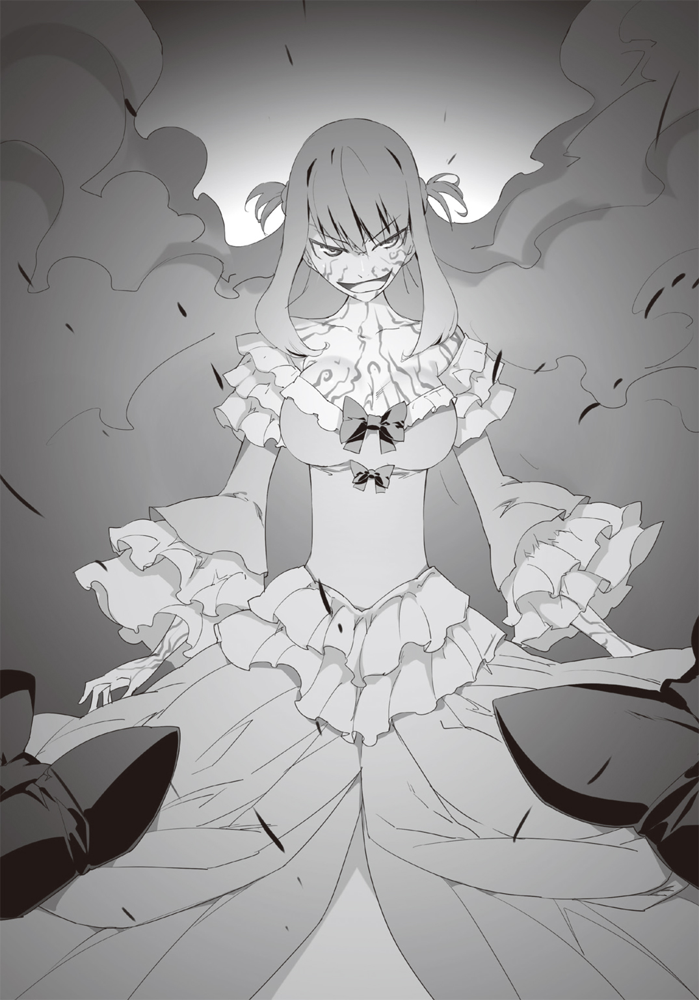
ああ、もう！ この拘束具がなければ！
『愚かだな。......消えろ』
魔神が小さく呟いた。
『【炎よ、爆ぜろ】』
瞬間、極大の炎が生み出され、それは真っ直ぐにこちらに向かってくる。
ダメだ。手が動かせない以上、防御魔法も使うことができない！
「リョウマ――ッ！」
アイリスの嘆くような呼び声が、部屋中に響いた。
――だけど、放たれた火球はオレに当たることなく、その眼前で打ち砕かれる。
『......なに？』
訝しがるように目を細めた魔神に、対抗するものがあった。
『てめえ！ 兄弟に手出しはさせねえぞ！』
マンゲツ！ そうか！ お前がいたな！
オレの前には、マンゲツによって作られた最高レベルの魔法障壁ができていた。
『忘れてもらっちゃ困るぜ、兄弟。さっきは不覚をとっちまったが、もう二度とてめえを窮地には立たせねえ！』
「......ああ！」
頼りにしてるぜ、マンゲツ！
『月輪の鎧か。下らん。我の創りし道具に過ぎぬお前が、逆らうか』
『ほざけ！ おれの主はグレディスの旦那だ。間違ってもてめえなんかじゃねえ！』
『あれは既に我が傀儡であった。お前が接していたのは、ほんの少し、我が戯れに残した人格の欠片に過ぎない』
『たとえそうでも、おれが仕えていたのはガルフレアの皇帝、グレディス＝ナクナ＝フェルモント、ただ一人だ！ 旦那の意識を奪い、好き勝手やりやがったてめえを、おれは絶対に許さねえ！』
『あの暴走が我のせいだと言うのか。笑わせる。我はグレディスの欲望を増幅させる手助けをしたにすぎない。あの男は望んで我に食われ、その意志を委ねたのだ』
『うるせえ！ それを後悔していた旦那を......てめえは、無理矢理に戦わせたんだ！』
『......やれやれ。たかが道具が少し喋り過ぎだぞ』
魔神が両手を、まるでオーケストラの指揮者みたいに振り上げた。
『【我、ここに連鎖する混沌の破壊を授ける】』
周囲に、次々と魔法が生み出されていく。火や雷や風や氷、一つ一つは小さいが、無数に存在する現象――刹那、その全てがオレに向かって襲来してきた。
『うおおおおおおおおおおおおッ！』
マンゲツはそれを前面から受け止めた。激しい音を立てながらも、障壁は連撃を受け止め、立て続けに無効化していく。
『よく耐えるものだ。しかし、所詮は我の創りだしたもの。主に敵うと思うか』
指を振り、新たな魔法を作りだす魔神。それは、まるで夜を懲り固めたかのような漆黒の不安定な塊だった。
『――【砕け散れ】！』
投擲した魔法が、マンゲツの展開した障壁に正面からぶち当たる。
『その程度の力が、このおれに効くかああああ！』
マンゲツが吼える。オレもそう思っていた。今までの攻撃に耐えた壁が、たかだか一発ごときでどうにかなるはずもないと。
その黒い塊が――瞬時に膨張するまでは。
『な......に......』
マンゲツが呟いた直後。――途方もない爆発が巻き起こった。
とてつもない衝撃が弾け、オレは自分の体が後ろへと吹き飛ぶのを感じる。
そう。ダメージを受けたのだ。マンゲツの障壁が......魔法を防げなかった。
「がはっ......！」
背中を壁に打ちつけ、オレは力が入らず、そのままずるずると床に腰をつける。
遅れて、背中がとんでもなく痛くなってきた。
「い、今の魔法は、なんだ!?」
アイリスが戸惑いの声を上げる。
「......油断してた。そうだ。お前にはそれがあったんだったな」
オレは、痛みを堪えながら呟いた。三年前にも、苦労させられたんだ。
「【混沌魔導】......！」
それは、魔神だけが使える究極の魔法。
『そう――その通り。我が人間どもに教えた力......それは火、水、土、風、雷を中心とした、属性を操る術。そして自らの体を守り、癒すもの。しかしもう一つだけ、全く異なる系統を持つものがある。それこそが、混沌魔導だ』
有り体に言ってしまえば、火でも水でも土でも風でも雷でもなく、魔力そのものを単純な破壊エネルギーとして転換して発動するものである。
効果が一辺倒で応用が利かないが、その分とんでもなく威力があり、しかも、防御魔法などでは打ち消すことができなかった。
まさに世界に混沌を齎すためだけに存在する、全ての魔法の上位に存在するものである。
言い伝えによれば、人間に教える前にアラムヴェルトによって封印されてしまったため、結果的に魔神だけがもつものになってしまった、ということだ。
『くっ......ちくしょう！ またかよ！ またおれは役に立てねえのかよ！ ああ、豚だ！ おれは最悪の豚野郎だ！』
マンゲツが自嘲するが、そんなことはない。お前は今まで色々と助けてくれた。今回は相手が悪かっただけの話だ。
『つまらん余興だったな。さあ......かつて我を打ち倒した憎き男よ。汝の助力となった女の手によって、微塵となるがいい』
魔神が心から楽しそうにそう言ってきた。その手に、先ほどと同じく闇の塊が形を成していく。
「......随分とオレを恨みに思ってるんだな。そんなにただの人間にやられたのが悔しかったのか？」
オレは軽口を叩きながら、打開策がないかを頭の隅で探し続けていた。
それを知ってか知らずか、魔神が乗ってくる。
『ああ......そうだな。あれは驚いた。精神体としてしか存在できぬ身とはいえ、まさか、人間如きが我と同じほどの魔力を有し、正面から渡り合うとは。アラムヴェルトに敗れて以来、久しく味わったことのない屈辱だったぞ』
「また同じことが起きるかもしれないぞ。気をつけなくていいのか？」
話しながら、オレはじりじりとした焦りを感じていた。
ほんの少しでもいい。この場を逃げ出せるだけでもいいから、隙が欲しい。
そうすれば、まだ何かの手は打てるのに......！
『もちろん、気をつけている。故に汝はここで確実に消しておくのだ』
一歩、魔神がこちらに近づく。今この瞬間、オレが生きているのは単なるこいつの気まぐれに過ぎない。その気になれば、容易に殺されてしまうのだ。
その事実が、ぞわりとした寒気を生んだ。
――だが、瞬間。
「......ッ！」
鋭い気合の声と共に、入り口から走る影があった。
獣の耳と尻尾をなびかせる姿は――ロザリだ！
彼女は、大剣を掲げ虚空に銀閃を煌めかせた。
それは、魔神を切り裂かんとして鋭利な軌道を描く。
『なに......!?』
でも、その直前に魔神は振り返り様、魔法を発動していた。
中空を貫く氷の礫が、ロザリの身を穿つ。
攻撃を中止し、即座に両腕を交差して防御の体勢を取った彼女は、それらを全て受け止めて尚、微動だにしなかった。
「今だ。――リョウマ！」
短い言葉の指示。オレは生じた隙を見逃さず、即座に反応した。
「うおおおおおおおっ！」
重過ぎる枷に捉われたまま、強引に手を持ち上げた。ふらふらとして、まるで狙いが定まらない。......それでも。
「【空よ、鋭き刃となって斬り裂け】！」
狙いを定めると、一陣の疾風波を発生させ、解き放った。
だが――それは容易く魔神にかわされ、そのまま背後へと突き抜けていく。
『無駄な足搔きを......』
魔神が、愚かさを嘲るように口元を歪める。
『――死ね』
直後、宣告と共に、オレに向けて混沌魔導を発動した。
闇が音もなく、オレの首を狩る死神のように迫りくる。
万事休す。誰がどう見たって、そんな場面だ。
もちろん、魔神とて、そう思っているはずだった――。
「【光よ。我が手によって集結し、敵を倒す剣となれ】！」
――でも。
その時、聞き覚えのある声が高々と響き、魔神の背後で真っ白な光がスパークした。
それはオレの見ている前で凝縮し、丁度、長剣を思わせるような姿となる。
――貫通。
『ガアアアアアアアッ！』
突如として現れた光の剣は、魔神の体に、真っ直ぐに突き刺さった。
『こ、これは......輝術......!?』
初めて苦悶の顔を示し、魔神は振り返る。
「リョウマから離れろ、下郎め！」
アイリスだった。彼女は手に光を収斂させ、先ほど見せた剣を作りだす。
『お......前......神族か......！』
荒く息をつきながら、魔神が憎々しげな口調で吐き捨てた。
「リョウマばかりに気を取られ、私に背を向けていたのが仇となったな。輝術は直接的な攻撃力はないが、お前のように魔力の塊ともいうべき存在には実によく効くぞ！」
「ナイスだ、アイリス！ これならガーネットの体を傷つけずに済む！」
オレの賞賛に、アイリスは微笑んだ。
『お前......あの魔法は、我ではなく......！』
怒りを込めた声で魔神が言ってくる。そう、その通りだ。
あの風の魔法は外したんじゃない。――はじめから、後ろにいるアイリスの拘束具を破壊するためのものだったんだよ！
『おのれ......ッ！』
魔神が動こうとする。でもそれより前にアイリスは再び唱えた。
「【黄金の輝きよ、星となって敵に降り注げ】！」
彼女の頭上にできあがった光の礫が、断続的に魔神の体を穿っていく。
『オオオオオオオオオッ！』
直撃を受けると、ガーネットの体を借りた魔神は床を転がり、悶え苦しんだ。
それもそのはずだ。いわば魔力によってできた生命体ともいうべき魔神にとって、輝術による攻撃は文字通り身を削られるような痛みを伴う。
その間にこちらに歩み寄ってきたロザリが、魔法を使ってオレの拘束具を破壊してくれた。
「ありがとう、ロザリ。だけどどうして......？」
「帰りが遅いから迎えに来た」
「そうか。でも、ガーネット相手によく剣を向けられたな」
「悪いが少し様子を観察させてもらった。その上での行動だ」
納得。全てを把握した上で隙を作ってくれたということか。
「よし......今のうちだ。逃げるぞ、アイリス、ロザリ！」
オレはアイリスの手を引いて、第一宝物庫から急いで出ていった。ロザリも後ろからついてくる。
だけどすぐ背後で派手な音が響き、振り返ると、魔神がドアを破壊して出てくるところだ。もう受けたダメージが回復してしまったらしい。
「どうする、リョウマ。私の輝術だけでは魔神を打ち倒すことができないらしい」
かといって、普通の魔法ではガーネットを傷つけてしまうか......。
『なにか方法はねえのかよ、兄弟。てめぇ、前にグレディスの旦那......いや、魔神と戦った時に使ってた武器があるじゃねえか』
「......リベリオンか」
確かにあれがあれば、魔神に対抗できるだろう。
「だがリョウマ、その剣とて物理的な衝撃を発生させるのだろう？ 無闇に使えばソレイユ王女の命すら危うくなってしまうぞ」
アイリスの言うことは尤もだ。ただ、
「......そうとは限らない。リベリオンがもつ、もう一つの力を使えば」
後ろで何かが爆発するような派手な音が鳴った。魔神が手当たり次第に魔法を使い始めたのだろう。
「もう一つの力......？」
アイリスが必死に走る中、息を切らしながら問いかけてきた。
「前にも言ったけどリベリオンは使い手の魔力に応じて力の強弱を変える。だけどそれとは別にある能力が備わってるんだ」
長い廊下を進みながらオレは応える。
「魔力を輝術に転換して放つ。――そんな能力だ」
「なんだと......？ そんなことができるのか!?」
「リベリオンを造ってくれた種族の中には神族もいて、彼らの協力もあって対魔神用にそういう機能がついたらしい」
尤も、どうやってできあがったのかはオレの知るところではないが。
「そいつを使えば、さっきアイリスがやったように、ガーネットの体に傷をつけずに魔神を追い詰めることはできる」
「そ、それは素晴らしいぞ、リョウマ！ ではそのリベリオンを使おう！」
「ああ。そうしたいところだが......問題が一つある。加えてそれは、この期に及んで解決が相当に難しい代物だ」
ほとんど不可能に近いと言ってもいいかもしれない。
「ど、どういうことだ。なにが問題なのだ!?」
「――どこにあるかわからないんだよ」
この城のどこか、ということまでは多分、間違いないだろうが。
仕舞った正確な場所が全くの不明だ。
宝物庫にあるのかもしれないが、魔神契約の呪文が書かれた魔導書があったところにわざわざ『第一』とつけるところを見ると、多分、他にもあるのだろう。
でも、果たしてそれが二つなのか三つあるのかはたまたもっとたくさんあるのか、こっちにはまるで見当がつかないのだ。
「そ、そうか......さすがにいちいち探している余裕はなさそうだな」
「悠長に待ってくれるほど、魔神も話のわかる奴じゃなさそうだしな」
『兄弟が剣を預けた時、どこに保管するとか、チラッとでもなにか聞かなかったのか？』
そう言われてもな――と、オレはマンゲツの言葉に薄れかけた記憶を探る。
「......ダメだな。特に覚えはない」
『おい！ 頼りねえな！ しっかりしろよ、兄弟！』
無茶を言うな。オレだってまさかこんなことになるとは思わなかったんだよ！
「リョウマ、本当に何もわからないのか？ いつまでも逃げているわけにもいかないぞ」
「......まあ、何もかもお手上げってわけじゃないんだけどな」
ただ、それをするのにも条件があるんだ。
「リベリオンは魔法が込められた剣だから、マンゲツみたいに意志が宿ってる、まあ、喋ることはできないんだが......その代わり、一度力を使いこなせば、そいつを持ち主と決めて、付き従ってくれるんだ。そうしたら――」
「そうしたら、なんだ!?」
期待に満ちた目をしたアイリスにオレは言った。
「呼べば、手元まで飛んでくる」
『いいじゃねえか！ それだ！ なんでもっと早く言わねえんだよ！ さあ、呼べよ、兄弟！ てめえの昔の相棒を！』
「......上手くいくといいんだけどな」
オレは頭を搔きながら、やってみるだけやってみるかと、声を張り上げた。
「――来い！ リベリオンッ！」
その時、どこからか風を切るような音が聞こえてくる。
するとまるで弾丸のような速度で、どこからか現れた銀の光がオレの前に突き刺さった。
それは一本の剣。持ち主の声に応え、再び姿を見せてくれたのだ。
リ、リベリオンッ！ 来てくれたのか！ 嬉しいぞ！
「......ってなればよかったんだが」
世の中、そんなに甘くない。
『おい、どうした、兄弟。ちっとも反応がねえじゃねえか！』
そう。さっきのは『そうなったらいいのに』という妄想だ。実際、リベリオンは影も形も存在していなかった。
「やっぱりダメか......」
「どういうことだ。なにが原因だ!?」
アイリスがすわ緊急事態かとばかりに焦るが、オレにとっては予想できていたことだ。
「実はリベリオンを呼べる範囲、かなり限られてるんだ。割と結構、近くにいないとこっちに来ない」
『それ飛んでくる意味あんのか!?』
うるさいな、マンゲツ！ オレだってそう思ったよ！
「とにかく！ リベリオンのあるところを把握しない限りはどうにもならん」
「むう、参ったな......」
アイリスが唸る。全くだ。
どこか保管場所を示した地図でもあればいいんだが、都合よく発見できるとも思えなかった。
「ロザリは何か知らないか？」
オレが尋ねると、それまで黙っていたロザリが口を開いた。
「リベリオンの扱いは王とガーネットが決めた。どこにあるかはわからない」
......ダメか。どうしたものかな。
「ただ」
と、そこでロザリは付け加えた。
「宝物庫は基本的にある類型に基づいて分けられている。それぞれの宝に合った場所が用意されているんだ」
「具体的に、どういうことなんだ？」
「それは――」
と言いかけたところで、ロザリの背後で爆発が起こった。
彼女は目を見開き――そのまま、ぐらりと倒れる。
「ロ、ロザリ!?」
慌てて足を止め、オレは振り返ると、ロザリの様子を確かめるためにその場でしゃがみこんだ。彼女の身に着けていた鎧が砕け、内側の背中が大きな火傷を負っている。
「......逃げ......ろ......リョウマ......」
ロザリはか細い声でそう言うと、意識を失った。
『そろそろ追いかけっこも終わりにするとしよう』
濁ったような声に顔を上げると、魔神に意識を乗っ取られたガーネットが、こちらに向かって歩み寄ってくるところだ。
オレはロザリを担いで逃げ出そうとして、前を向き、
「......しまった」
会話に夢中でとんでもない失態を犯していたことに気づいた。
目の前には、頑丈そうな扉が厳然と聳えている。行き止まりだ。
ノブを握ってみたが、やはりというべきか、しっかり鍵がかけられていた。
「くっ......！ 【光よ。我が手によって集結し、敵を倒す剣となれ】！」
アイリスが再び輝術を行使する。凝縮された光の束が刃となって、魔神へと放たれた。
『無駄だッ！』
だけど、大声と共に魔神が腕を振るうと、たったそれだけのことでアイリスの攻撃は跡形もなくかき消されてしまう。
「私の輝術が......!?」
『油断していた時ならいざ知らず、いかにアラムヴェルトの威光を帯びているとはいえ、小娘一人の力が我に通じるはずはなかろう』
こちらを馬鹿にしたように鼻を鳴らす魔神。その手に、闇の塊が蠢いていく。
『二度とふざけた真似は許さん。――消えろ』
死の宣告と共に、こちらに向かって、混沌魔導が牙を剝いた。
『なめんじゃねえ！ 根性見せたらあああああ！』
マンゲツが吼え、魔法障壁を張る。それは相手の力と拮抗するように激しい火花を散らし、その進行を防いだ。
『はははは！ どうだ！ おれが本気になればざっとこんなもんよ！』
『......よく喋る道具だ』
魔神を宿したガーネットの口元が、その時、歪められた。
『すぐに、黙らせてやろう』
こちらに差し出してきた両の掌。そこへ――同時に二つの漆黒が生み出される。
『な、なんだと!? 聞いてねえぞ、そんなもん！ 卑怯だぞ、コラァ！』
文句を言うマンゲツに何も返さず、魔神は二つの混沌魔導をこちらに投擲した。
衝突。途方もなく莫大な力が鼓膜を打ち破るかのような轟音を鳴り響かせた。
『負けるかァァア――ッ！』
マンゲツは耐えた。魔法障壁を張ると、自身に備わったもの全てを投じるかのように混沌魔導に対抗し続ける。
『ぬおぉぉおおおおぉぉ！ 男見せたれやあああ！』
その頑張りは誰がどう見たって表彰もので、もしかしたら本当にこのまま力を打ち消してくれるんじゃないか、そんな風にも思えた。――だけど、
『くっ......ぐっ......！』
マンゲツは少しずつ苦しそうな声を漏らし始め、遂には、オレ達に向かって言った。
『く......そっ......！ 兄弟......お嬢......！』
途切れ途切れに、それでも、希うようにして。
『すまねぇ......！ 逃げろォ――ッ！』
障壁が、粉々に砕け散る。マンゲツの殺し切れなかった衝撃が、オレ達目がけて襲いかかってきた。
「――アイリスッ！」
咄嗟にオレは、アイリスを庇って混沌魔導に背を向ける。
特に何かを考えていたわけじゃない。ただ頭の中にあったのは、彼女を守らなきゃいけないという、それだけのことだった。
死んじゃいけない。
そう痛切に思ったのだ。
アイリスを――こんなところで、死なせるわけにはいかない！
「ああああああああああッ！」
全身を言い表せられないほどの痛みと衝撃が苛んだ。オレは自分の口から絶叫が迸るのを聞きながら、そのままアイリスを自分の懐に抱き、自分の体が無造作に吹き飛ぶのを感じた。
壁に激突し、頑強な素材を打ち砕きながら、更に内部へと転がり込んでいく。
その全てが自分の身に起こっているとは思えない、どこか非現実的なものとして認識された。
やがて、気がついた時には――オレは知らない部屋の中で、床で仰向けになっていた。
「リョ、リョウマッ！ 大丈夫か、リョウマッ！」
アイリスがオレに呼びかけている声が、遙か遠くから聞こえてくる。
どうやら、耳をやられてしまったらしかった。
いや、それだけじゃない。体が全くといっていいほど動かないのだ。
オレは一体、どうなってしまったのだろうか。
痛みはない。でもそれが、逆にある種の不安をこちらに抱かせた。
......もしかして、死にかけてるのか？ オレ。
『兄弟！ おい、しっかりしろ！ 大丈夫だ！ 意識をしっかりもて！』
マンゲツが励ましてくれるが、それはなんていうか、相当やばい奴に言う台詞じゃなかったか。
無理矢理に目を開けると、薄らとした視界の中に、涙ぐむアイリスの顔が見えた。
その時オレは、場違いにもこう思う。
ああ、この子......やっぱり可愛い。
可愛くて、しかも責任感が強く、努力家で、誰にでも分け隔てなく優しい。
......そんな彼女を守れて、本当によかった。
「嫌だぞ！ リョウマ！ 私に死ぬなと言ったではないか！ それなのにお前は何故こんな無茶をするんだ！」
オレの体に縋りつき、アイリスはその手で治癒魔法をかけながら、泣いた。
「バカッ！ リョウマの......大馬鹿者ッ！」
ああ、そうだ。馬鹿だ。
結局、こんなことしたって彼女を悲しませるだけなのに。
馬鹿馬鹿しいにも、ほどがある。
『......それにしても、解せぬ男だ。三年前も異世界から召喚され、グレディスと――いや、帝国と戦い、そして今度はその支配者の娘に味方する』
魔神が心底から理解できないというように問いかけてくる。
『汝は――一体、何のために戦っている？』
......それはお前、決まってるだろ。
三年前だって、そうだった。
英雄だとか祭り上げられて、打倒皇帝だとか血気に逸る奴らに頼まれて。
戸惑い、突然のことに迷っていたオレがそれでも決意を固めた最初のきっかけは、ガーネットがいたからだった。
真剣に、心から皆を救いたいと願った彼女の姿を見たから。
次にそんなガーネットが守りたいと思う、この世界のことを知ったから。
オレは、自分にやれることがあるなら、手を貸したいと思ったんだ。
あの時と変わってない。
自分でも馬鹿だと思う。そんなもの、理由にもなってない。それでも。
「男だからさ......」
――それでも。
「困ってる女の子は......守ってやりたくなるんだよ」
たった、それだけのことだった。
『......下らん』
魔神が一歩、また一歩とこちらに近づいてくる。
『こんな愚かな人間に一度でも膝を屈したことが腹立たしい。......汝を滅して、全てをなかったことにしてくれる』
「リョ、リョウマに近づくな！」
アイリスがオレと魔神の間に立って両手を広げる。
「やめろ......アイリス......！」
オレはか細い声を上げたが、彼女は首を何度も横に振った。
「さ、先ほど言われた言葉をそのまま返すぞ、リョウマ！」
そして、激しく、オレを叱りつけるように言い放つ。
「お前を失って、私一人だけ残されたところで――このまま旅を続けることなどできん！」
「......ぐっ」
ああ、そうだ。わかってる。お前がそういう奴だってことくらい。
だけど――だからって、みすみす目の前で殺させてたまるかよ！
「......動け......」
動けよ、オレの体。いつまでも寝転がってる場合か。
皇帝を倒した英雄？ 笑わせんな。
ここで立ち上がらなきゃ――わざわざ異世界に呼ばれた価値がないだろうが。
それに、わかってるのか、お前。
お前はまだ、ガーネットに、大事なことを伝えてないんだ。
それを成し遂げる前に――彼女を魔神なんかに奪われたままで、いいのか!?
「く......あぁぁぁぁあッ！」
オレは気が遠くなるような痛みの生じる体に鞭を打って、強引に立ち上がった。
マンゲツが大部分の混沌魔導を防いでくれたのと、先ほどアイリスから治癒魔法を受けたためだろう。ほんのわずかだが、無理が利くくらいの余力は残っていたようだ。
「邪魔するな......魔神......！」
オレはふらついた足取りで歩き出し、アイリスの隣に並ぼうとする。
「オレと......アイリスは......まだやることがあるんだ......」
帝国を復興させる。そのためにはまだ多くの国を巡らなくてはならなかった。
「それだけじゃない......ガーネットが......オレの返事を待っている......」
だから、意地でも食い下がる。
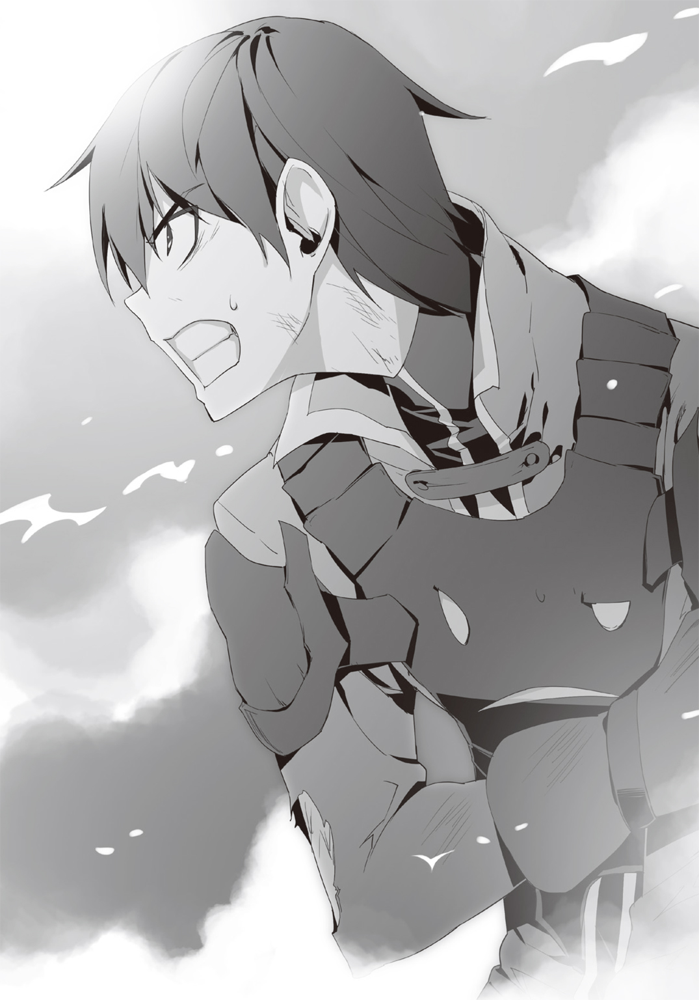
「こんなところで......お前程度の奴に......足止めを食ってたまるか......！」
もうお前の時代は終わったんだ。とっとと元いたところに戻れよ、化物！
「......見てろ......今すぐ、お前を打ち倒してやる......ッ！」
だけど――威勢のいい啖呵を切ったあと、オレは、体を制御する力を失った。
部屋の中に仕舞われていた数々のものを巻き込みながら、倒れ込んでいく。
『クク......ハハハハハハハハハ！』
そんなオレを見て、魔神が哄笑を上げた。
『愚かだな。全くもって愚かだ。間抜けな姿に免じて、一瞬で終わらせてやろう』
アイリスは未だ、攻撃を全身で受け止めるかのような体勢で佇んでいる。
「......なんでだよ」
ここで一矢報いなくて、どうするんだよ、オレ。
「諦めんな！ 戦えよ......ッ！」
オレはもう一度立ち上がろうとして、体を起こした。
でも、意に反してすぐに脱力すると、そのまま横に転がってしまう。
目の前に、部屋の中にあったものが散乱しているのが見えた。
『ふん。後生大事に様々な物を集めているようだが、我からすれば全ては塵だな』
足元に転がった銀の兜を、魔神が蹴る。次いで指先を立てると、黒々とした球体が現れ、渦を巻いた。
オレはその光景を、ぼんやりと眺める。
全てが、終わりに向かって進もうとしていた。
あらゆるものは止めようがなく。ただあるがままに用意された結末へと行き着くだろう。
オレ達の死という、最悪のエンドクレジットに。
「......無念だ。帝国の民に申し訳がない」
アイリスは俯き、唇を嚙み締めた。
「まさか、父上を脅かした魔神に、私までもが敗れるとは......！」
ああ、そうだな、アイリス。
アラムヴェルト。お前が神様だっていうなら、この運命はあんまりだ。
あんまりにも――救いがなさ過ぎる。
暗澹としていたオレの前には、数多の武器や防具が横たわっていた。どうやらここは、何かの倉庫らしい。どれも高価そうな金や銀で作られていた。
だけど普通の相手ならいざ知らず、そんなものでは魔神に傷一つつけることはできない。
この中のどれを手にしたところで、何の意味もなさなかった。
故にオレは、絶望的な気分で視線を這わせていき――。
『お前も塵に埋もれて、同じ存在と化すがいい！』
魔神が遂に混沌魔導を発動したその瞬間、目を見開いた。
――宝物庫は基本的にある類型に基づいて分けられている。それぞれの宝に合った場所が用意されているんだ。
ロザリの言葉を思い出す。そういえば第一宝物庫にはたくさんの装飾品や調度品があった。
そしてここには――ここには、何がある？
「......どけ、アイリス」
オレは、床に手をつき、掠れた声で言った。
「何を言う。私は絶対にここを動かないぞ！」
「言うことを聞け！ 危ないんだよ！」
「嫌だ！ お前だけを犠牲にするわけには......！」
「だああああああああ！」
オレは正真正銘、最後の力を振り絞って体勢を立て直した。
「そういうことじゃねえんだよ！」
「......え？」
震える手を伸ばし、息を吸い込む。
『――消えろ』
瞬間、黒々とした球体がアイリスを屠ろうとした。――だけど。
「こんなところに眠ってたのかよ、相棒！」
オレは、余裕の笑みを浮かべながら、その言葉を解き放つ。
「来いよ――【革命の刃】ッ！」
それが、全ての事態を打開する切り札となった。
部屋の中を閃光が走り、闇の塊を撃ち貫く。
それはその場で爆発し、アイリスは衝撃の余波でこちらに押されてきた。
彼女の体を受け止め、オレは、飛んできた光を――摑み取る。
『......なんだと......!?』
魔神が動揺を示す。当たり前だ。オレだってびっくりだ。
オレの手の中には、今、ひと振りの剣が存在していた。
銀でもなく金でもない金属でできた刃。鍔に埋め込まれた宝玉が、紅色の輝きを示す。
それは正真正銘、本物の、オレの武器。
かつて魔神を破った、究極の魔法剣――リベリオンだった。
「リョウマ......ッ！」
アイリスが満面の笑みで喜びを表す。
オレは剣の柄を握り、目覚めの言葉を言い放った。
「リベリオン！ オレの魔力を輝術に変えろ！」
即座に命令を受諾したリベリオンがその身を震わせ、多大な輝きを放出する。
白き光が剣身から発せられ、部屋中をあまねく照らし出した。
「形勢逆転だ！ 魔神！」
オレは、上段に構えたリベリオンを――そのままの勢いで、振り下ろす。
「終わるのは、お前の方だ――ッ！」
熾烈なまでの光の裂波が迸る。オレの中にある魔力は、アラムヴェルトの齎す光となってガーネットの体に宿った魔神を切り裂いた。
『グ......アアアアアアアアッ！』
直撃を喰らった魔神は頼りなげな足取りを見せ、そのまま場に蹲る。
『ああ......馬鹿な......この程度で......我が......』
するとガーネットの体から、黒い霧が噴出し、それは空中で一つの姿を形成した。
それは悶えるように身をよじり、やがて、
『ギィアアアアアアアアアアアッ！』
世にもおぞましい絶叫を上げて――欠片も残さず消滅する。
あとに残されたガーネットは、薄らと目を開き、
「リョウマ......様......」
オレの名前を呼ぶと、すぐに気を失った。
「......。......お、終わった」
かなりギリギリだったけど、倒すことができた。
「リョウマ......！ リョウマ、やったぞ！ お前は凄い！ 再び魔神を倒したのだ！」
アイリスが諸手を上げて、抱きついてくる。
......いや、まさかオレも、たった一撃で解決できるとは思わなかったぞ。
ひょっとしたら、アルフレンの魔力が弱かったから、現れた魔神も不完全な状態だったのかもしれない。
『さすがおれの兄弟だぜ！ なあ、おい、ここは格好よく勝利宣言といこうぜ！ さあ、存分に張り切ってやれよ！』
「......は、はは」
悪い、マンゲツ、そんな余裕は――ないかもしれない。
「ごめん。......さすがに限界だ」
そう口にするので精一杯で。
オレは、その場で派手に倒れ込んだ。
「......お、おい、リョウマ!?」
アイリスの心配する声に応えたかったけど。
オレは、自分の意識が闇に落ちていくのを感じていた。
最終章 小さい。けれど偉大な一歩
誰かが呼んでいる気がする。
母親が、いつまで経っても起きてこないオレに怒っているのだろうか。
だとしたら、早く目を覚まさないと、朝食を食べながら延々と文句を言われる羽目に遭ってしまう。ああ、あと五分は寝ておきたかった......。
そんなことを考えながら、重い瞼を上げると――二人の女の子がいた。
どちらも残っていた眠気を吹き飛ばしてしまうほど、衝撃的な美貌を持っている。
一流の女優より、華やかなアイドルより遙かに整った造形に、オレは目をしばたたかせて。
「......あれ？」
状況が上手く把握できずにそんな声を上げた。
その時。
「リョウマ様ッ！」「――リョウマッ！」
女の子二人が、同時にこちらの懐へ飛び込んでくる。
「おぶっ！」
いかな可愛らしい子達であるとはいえど、ダブルでのタックルは少々堪えた。
体が大きく沈み、自分が豪華なベッドの上で寝ていたことを今更に知る。
「リョウマ！ よかった！ このまま目を覚まさないのではないかと思ったぞ！」
「ああ、本当に、ご無事で何よりです！」
オレを左右から抱きしめながら、彼女達は交互に言ってくる。
そこでようやく、意識がはっきりとしてきた。
そうだ。オレは異世界に召喚されて、魔神に操られたガーネットと戦って、すんでのところでリベリオンを使ってなんとか事態を上手く収めて......。
あれ、それからどうなったんだ。
「リョウマ様、あなたは七日も眠り続けていたのですよ」
蜂蜜色の長い髪を持つ女の子、ガーネットが目尻を拭いながら口元を緩める。
「受けた傷も深く、治療魔法で回復させるのにも随分と時間がかかった。......一時はどうなることかと思ったぞ」
胸を撫で下ろしたように、黒髪の女の子、アイリスがそう言ってきた。
「そうか。やることやったらそのままぶっ倒れたんだっけ......」
どうやら相当に危ない状態だったようだ。
「アイリスとガーネットに怪我はないのか？」
現状を確認するとそちらの方が気にかかってきた。
でもオレの質問に何故か二人は顔を見合わせ、やがて、さも可笑しいことであるように一緒に噴き出す。
「ん？ ん、どうした？」
なにか変なこと言ったか？ オレ。
「本当にお前は......他人のことばかり心配しているのだな」
「ご心配なく。わたくし達は大事ありません」
アイリスとガーネットが順に言って、笑顔を見せた。
「そうか。それはよかった。いやあ、それにしても結構やばかったな」
まさか魔神が復活するとは思わなかった。あそこでリベリオンがなかったら、確実にやられていただろう。
「......本当に申し訳ありません、リョウマ様」
そこでガーネットが肩を落とし、深く頭を下げてきた。
「まさかお兄様があのような考えを持っていたとは露知らず、わたくしはなんと恥ずかしい真似をしたのでしょう。あろうことか、リョウマ様を疑ってしまうなんて」
「いや、まあ、無理もないって。オレの言ったことも無茶だったしな」
そりゃ、かつて一緒に皇帝を倒したオレが、今度は帝国の味方になって現れたとしたら、混乱することだろう。
「いえ。もっときちんとお話をすべきだったのです。そうすればリョウマ様が操られていないことなどわかったはずです。......フェルモント皇女にもなんとお詫びすればいいか」
「それはもう散々話し合ったことだ。過ぎたことをとやかく言っても始まるまい」
アイリスが首を振ってガーネットをとりなす。
「リョウマの言う通り、かつて父上の行ったことを考えれば、ソレイユ王女の対応は尤もだ。私の方こそ、こちらの行ったことで、ティタニアを我が国の二の舞にするところだった。本当にすまない」
「いえ、それは全てお兄様――アルフレンの邪な心が招いたことです。本当に、どうしてあんなことを......」
「......まあ、わからないでもないけどな」
ガーネットの言葉にオレは頭を搔いた。
「オレ自身、元の世界じゃ何の取り得もないような奴だしさ。ガーネットみたいに頭がよくて才能もある子を見てると、嫉妬みたいな感情が浮かんでくることもある」
だからといって、あんなことを仕出かしていいわけじゃない。
ただ――大き過ぎる力というのは、グレディス同様、人の弱い心を刺激し、その裏に潜む欲望を増幅させてしまうものなのかもしれなかった。
「何を仰います。リョウマ様は、素晴らしいお方ですっ！」
ガーネットが突然、そこで身を乗り出すように言ってくる。
「その通りだ。お前ほど尊敬に値する男はいない！」
アイリスもまた腕を組み、同意するように何度も頷いた。
「リョウマ様はこれで二度も世界を危機より救ったことになるのですよ。ああ、なんと素晴らしいことでしょう！」
「さすが英雄と呼ばれただけのことはある！」
......いや、そう真正面から褒められるとさすがに照れるんだが。
なんとなく背筋がむず痒くなってくる。
『素直に受け取っとけよ、兄弟。元の世界じゃどうだか知らねぇが、アラムヴェルトじゃお前は間違いなくすげぇ奴だ』
最早お馴染みとなったその声に視線を傾けると、やっぱり、そこにはテーブルの上に載った黒い鎧があった。いや、いた、というべきだろうか。
「マンゲツ！ お前も大丈夫だったのか！」
『当たり前だ。兄弟こそ、ずーっと目を覚まさないからやきもきしたぞ。お嬢もそこのガーネットも、これでもかってくらい泣き続けてたんだからな。全く、罪な男だぜ』
「マンゲツ、余計なことを言うなッ！」
「そ、そうですよ！ 何もリョウマ様に教えなくてもいいことです！」
アイリスとガーネット、頰を染めた二人から交互に責められてマンゲツは高々と笑った。
どうやらオレが眠っている間に、ガーネットはマンゲツを紹介されたらしい。
「......それにしても、アルフレンさんとモーヴェのことは残念だったな」
まさか、魔神に殺されてしまうなんて。
自業自得、なんて言ってしまえばそれまでのことなのかもしれないが。
それでも――やっぱり、嫌な気分は拭えなかった。
「ええ......。モーヴェは有能な国伯で、父上も頼りにされていました。それが、あんな野心を持っていたなんて」
ガーネットは嘆くような息をつく。
「それに......アルフレンお兄様も。たとえ半分しか血が繫がっていなかったといえど、わたくしの兄に代わりはありません。直接の国政には関わってはおりませんでしたが、若輩者のわたくしに何度も的確な助言をしてくださり、本当に感謝していました。幼い頃はわたくしが眠るまで本を読んでくださったり、大きくなったあとも、お茶を飲みながら夜遅くまで夢中でお話ししたこともあります。それなのに......」
視線を落とし、込み上げてくる辛さが表情に出るのを隠すように、ガーネットは両手で自分の顔を覆った。
もしかしたら、無理矢理に忘れようとしていたことを、オレのせいで思い出させてしまったのかもしれない。
「ごめん、ガーネット、悲しませるつもりじゃなかったんだけど......」
「......いえ、よいのです」
しばらくしてからようやく顔を上げたガーネットは、もう、いつも通りの彼女に戻っていた。
「お兄様がああした考えをもってしまったのは、わたくしの気遣いが至らなかったためです。そのことを自戒とし――二度と同じようなことが起こらないようにしたいと思います」
......ああ、そうだ。
苦しみも、後悔も、必要以上に引きずらず、寧ろ前へと進む糧にする。
それが、ガーネットの強さだった。
「......よくぞ言ったぞ、ガーネット」
そこで掠れた声が響き渡る。
部屋の入口の扉が開かれて、そこから一人の男が姿を現したところだった。
傍にロザリを控えさせた彼が、こちらに向き直った時。
オレは目を丸くして、思わず声を上げていた。
「こ、国王様!?」
間違いない。ゆったりとしたローブに身を包んだその姿は酷く瘦せ細り、顔も少し落ち窪んでいたため、すぐには気づけなかったが。
ティタニアの君主、アルバート＝フルメ＝ヴェレイ＝ソレイユ、その人だった。
「いや、来るなら教えてくださいよ。びっくりするな......」
慌ててベッドから降りようと動きかけたオレを、アルバート王は制する。
「そのままでよい。ティタニアを救ってくれた英雄に無理をさせるわけにもいかん」
ガーネットとアイリスは慌てたようにオレから離れ、国王に向かって頭を下げた。
「......随分と瘦せられましたね。ご病気のせいですか？」
「うむ。とはいえ、幸いなことに今は随分とよくはなった。もう間もなく政務に復帰できるだろう」
それは何よりだ。大事に至らなかったこともそうだが......アルフレンさんを失った今、アルバート王にまでなにかあれば、ガーネットが立ち直れなくなってしまうところだ。
「ロザリも、傷はもういいのか？」
オレの問いに、ロザリは頷くことで返した。
「今回の一件、本当に世話になった。愚息が迷惑をかけたこと、わたしが代わって謝罪する」
アルバート王は、そう言ってこちらに一礼する。
「いやいやいや、何もオレに謝らなくても！ 本当、もう、終わったことなので。気にしないでください。......オレの方こそ、アルフレンさんを助けられなくてすみませんでした」
「いや――よいのだ。あいつの心根をはかることのできなかったわたしの落ち度だ。......ガーネットの言う通り、二度と同じことが起きぬようにしなければなるまい」
拳を固め、悔しそうに零すアルバート王。
「ガーネットを国王代理に据えたのは、立場上、そうするのが適していると思ったからだ。......しかしわたしとしては、アルフレンと共にティタニアを治めてほしかった。それが伝わらなかったというのは、残念でならない」
......なるほど。そういうことだったのか。
確かに、ガーネットはアルバート王の本妻の子だ。オレの感覚からすれば、能力があればそんなこと関係ないと思うけど、アラムヴェルトではそういうわけにはいかない。
時代的に中世に程近いこの世界では、血が何よりも重要になってくる。
どれほど優れた人でも、選ばれた家系の出でなければ、それに相応しい地位へ就くことは不可能だった。
それは間違っているとか、正しいとかじゃなくて――そういうものだ、と定義するしかないことだ。
もしかすれば将来的に変わってくるのかもしれないが、少なくとも異世界の人間であるオレがどうこう口を出すことじゃなかった。
「......何にせよ、クロセ殿だけでなく、フェルモント皇女にも無用な苦労をかけてしまった。どうか許してほしい」
「もうよいではありませんか、アルバート王。それに――結果的に話を聞き入れてくださったのです。私にはそれで十分です」
アルバート王に対し、アイリスが返した言葉に、オレは驚いた。
「え？ じゃあ......!?」
「あ......そうだったな。すまない。お前が目を覚ましたことが嬉しくて、つい伝えそびれてしまった」
失態を恥じるように頰を染めたあと、アイリスは自身の胸を叩く。
「うむ。そうだ。国王の計らいで――我がガルフレアは、正式にティタニアと協力関係を結ぶこととなった！」
「まじかよ！ やったな、アイリス！」
オレは、喜びを示すために両腕を上げた。
「話し合いの機会を持った結果、フェルモント皇女はかつての皇帝とはまるで違う人物であることがわかった。彼女とクロセ殿の導きにより帝国が生まれ変わるというのであれば、その復興に手を貸すことはやぶさかではない」
アルバート王がそう言って微笑む。
「ありがとうございます、国王様！」
「礼を言うのはこちらの方だ。クロセ殿がフェルモント皇女と共に訪れてくれなければ、わたしはずっと帝国のことを誤解したままだっただろう」
「......本当にそうです」
ガーネットがシュンとした顔を作った。
「それなのに、わたくしとしたことが、冷静さを欠いてフェルモント皇女とリョウマ様を追い返すような真似をして......」
「はいはい。落ち込むのはその辺でいいって」
このままだと堂々巡りになりそうな気がして、オレは苦笑する。
「過去のことをいつまでもほじくり返してたっても何も発展しない。それより今は、上手くいった今の先を見るべきだ。違うか？」
「......リョウマ様......」
ガーネットは目を瞬かせたあとで、ゆっくりと頷いた。
「......そうですね。先ほど言ったばかりです。もうやめましょう」
彼女は振り返り、アイリスと目を合わせる。
「フェルモント皇女。今までの確執や因縁は全て忘れましょう。これからは、帝国ガルフレア復興のため、我がティタニアは全力を尽くします」
「......ソレイユ王女」
アイリスはガーネットの言葉を嬉しく思うように、その口元に笑みを形作った。
二人は互いに握手をし合い、信頼関係を明らかにする。
......うん。色々あったけど――一件落着ってところかな。
「クロセ殿、傷は癒えたが、これからどうするのだ？」
王の問いかけにオレは首を傾げた。
「そうですね......。ティタニアとの協力関係は築けましたけど、残りの四大聖国にも働きかけなきゃいけません。明日にでもこの国を出ようと思います」
「え、そ、そんな！ 早過ぎます！」
ショックを受けたような表情で退くガーネット。
「もう少し、ゆっくりしていってください。せっかく......せっかく、三年ぶりにお会いできたのではありませんか！」
「オレもそうしたいところなんだけどな......。現状、帝国はかなり危ないんだ。一日でも早く色んな国から助力を受けなきゃいけない」
寂しい話だけど、旅の目的を考えれば仕方のないことだった。
「......そうですか......」
ガーネットは見てわかるほどに、落ち込んでしまう。......う、うーん。何か、凄い罪悪感があるぞ。
「......クロセ殿。そういうことであれば、頼みがある。聞いてくれるだろうか」
そこでアルバート王がオレに言った。
「え？ ええ、それはもちろん。......なんでしょうか」
応じたオレに、わずかな間を空けたあと、王は続ける。
「――ガーネットを、そちらの旅に同行させてほしいのだ」
「ええっ!?」
先に反応を示したのは、オレじゃなくて、ガーネットの方だった。
「ど、どういうことですか、お父様!?」
「ガーネット。知らぬことであったとはいえ、お前がクロセ殿やフェルモント皇女に礼を失した行動をとったのは事実。加えて、その結果、魔神契約の発動という事態を引き起こしてしまった。この責任を取るため、お前はクロセ殿の旅に付き添い、帝国復興の一助となれ。ティタニアの王女が味方にいるとなれば、他国もそうおいそれとは彼らを追い返したりはしないだろう」
「そ、それは、そうですけど......」
突然の展開に戸惑うガーネットを横目に、アルバート王は次にアイリスへと視線を移した。
「フェルモント皇女。クロセ殿が目覚める前、既にお話ししたことですが、帝国を救うという目的があったとはいえ、あなたは異世界召喚という禁呪に手を出した。相手が信頼のおけるクロセ殿であった故、滅多なことはないと、わたしはこれ以上何も申しませんが......。そのことを、快く思わぬ者もいるでしょう」
「......そうですね。その通りです」
覚悟している、という風にアイリスが顔を引き締める。
「そんな時、ガーネットがいれば必ず役に立つはずです。未熟な娘ではありますが......共に連れていってはもらえないでしょうか」
「それはもちろん、願ってもないお話です。ですが......仮にも一国の王女がそのような真似をして問題はないのでしょうか」
「ガーネットは強力な魔法が使える。それに――仲間にあなたと、何より英雄のクロセ殿がおられるのです。何があったとして、切り抜けられる。違いますか？」
「......そう......ですね」
アイリスははっきりとは応えないままに、俺の方を見てきた。お前に任せる、とアイコンタクトを送ってくる。
「リョウマ様......本当にわたくしも共についていってよいのでしょうか？」
ガーネットもまた、なにか期待に満ちた目を向けてきた。
「いや、ガーネットはいいのか？ アイリスの時にも言ったけど、何があるのかわからないしさ......」
「わたくしは一向に構いませんッ!!」
無茶苦茶力強く言ったな、おい。
「幸い、わたしの方も近く政務に復帰できそうだ。......クロセ殿さえよろしければ、ガーネットをお願いしたい」
アルバート王が真摯に見つめてくる。
こ、困ったな、おい。
アイリスだけでも色々ハプニング満載だったのに、この上、ガーネットまで来たら、何が起こるかわからないぞ。
『羨ましい話だな、兄弟。両手に花ってやつか？ まあ、最終的にお前がお嬢を選ぶのは確定だとしても、その前にできるだけ女を知っておくってのも悪くはねえ。丁度いいから、この王女様を今夜辺りひいひい鳴かせて――』
「わあああああああ！」
オレはベッドの上を走り、物凄くろくでもないことを口走りそうになったマンゲツを持ち上げて、そのまま床に叩きつけた。
『おでぶっ！ おい！ いきなり何するんだ、兄弟!? おれはお前のためを思ってだな！ ......あ、そうか。初めてだから緊張してんのか？ なぁに、気にすることはねぇよ。ちょっとした技術を使えば、素人のお前だって熟練の指師の如き快感を相手に――』
「だから！ お前は！ 余計なことを！ 言うなあああ！」
持ち上げて遠慮なく振る。振るぞ。振りまくるぞ！
『お、おえええ！ わ、わかった！ わかったからやめてくれ兄弟！ ものすごく酔う！』
......ったく、いい加減にしろよ、このエロ鎧。
「リョ、リョウマ？ どうかしたのか？」
アイリスの声ではっと我に返ると、周りの人達は完全に引いていた。
「あ......い、いや、悪い。なんでもないんだ。忘れてくれ」
咳払いし、オレは、改めてアルバート王に向かって言った。
「その、オレとしてもガーネットが仲間になってくれるのは、ありがたいのですが......」
「......ダメなのですか？ リョウマ様」
断ろうとしたところで、ガーネットが、オレの前に立った。
「わたくしはあなたの旅の同行者に相応しくありませんか？」
彼女は手を組み、潤んだ瞳で訴えかけてくる。......おうふ。やめてその目に弱いから。
「そういうことじゃなくて、やっぱりほら、危険だし」
「それは、フェルモント皇女も同じです！ それにお父様の仰る通り、わたくしは自らの責任を果たさねばならないのです！」
「そ、それはそうだけどさ、えーと......」
......しまった。あとに続く言葉が見つからない。
「リョウマ様......どうか！ このままお二人を見送ったのでは、わたくしもどこか納得いかぬものが残ります！」
更に迫るガーネット。ぐいぐい来るな、お前!?
だけど、アルバート王の言うことも尤もだ。この先、オレとアイリスだけでは今回みたいなトラブルがまた起こらないとは言えなかった。
そんな時、ガーネットが傍にいてくれれば、なんとかなるかもしれない。
王の許可が出たのなら......ついてきてもらった方がいいのだろうか。
「そ、そうだな......」
それでも尚、自分の中で逡巡は渦を巻いたが――。
「......わかった」
やがて、オレは決断した。
「ガーネット、ついてきてくれ。お前の力が必要だ」
「――リョウマ様！」
ガーネットは喜色に満ちた表情で両手を広げると、オレに思いきり抱きついてくる。
「うわっ！ ......ガーネット、国王様がいるんだぞ!?」
「ありがとうございます、リョウマ様！ またリョウマ様と旅ができるなんて......夢のようです！」
ダメだ。全く聞こえてない。
「あの時のお返事――ずっとお待ちしていますからね」
耳元でそう囁き、オレが「お、おう」とかろうじて答えると、
「フェルモント皇女！」
こちらの体を放し、ガーネットはアイリスの方を向いた。
「これから旅へと同行します。何卒、よろしくお願いします！」
「......うむ。リョウマが決めたのであれば私も異論はない。こちらこそよろしく頼むぞ、ソレイユ王女」
「はい！ ......あ、それと、外でも王女、皇女と呼び合っていたのではすぐに身分がバレてしまいます。ここは、お互いに名前で呼び合うのはどうでしょう？」
「ふむ。尤もだな。では、ガーネット。長い旅になるが、道中、仲良くしよう」
「ええ、アイリス！」
仲睦まじい様子で話しあう二人の様子を、オレは微笑ましい気持ちで見守った。
「リョウマ。......ガーネットをよろしく頼む」
それまで口を噤んでいたロザリが、唐突に告げてくる。
それは短い言葉だったけど、ガーネットを想う彼女の気持ちが強く込められているように感じた。
だからオレは、それを承ったことを表すよう、深々と頷く。
アルバート王はその後、まだ体を休める必要があると、ロザリと共にこの場を去っていった。
父親を丁寧に見送ってからしばらく、ガーネットは、会話を再開させる。
「......ところでアイリス、お茶の席でも申しましたが、あなたはまだリョウマ様とお知り合いになったばかりで、あの方のことをよくご存じないでしょう。リョウマ様のお世話はわたくしに全て任せていただいて構いませんよ？」
「ほほう。それは助かる。だが、私も短い間ではあるが、リョウマと二人きりで旅をした身だ。彼のことはそれなりに理解している。ガーネットにだけ何もかも押しつけるつもりはないぞ」
「よいのですよ、無理をしなくても。リョウマ様にはわたくしがずっと付きっきりになりますので」
「なにを言う。私とて彼には世話になっている身だ。その礼を少しでも返すために、できる限りのことはするぞ」
「いえいえ、わたくしが――」
「いや、それには及ばない。私の方が――」
......ん？ ぼうっとしている間に、なんかアイリスとガーネットの様子がおかしいことになってないか？
「......アイリス。どうしてもリョウマ様のことを譲らないつもりですね？」
「そうだな。今回の協力によって、ガルフレアとティタニアは対等な関係となった。で、あれば、リョウマのことに関してもそれは同じであるはずだ。彼は帝国にとっても、私にとっても大切な人物。故にガーネット、リョウマはお前だけのものではないのだ」
「いいでしょう。ならば、どちらがリョウマ様のお世話をするのに相応しいか、旅の中で確かめることにしましょう」
「......面白い。事をはっきりさせるのは嫌いじゃない」
いや、ちょっと待て。なんでいつのまにか喧嘩腰になってるんだ。
「......えーと、二人とも？ これから一緒にいる時間が長いんだから、仲良くしろよ？」
一応、そう注意をしてみる。
「リョウマ様は口出しをなさらぬよう、お願いします。これはわたくしとアイリスの問題ですので」
「そうだ。お前はただ、私達の勝負の結果を受け入れればそれでよいのだ」
おい！ なんかまた変な感じになってる！ いつのまに戦うことになったんだ!?
「フフ......面白い旅になりそうですね」
「ああ。――この上なく燃えてきそうだ」
完全にオレのこと置いてけぼりで、ライバルが火花を散らす的なことになってるし。
「......お前ら、目的忘れてないか？」
オレの問いかけに、アイリスもガーネットも、応えなかった。
「さあ、ではまず、はっきりさせましょう。現時点で、リョウマ様がどちらの世話になりたいと思っているか！ 申し訳ありませんが、わたくしには三年前に結んだ絆があるのですよ!?」
「ふん、そんなもの、これから先でいくらでも追いつける。いいだろう。そこからを始まりとしようじゃないか！」
それどころか、二人はオレの方へと向き直ると、逆に非常に困った質問を投げかけてくる。
「リョウマ様、あなたは、どちらが旅の供として相応しいと思いますか!?」
「答えてくれ、リョウマ！」
......いや、どっちがどっちとかないって。
「だからな、二人とも、そんなことより帝国の復興のためにできることをだな......」
「無論それも重要なことだ！」
「しかし今はこちらも必要なことなのです！」
二人が、ずい、ずい、とオレの方に迫ってきた。
「さあ、リョウマ様！ どちらですか！」
「私とガーネット――どちらを選ぶのだ!?」
いや、ちょっと、本当に勘弁してくれ！
『こりゃあ、先行き大変そうだなあ、兄弟』
床に転がったマンゲツが、面白がるように言ってきた。
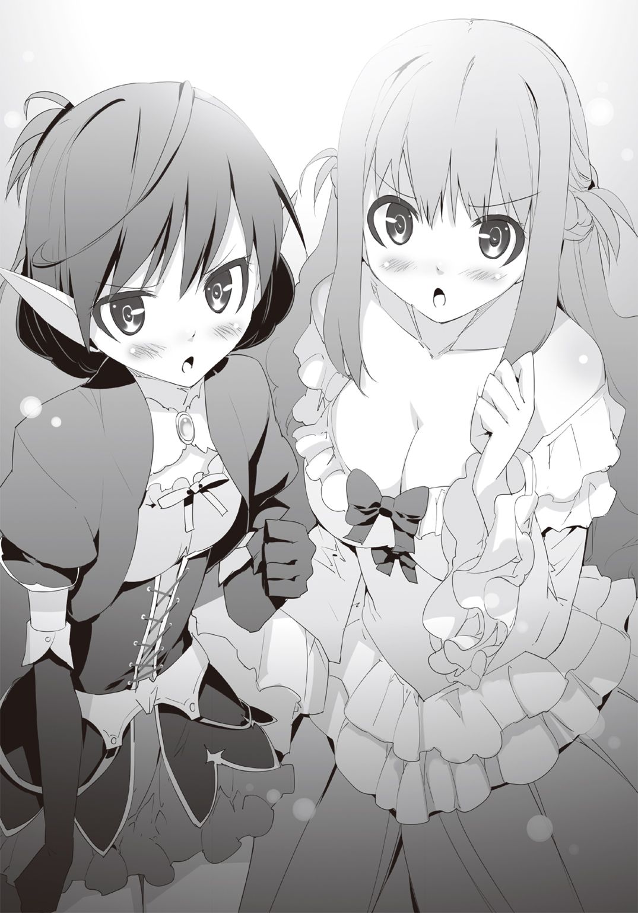
......本当にその通りだよ。
「こんな調子で、これから先上手くやっていけるのか......？」
オレの嘆きに返る言葉はなく。
現実逃避で逸らした視線の先、開かれた窓からは、蒼穹が見えた。
また――空を、竜が舞う。
アラムヴェルト。三年前、平凡な学生だったオレを英雄に変えた異世界。
打倒皇帝を目指し、数々の冒険を繰り広げた道筋を、まるで逆に辿るように再び始まったオレの旅は。
「リョウマ！」「リョウマ様ッ！」
――更なる波瀾を孕み、まだ、遙か遠くに続いていくようだった。
ＦＩＮ
あ と が き
皆様、初めまして！ 空埜一樹です。
普段は他の出版社でちょこちょこと書いている者ですが、この度、縁があってダッシュエックス文庫さんにて本を出させて頂くこととなりました。
突然ですが、皆さんは、「その後の話」についてどう思うでしょうか。
勇者が魔王を倒した。英雄が世界を救った。少年達が街の平和を取り戻した。
全ての物語には始まりがあり、そして終わりがあります。
例えば小説なら、ページを最後までめくり、本を閉じれば、そこで完結となるのです。
ですが、お話を現実と考えればどうでしょう。
当然ですが、倒したあとも、救われたあとも、平和を取り戻したあとも、世界は続くのです。
で、あれば、それに付随して様々な問題が起こってくるはずです。
英雄譚だけでは語りきれなかった裏の部分が、垣間見えてくるかもしれません。
ぼくは、そんな「その後」が気になって仕方のない性質でした。
色んな物語を体験し終えても、それだけでは終わらず、延々と妄想して勝手にアフターストーリーを楽しんでいたものです。
そんなぼくが書き上げたのが、この、本来であれば終わっていたはずの物語の世界を旅する少年を主人公にした、『逆道の覇王戦記』です。
ちょっと変わったお話かもしれませんが、楽しんで頂けると幸いです。
逆道といえば、小学生の時「背中向けて走ると普通より速いんだぜ」と恐ろしいドヤ顔で駆け出した結果、爽やかなほど迷いなくドブに落ちたハヤシダくん（仮名）、元気かなあ。
関係ないですね。次からちょっとだけ謝辞を。
担当のＴ様。長い間、様々な面で本当にお世話になりました。これからも反省しつつ同じような感じでお世話になるかもしれませんが、何卒、宜しくお願いします。
イラスト担当の植田亮様。ぼくの頭の中でイメージとして存在していただけの各キャラクター達が、素晴らしい絵によって次々と魂を吹き込まれていくさまに、ただただ圧倒されていました。本当に、ありがとうございます！
また、各所で応援メッセージを下さる方々、何よりこの本を読んで頂いた全ての読者様へ。
最大限の、感謝を。
それでは、またお会いしましょう。
一月 ＢＧＭ『無し』
ＨＰ 『空ノページ』 http://www.eonet.ne.jp/~tabibito5/
著者紹介
空埜一樹 そらの かずき
ＨＪ文庫にてデビュー。その後、色々書いて今に至った。
ＤＸ文庫では今回が初となり、緊張している。
緊張のあまり、最近は怪獣フィギュアを買い漁ることに没頭。
全ては緊張の為であり、他意はない。ないんだ。
illustration
植田 亮 うえだ りょう
こんにちは、初めまして。
イラストを担当しました植田です。
ラノベとかゲームとかいろいろ描いたり塗ったりしてます。
最近色塗りに使ってるソフトが古くなってきてしまったので変更しようと思っていろいろ試してるんですがなかなかしっくり来るものがなくて困ってます。
ダッシュエックス文庫DIGITAL
逆道の覇王戦記
著者 空埜一樹
(C) KAZUKI SORANO 2015
２０１５年３月31日発行
この電子書籍は、ダッシュエックス文庫「逆道の覇王戦記」
２０１５年２月28日発行の第１刷を底本としています。
発行者 鈴木晴彦
発行所 株式会社 集英社
〒１０１－８０５０
東京都千代田区一ツ橋２丁目５番10号
０３－３２３０－６０８０（読者係）
制作所 株式会社デジタルディレクターズ
本作品の全部また一部を無断で複製、転載、改竄、インターネット上に掲載すること、および有償無償に関わらず、本データを第三者に譲渡することを禁じます。なお個人利用の目的であっても、コピーガードを解除しての複製は、法律で禁じられています。